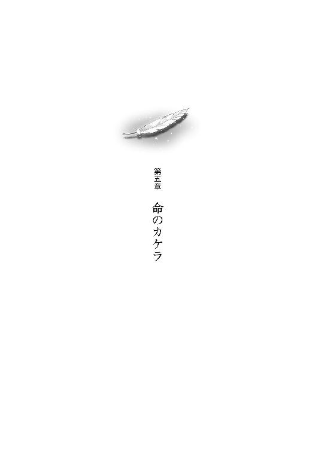

| ～覚醒遺伝子～ めぐりあう鼓動 (電撃文庫) | |
| 中村 一 | |
| 株式会社KADOKAWA (2015) | |
本書（電子版）に掲載されているコンテンツ（ソフトウェア／プログラム／データ／情報を含む）の著作権およびその他の権利は、すべて株式会社ＫＡＤＯＫＡＷＡおよび正当な権利を有する第三者に帰属しています。
法律の定めがある場合または権利者の明示的な承諾がある場合を除き、これらのコンテンツを複製・転載、改変・編集、翻案・翻訳、放送・出版、公衆送信（送信可能化を含む）・再配信、販売・頒布、貸与等に使用することはできません。
彼女の目の前には、海が広がっていた。
黄昏の色に染め抜かれた、燃えるように赤い、砂浜だ。
足元を見る。
靴を履いていない自分の素足が夕日に照らされている。細かい砂を踏みしめるときのこそばゆいような感触は、不思議と感じられない。
そっとしゃがみ込み、足元に落ちている一枚の貝殻を拾い上げてみる。
けれどもそれは、まるで鳥の羽根のように軽くて、質感がない。......透明な、手触り。
持ち上げて目の前にかざす前に、音もなく崩れ落ちてしまう。
顔を上げる。空を見上げる。
赤から濃紺、そして黒へと変化する、壮大なグラデーション。
軽くめまいを覚えて、視線を戻す。
右を見ても、左を見ても、そこにあるものは海と空、そして、砂浜。
「──」
そのとき。
視界の隅に、なにかがふわりと翻る。
「......ぁ」
喉から漏れた彼女の声が、優しい波音に吸い込まれて消えた。
砂と水の、境目。
そこにひとりの──、
天使がいた。
「てん、し......？」
波打ち際に素足で立つその体軀は、とても華奢で、繊細。
漆黒の長い髪が躍る背中。そこに生えているのは、言葉にできないくらい......、完璧な。
美しい、一対の翼。
柔らかな羽毛を思わせる一本一本の羽根が、海原の風をはらんで揺れている。その様子が、少し離れた彼女の瞳に映り込む。
天使は細い両腕を広げて目を閉じ、海原に走る風と波の音に耳を澄ませているようだ。くるりと身体の向きを変えたとき、その優しい表情が見えた。
彼女はほとんど無意識に手を動かし、自分の髪にそっと触れる。
腰まで伸ばした薄いブラウンの髪が、風にふわりと揺れた。
でも。
波打ち際で遊ぶ天使の艶やかな黒髪を見て、彼女の胸には透き通った羨望が生まれる。
「......きれい」
また、思わず声が漏れた。
その声に気付いたのだろうか。天使がゆっくりと目を開いた。
目が、合う。
夕日を背にして、天使はその顔に優しい笑みを浮かべた。
あまりに神々しい、その姿。
彼女は震える胸の前で固く両手を結んで、精一杯の笑顔を返した。
もちろん、怖いわけじゃない。
彼女を満たす感覚は、もっと柔らかくて、優しいなにか。
「──」
そのときだった。
天使の翼が大きく広がり、ゆっくりと、けれど力強く、打ち下ろされた。
次の瞬間、まるで見えない糸で吊り上げられるかのように、その華奢な身体が波打ち際から浮き上がる。
夕日を背負って飛翔する、その姿。
綺麗だった。
それ以外に、言い表せる言葉がなかった。
彼女の口から、ため息が漏れる。
そして。
彼女はその手で、自身の背にそっと触れる......。
いつしか辺りには、鐘の音が響き渡っていた。
朝。
通学途中だった。
かれこれ三年の付き合いになる愛車（一万円でお釣りが来ちゃうようなシティサイクル）のペダルを踏み込み、交通量の多い国道を北へとひた走る、いつものコース。
久々の寝坊で少しばかり焦っていた僕は、ひとつの重大な過ちを犯すことになる。
僕の前には、一台のママチャリが走っていた。
とある交差点に差し掛かり、ママチャリが横断歩道をふらふらと渡ってゆく。それを見て、疑うことなく『青信号だ』と信じ込んだ僕は、ろくに確認もしないまま、後に続いた。
次の瞬間。
聞こえたのは、甲高いブレーキ音。
重なるように響くのは、分厚く重いタイヤがアスファルトを滑る、低くて長いうなり声。
ほとんど反射的にそちらを見る。
トラック、だった。
『赤信号を無視して』横断歩道に立ち入った僕に、真横から迫る鉄の塊。
その巨体がスピードを殺し切れないまま、交差点に侵入する。
──ヤバい、死ぬ。
誰かの悲鳴が聞こえる。
フロントガラス越し、トラックの運転手が慌ててハンドルを切るのが見えた。
スリップした車体は僕の身体をギリギリでかすめ、向かい側の歩道へと突っ込む。
そして。
なんたることか。
そこにはちょうど、信号待ちをしていた一台の自転車が......。
「──っ」
鈍い衝撃音。鋭い破裂音。
耳から入ってくる幾多の情報を処理し終える前に、より刺激的な視覚情報が僕を襲う。
バラバラになった自転車。
すさまじい衝撃に、空中に放り出された人。......そう、ヒトだ。
自転車に跨っていた人間が、トラックにはね飛ばされ、宙を舞う。
制服姿。スカート。
女の子。
ひょっとするとそれは、『空を飛ぶ』という表現のほうが適切だったのかもしれない。
その小柄な身体は空を飛んで......、道路脇の街路樹をかすめて。
『がつん』
耳の奥に鈍く響いた音とともに、容赦なく歩道に打ち付けられた。
「......」
早鐘のように打つ自らの鼓動に、身体の芯が揺れる。
──僕は今、とんでもない状況に直面している。
数メートル先の地面に、ぴくりともしない女の子の小さな体軀が横たわっているのだ。
そして、どう考えても、この事故の原因は僕にある。
見て見ぬフリなんて、できるわけがない。
あの速度でトラックにはねられて、硬いアスファルトに叩き付けられて、無事なはずがない。
事故現場に立ち尽くす僕は、喉がからからに渇いて、声が出ない。よしんば出たところで、混乱する今の頭ではまともな言葉は紡げないだろう。
小刻みに震え出した手足に意識を翻弄されながらも、僕は次に自分が取るべき行動を必死で考えようとした。
......と、視界の隅で、なにかが動く。
見れば、バンパーを凹ませたトラックのドアが開いて、運転手が降りてきた。壮年、白髪混じりで気の弱そうなおじさんが、顔を青くしてこちらにふらふらと歩いてくる。
──そのとき、だった。
「痛ったいなっ、もう！」
大怪我をしたはずの女の子が、突然むくりと起き上がったのだ。
「う、うわぁっ！」
言葉通りに真っ青な顔のおじさんが、言葉通りに飛び上がって驚く。
無理もない。
「......うそ、だろ」
僕だって飛び上がりたかった。もっと言うならば、逃げ出したかった。
「なんなのよ、もおっ......、空飛んじゃったじゃん！ どうして私がはねられるワケ？ 意味わかんない！」
自身の足でしっかり立ち上がった女の子は、思っていたよりずっと小柄だった。
その背に揺れる、薄いブラウンの髪。
小さな顔にはまるで作り物みたいな、整いすぎた目鼻立ち。
スカートの裾を払った女の子が顔を上げて、僕をぎろりと睨んだ。
「ちょっと、なに信号無視してんのよ！ 信じらんない！」
あまりの迫力に言葉を失った僕に見切りをつけ、彼女は辺りに散らばった荷物に目をやる。
「カバン壊れちゃったしさぁ......、もう、凹むなぁ」
そりゃ、そうだ。自転車がバラバラになるくらいなんだから。
彼女は、ふたが取れかけて本体と首の皮一枚で繫がっている通学カバンを拾うと、周囲に散乱する内容物を拾い集め、カバンに放り込んでゆく。
「ちょっと！ 携帯ないじゃん！ ......あっ、あれかな」
見れば数メートル先の路面に、恐らく衝撃で吹っ飛ばされたのであろう、赤い携帯が転がっている。ストラップはちぎれ飛び、ボディの表面はアスファルトとの摩擦でざらざらに傷が付いてしまっている。
それなのに彼女はさして気にした様子もなく、
「へへ。良かったっ。木っ端みじんにならなくて」
まるで『運が良かった』みたいな顔でへらへら笑っている。
......あ。
よく見れば、制服がところどころ破れている。袖口、肘、そしてスカートの裾。
対照的に、彼女の身体には傷ひとつない。膝小僧を擦りむいてすら、いない。
「......あり得ねぇ」
思わず漏らしたその呟きに、彼女が敏感に反応した。
「それはこっちの台詞！」
つかつかと歩み寄ってきたかと思うと、手にした携帯の角で僕の頭をごつりと一撃。
「......いてっ！」
「なに？ まさか文句言える立場だとでも思ってるワケ？」
非難がましい視線で見てしまったことに対してだろう。彼女は遥かな高みからこちらを見下ろすかのような目付きで、こう続けた。
「当然、落とし前はつけてもらうから。......まず、学校まで送ってよ」
「がっこう......、って」
「戸塚山学院。道は教える」
それは、分かっていた。彼女の制服を見たときから。
この近辺で有名なお嬢様学校の制服を判別できないほど、僕は情けない男ではない！
「でも......、今からじゃあ」
ちらりと腕時計を見る。ここから戸塚山になんか寄ったら、確実に遅刻だ。
「そう！ 遅刻しちゃうでしょ？ 今度遅刻したらトイレ掃除一カ月って担任に脅されてるし、急がないと！」
そりゃまた随分と古典的、ステレオタイプな罰だな、なんて馬鹿なことを一瞬でも考えた僕こそが馬鹿だった。その一瞬の隙をついて、彼女が荷台に飛び乗ったのだ。
「つべこべ言ってる暇があるならさっさと出しなさい。人も集まってきちゃったし」
勝手に後ろに乗られたことに抵抗しようと思ったのも束の間、彼女の言葉に辺りを見渡してみると......、確かに、結構な数の野次馬がこちらを凝視している。
「この様子じゃ、警察にも通報されちゃってる」
彼女が呟くのとほとんど同時に、彼方からパトカーのサイレン音が聞こえてくる......。
「で、でも！ 事故の原因は僕なんだし、逃げるわけには......」
傍らに立ち尽くしたままだったトラック運転手のおじさんを見ると、困惑と動揺が混ざったような、複雑な表情をしていた。
「ね、おじさんも面倒なことには巻き込まれたくないでしょ？ 現場検証とか事情聴取とか、きっといろいろ大変なんでしょ？」
後部座席の彼女がそう言うと、おじさんは曖昧な表情で「そりゃ......」と呟く。
「この通りホラ、あたしは全然平気ですから。怪我してないし。だからさっきの事故は、なかったことにしてくれません？ そのほうがお互い、ラクですよね？」
畳みかけるような彼女の台詞に、おじさんはやはり曖昧に頷く。
「ありがとう！ それじゃ、失礼しまぁーす。......ほら、さっさと出しなさいよ」
おじさんに向ける言葉と僕に向ける言葉とで、声の高さが一オクターブは違う。
彼女から壊れたカバンを受け取った僕は、それを前カゴに入れ、おじさんに頭を下げてから、おずおずと自転車を発進させる。
──待て。待て待て待て！ 逃げるような真似をするのはやっぱりマズくないか？ こんな大きな事故で、目撃者もこんなに集まっているのに。
......でも。
それこそ警察から大真面目に事情聴取されたりしたら......、もっとマズい！
『大型トラックのバンパー凹ませておいて、なおかつ自転車はバラバラで、......でも、女子高生は無傷です』
なんて現象、誰が納得するというんだ！ 警察だって何とか事象に説明を付けようとして、推測やらこじつけやらを持ち込んで、もっとややこしい話になるはずだ。
「そこ、左ね。そしたら西海高野線にぶつかるから右。そのまま線路沿いに真っ直ぐ。あぁあ、もう、じれったいっ！ もっと速く漕げないの？」
背中から飛んでくる指示や罵倒を聞きながら、僕はとにかくペダルを踏み込む。
あのときちゃんと信号を確認しなかったことを今さらながら後悔するが......、もう遅い。
せめて、『故意ではなかった』ことだけでも伝えておこうと思い、僕は慌てて口を開いた。
「あの、さっきの事故、なんだけど。......その、ワザとじゃないんだ。赤信号を無視して交差点に突っ込んだんじゃなくて、前を走ってたママチャリが横断歩道渡ったから、信号青だと思い込んじゃって......。でも結果的に信号無視になっちゃったんだけど......、その、なんていうか」
「あっそ。まぁ、もういいよ、それは。こうして誰も怪我してないんだし」
本当にどうでも良さそうな声が、後ろから聞こえる。
「自転車大破しちゃったけど......、ちょっと空を飛べたのは面白かったしさ」
──面白かったのか。
「......」
と、どういうわけか彼女が、無言で僕の制服のポケットをまさぐり始める。
「え？ ......い、いきなりなにしてんだ！」
慌てた僕の声は情けなく裏返ってしまう。
「いいから。携帯貸して」
彼女は有無を言わせぬ勢いでポケットのなかの携帯を探り当て、それを抜き取ってしまった。
「わお。これ、ワンセグ観れるやつじゃん」
彼女は後部座席に横向きに腰かけているので、重心が偏り非常にバランスが悪い。僕は慎重にハンドルを切って、線路沿いの道に入る。
「ちょっと使うから」
使わせてね、じゃないのか。
次の瞬間、彼女の携帯から鳴り響く着信音は、おなじみ『笑点のテーマ』。
......えーと、ここは突っ込むところか？
しかし、僕のような口下手には、ちょいと高度すぎやしないか？
突っ込まぬボケに祟りなし。
「......」
ダンマリを決め込むことにした。......まぁ当然だが、彼女がそれを気にした様子はない。
続けて今度は彼女の携帯から、僕の携帯に電話をかけているようだ。
「よーし、壊れてない。......あ、そこ！ その信号を右ね」
彼女が後ろから、身を乗り出してくる。
触れてしまいそうなほど近くに、彼女の顔がある。
甘い香りが鼻をかすめ、どきりと胸が跳ね上がった。
──冷静に考えてみれば、女の子とこんなに至近距離で会話を交わすのは、小学生のとき以来かもしれない。そもそも自転車の後ろに女の子を乗せるなんていう経験、これまで一度もしたことが──。
そんな考えに及んだ途端、背中の彼女を必要以上に意識してしまう。
「ねえ」
呼びかけに後ろをちらりと振り返った瞬間、視線が交錯した。
「どこかで......、会ったこと、あるっけ？」
予想していなかった言葉に、僕は戸惑う。
「......？ 気のせいだと、思うけど」
生憎だが、僕は彼女の顔に見覚えがあるわけではなかった。......だいたい、戸塚山学院のコに知り合いなんて、いるわけないじゃないか。
──トラックにはねられて無傷でいられるほど頑丈なコとなれば、なおさらだ。
「......あの」
決死の覚悟で、僕は訊いてみた。
「怪我......、ないのか？」
「ラッキー♪ 今日は『た』行が一位だってさ」
──。
テレビの名前占いを見てやがった。人の携帯で。
「ワンセグいいなー。あたしも欲しい」
「あのさ！ 聞いてる？」
思わず声を荒らげてしまった。
「......なによ。怒ってるの？」
逆に低い声で凄まれ、僕の言葉は尻すぼみになる。
「......いや、その」
「返す」
彼女の右手が伸びてきて、僕のポケットに携帯を落とした。
「......」
「......」
しばしの、沈黙。
風を切る音だけが、耳元で響く。
「ねぇ」
もう一度、さっきの事故のことを訊こうとしたら、彼女に先を越された。
「名前は？」
「......ぼくの？」
「当たり前でしょ」
「半井......、成幹」
「なるき、くんね。......じゃ、あだ名は『なるきん』だ」
なんでそうなるんだ。
「ちなみに『な』行は最下位。残念だったね」
そう言って、不敵に笑う。
「......」
確かに、今のこの状況、とてもじゃないが運勢が良いようには思えない。
しかし逆に、運勢一位の彼女が朝から事故に巻き込まれて大型トラックにはねられているのだから、果たして果たして、運勢ってなんだ？ ということになる。
「あの、も一度訊くけど。その......、身体、なんともないの、か？」
「なにが？」
「いや、だから！ 空飛んで、落ちたよな？ 自転車、全壊だったよな？ なのにどうしてその、キミは無傷なわけ？」
少しばかりの間を置いて、彼女はしれっと言った。
「イマドキの女子高生は丈夫なの。みんなこんな感じなんじゃない？」
──噓つけ！ そんな馬鹿なことがあってたまるか！
いい加減疲れてきた僕は、言葉を返す気力を失ってしまう。ここまでしらばっくれるということは、きっとあまり触れてほしくはないわけで......、だったらそんなにしつこく追及するべきではないわけでもあり......。
信号待ちの間、僕は後ろをちらりと振り返った。彼女の大きな瞳が、こちらに向けられる。
よく見れば、結構......、いや、かなり可愛い。しかも『お嬢様学校』などという、僕の人生にはまず縁がないと思っていた単語が、無闇に心に波風を立ててくれる。
肝心の性格はいまひとつ捉えがたいが......、それも『お嬢様学校』の為せるワザだろうか。
「......」
興味から。本当に、ただの興味から、訊いてみた。
「『た』行、って言ってたよな。......名前、なんて言うの？」
声に出してみるとなんだかひどく軟派な台詞に思えて、取り消したい気持ちに駆られる。
「......あたし、ナンパって大嫌いなんだけど」
「い......、いやっ、別にそういう意味じゃなくて！」
後ろで、彼女がふんと鼻を鳴らしたのが分かった。
「冗談だって。......私の名前はね、千夏っていうの」
その声。
その名前。
耳に届いたその瞬間。
僕のなかで、なにかが小さく波打った。
「......ち、なつ？」
「千の夏でちなつ」
千夏。
その名前は、なんだかとても。
懐かしい気がする。
初めて会ったのに？
......なつかしい？
「あっ、もうすぐ着くじゃん」
理由も分からず突如湧き上がった感傷に戸惑っていると、背中から彼女の声が。
見れば、目的地である戸塚山学院の正門が視界に入った。
赤レンガ造りの豪奢な建物が、次第に大きくなってくる。
校庭に茂る新緑の色に引き立てられ、それはこの上なく美しかった。
「おぉ......」
思わず、感嘆の声を上げてしまう。
だって......、ねぇ？ 『お嬢様学校』ですよ？
「やったね。トイレ掃除、免れたりっ！」
正門前に到着。
よく分からない決め台詞を吐きながら、彼女は地面に飛び降りる。
ふっ、と、背中の微かな温もりが消失した気がした。
僕は前カゴから瀕死のカバンを抜き取り、彼女に差し出す。
「間に合った？」
僕の前に回りカバンを受け取った彼女が、少しだけ顎を引くようにして、浅く頷く。
「思ったより早かった」
「それはなにより」
僕は地面に片足をついて、視界に現れた彼女の小柄な全身をさりげなく観察した。
これまで気付かなかったが、彼女の形の良い唇には、濃いピンクのルージュが引かれている。
彼女はひらりと身を翻すと、校舎へ向けて一目散......、ではなく、ゆったりと鷹揚に歩き始める。数歩進んでいきなり止まったかと思うと、くるりと回れ右。何故か引き返してきた。
「......」
無言でカバンのなかを漁ること数秒。ずいと差し出された、彼女の右手。
よく見れば、その細い指の先にある爪にも、唇と似たような色のマニキュアが施されている。
人差し指には、可愛らしいブタのイラストが描かれた絆創膏が巻かれていて、言動とのギャップに僕は不覚にも笑いそうになる。
それに気付いたのだろうか。彼女が怪訝そうな顔で僕を見た。
「どうしてニヤニヤしてんの？」
「いや、な、なんでも」
「手、出しなさいよ」
手のひらで恐る恐る受け取ったものは、ふたつの小さな包み。
「......これは？」
「チョコ。トラックにはねられてなお原形をとどめていた強者たち。これを食べて強くおなり」
「......」
「なに？ 要らないワケ？」
ぎろり、と睨まれる。
「え！ えっと、これはつまり、『お駄賃』？」
すると彼女は細い眉を微かに吊り上げて、僕を見据える。
「そう思ったのなら......、そういうことに、しといてもいいけど？」
「──あ、ありがとう」
彼女の眼光に気圧されるまま、僕はありがたく受け取ることにした。
実際、甘いものは大好きだし。
それに『女の子からチョコをもらう』なんていう、ありそでなかった状況が形だけでも突然実現してしまったことで、僕の心は不必要に浮き足立っていた。（......二月十四日はとうの昔に過ぎてるというのに）
そんな僕の気持ちを知ってか知らずか、彼女はふん、と小さく鼻を鳴らした。
整ったその顔を正面から見ていると、なんだか気恥ずかしくなってくる。
ほんとに......、可愛い、な。
「じゃ、あたし行くから。あんたも遅刻しないように」
無茶言うよなぁ。始業まであと五分だというのに。
心のなかで反論した、そのとき。
彼女の口調が、がらりと変わった。
「ご縁がありましたら、また、お会いしましょう」
音もなく。
すらり、と美しく、優雅に下げた頭を元に戻してから。
彼女はにっと不敵に笑い、きびすを返した。
朝日に照らされた、明るいブラウンの髪が揺れる。
破れたスカートを翻して駆けてゆく。
小さくなってゆく後ろ姿をぼんやりと見つめながら、僕はぽつりと呟いた。
「ご縁......、ね」
静まり返った、戸塚山学院の校門前。
さすがにお嬢様学校ともなれば、始業ギリギリに慌てて登校してくる生徒なんていないのだろうか。
ただし、不慮の事故でトラックにはね飛ばされた人は除く──。
手のひらの包み、彼女からもらったチョコをカバンのポケットに入れてから、僕はペダルを踏み、そっと自転車を発進させる。
それにしても。
あのコ──、千夏、最初からどこかぶっ飛んでたけど（文字通り）、最後だけは妙に、『お嬢様』っぽかった。あの物腰と言葉遣いを、とっさに出せるということ。......それって、一朝一夕にできるものではない。そのくらい、彼女が最後に見せた仕草は美しかった。
とはいえ、それ以外のところでは、慣れ慣れしいのか無愛想なのか高圧的なのかいまひとつ分からない感じで、なんとも捉えどころがない。
僕のなかにある『お嬢様』のイメージとは、少々かけ離れたものがあった。......それは、勝手な先入観だろうか。
五月の清々しい風を顔に受けながら、腕時計をちらりと見た。すでに、始業の時間は過ぎている。
いっそ学校へは行かず、このままどこかへ出かけるというのも、それはそれで素敵だ。けれども......、僕はそんな自由闊達な人間ではない。残念ながら。
なんだかんだ言って、怖いのだ。枠からはみ出すのが。
言うなれば『変人に憧れる凡人』といったところか。
大した意味もないモノローグを紡ぎながら、ゆるゆると進む。
そのとき、ふと見た自転車の前カゴに、なにかが入っているのに気付いた。
ちょうど信号が赤だったので、ブレーキ。カゴのなかのそれを、手に取ってみる。
上品な色合いをした、革のカバー。手のひらに乗ってしまうほどの、小さなそれは。
──生徒手帳、だった。
「あのコの？」
あまりよろしいことではないと分かっていても、頭をもたげる好奇心に打ち勝つことはできなかった。
細心の注意を払いながら、僕はその手帳をそっと開く。表紙をめくったその裏側に、生徒証が挟まっていた。
『戸塚山学院 二年Ｆ組 初鹿野千夏』
生徒証の顔写真は、確かにさっき見た、彼女のものだった。正面からのお澄まし顔だ。
ページをめくる。あとはまぁ、ありきたりな生徒手帳の内容。校則だとか、校歌だとか。
「......ん？」
最後のページ、裏表紙の直前に、一枚の写真が挟まっていた。
スナップ写真を小さく切り取ったそれには、三人の小さな子どもが写っている。
小学生くらいの男の子。幼稚園児くらいの女の子。そしてもっと小さい、三歳くらいの女の子。三人は小さな身体を寄せ合うようにしてソファに埋もれ、満面の笑みを浮かべている。
なんとなく、分かった。年齢や性別が違っても、そっくりな顔つき。きっとこの三人は兄妹だ。
そして、真ん中に座る幼稚園児くらいの女の子。これが千夏だろう。
じゃあ、小学生くらいの男の子はお兄さん、一番小さな女の子は、妹ということになる......。
どくん
不意に。
自分の心臓が不自然に締め付けられるような錯覚に襲われる。
「なん......、だ？」
息苦しくなる胸を、右手でそっと押さえる。
やがて信号が青になったが、身体が強張り、僕はその場から動くことができない。
横を通り過ぎて行った人たちが振り返り、ちらちらと好奇の視線を投げてくる。
しかし、それらに対して反応を返せるほど、僕には余裕がなかった。
胸の奥が妙に熱く、身体は鉛のように重い。誇張でも何でもなく、全身の血が煮えたぎるようだ......。
「この写真......」
手帳の最後に挟まっていたそれを、指先で抜き取る。
「......」
何故だかとても、懐かしい気がする。
この写真を見るのは初めてのはずなのに、初めてではないような、いつかどこかで見たことがあるような......、そんな、気がした。
「──なわけ、ないよな」
今日初めて会ったコが持っていた写真を、見たことがあるなんて。
僕は軽く首を振ってから、写真を挟んで生徒手帳を閉じ、そっと前カゴに戻した。決して小さくはない後悔が、ちくちくと胸の裏側を責め立てる。......やめとけば、よかった。
目を閉じて、大きく深呼吸。それを三回。
身体の異変は、いつしか綺麗に消えていた。
それから三十分弱、僕は自責の念を抱えたまま、交通量が少しだけ減った九時台の国道をひとり北上した。
＊
結局、学校に着いたのは九時四十五分という、なんとも中途半端な時間。僕は自転車を駐輪場の隅に置くと、そのまま人気のない部室棟裏へ。芝生に寝転がって空を眺めたり、携帯をいじったりして無為に時間をやり過ごす。
やがて、一時間目の終わりを告げるチャイムが聞こえてきた。
休み時間のざわめきに紛れるようにして、僕は教室へと滑り込む。
何事もなかったかのように自席に着いたつもりだったが、甘かった。
「珍しいな。どした？」
僕の挙動を目ざとく発見したのは、波原だ。
彼は顔の左半分だけでニヤニヤと笑いながら、こちらに近づいてくる。
「品行方正なお前が、堂々の大遅刻ときた。のっぴきならない事情があるとみたね、この俺は」
その大仰な言葉遣いに僕は多少の疲労感を覚えながらも、適切な言葉を探してしばらく沈黙する。
「まぁいろいろ、あってさ。......自転車バラバラとか、トイレ掃除とか、名前占いとか」
彼は顔の左半分から表情を消すと、今度は右半分にねじれた笑みを浮かべる。
「ホラーでコミカル、エキセントリックなパラダイムだな。──お前、俺をナメてんのか」
自分から話しかけてきたんだろうが。
仕方がないので僕は、分かりやすく、効果的と思われる単語を使うことにした。
「戸塚山学院」
「......あ？」
「運ちゃんやってたんだ」
「なんだと？」
「戸塚山の女の子と知り合って、彼女を自転車に乗せて学校まで送ってきたから、遅くなった」
言葉を切って波原の様子を見れば、彼は顔全体を苦々しそうに歪めて、眉根を寄せていた。
「お前な。噓をつくんだったらもうちょっとマシな」
「本当だって！ そのコが大型トラックにはね飛ばされた場面に居合わせたから、成り行きでそうなって」
言ってみて、やっぱり無理があるな、と実感。でも、噓は言っていない。
「......したらなにか？ お前は、交通事故に関わっておきながら警察も救急車も呼ばず、大怪我した女の子を自転車に乗せて学校まで送ったとでも言うのか？」
一カ所だけ、訂正する必要があった。
「無傷、だった。ぴんぴんしてた。......そのコの自転車は全壊だったけどな」
波原が絶句したのが分かった。
「──」
「もう一度言うけど、本当だぞ？ 信じてくれ。こんな無意味な噓を波原に吹き込んだところで、僕にはなんのメリットもないんだから」
「まぁ、そういうことにしておいてやってもいい。......けど、俺以外のヤツには話すなよ。正気を疑われたくなかったらな」
それはつまり、波原自身は信じてくれた、ということだろうか。
「しかし、県内随一のお嬢様校である戸塚山のコとお近づきになるたぁ......、お前も隅に置けねぇ！ 裏山の鹿。うらやましか！」
......信じていないようだ。
「あのさ」
仕方がない。
少々大人げないとは分かっているが、僕も意地を張りたくなってきた。本当のことを喋っているのに噓だと思われるのは、非常に癪である。
「夢とか妄想とか、そういうんじゃないってことは証明できる」
波原は再び顔の左半分でニヤリと笑い、僕を見た。
「ほう。......どうやって？」
僕はカバンのなかに手を突っ込む。
「これだ。送ってったお礼に、そのコがくれたチョコ」
別れ際に彼女がくれたチョコの包みを、机の上に並べる。
「トラックにはねられても無事だった『強者たち』。......食べると、強くなるらしいぞ」
瞬間、波原はくるりときびすを返し、自席へ戻り始めやがった。
「お前のボケのセンスを疑うよ。──ま、大事にとっとけ。腹が減っても食うんじゃないぞ」
......ぬぅ、やっぱり信じてないな。
極めて真面目に話しているのだが、程度の低いおふざけだと思われてしまったようだ。
僕はとっさに、カバンの内ポケットにしまってある千夏の生徒手帳を取り出そうかと迷うが、いくらなんでもそれは......、と踏みとどまる。
すると、向こうへ行ったと思っていた波原が、何故かこちらに戻ってきた。
「ったく、お前がおかしなこと言うから、本題を忘れちまったじゃねぇか」
僕は『強者たち』をカバンに戻しながら、波原に向けて首を傾げる。
「本題って？」
「眠り病だよ」
「──」
僅かな瞬間、思考が停止する。
『眠り病』──。
数年前に世間を騒がせた、奇病の名前だ。
その病を発症した患者は何の前触れもなく深い眠りに落ち、やがて体内で暴走する自らの骨に身体を破壊され、死に至る......。
治療法はおろか発症原因さえ分からず、この街でも多数の発症者、すなわち死者を出した。
眠り病にかかったら最後、患者は二度と目覚めることがない──、というわけだ。
言葉にしてみるとなんとも恐ろしい病気だが、それも、あくまで昔の話だ。
偉い先生によってすでに原因は解明され、今では適切な覚醒治療を施せば、患者は無傷で目覚めることができるようになった。
「俺の従兄弟が発症してな」
「......大丈夫なのか？」
「あぁ。今は入院してる。二、三日もあれば、治療は終わるとさ」
「病院は？」
「聖真医科大学病院ってとこさ。......確か」
「ああ。詩奈──、僕の妹も、そこ」
「もうすっかり、治ったのか？」
「眠り病はね」
幼い頃に眠り病を発症した妹の詩奈は、当時確立したばかりだった治療を受けて、見事に覚醒を果たした。
......けれども。
運命は、詩奈を無傷のままでは解き放ってくれなかった。
覚醒治療を受けるために病院へと運び込まれる最中に、眠り病の代名詞とも言える『骨暴走』が詩奈を襲ったのだ。発症から短期間で骨が動くという、極めて稀な症例だった。
彼女の体内を暴れ回った骨はいくつかの重要な臓器を傷付け、それらの機能の一部または全部を奪い去ってしまった。それが間接的な原因となったのか、まるで追い打ちをかけるように、血液の病気が妹の身に降りかかった。
詩奈は眠り病から無事覚醒したが、生きてゆくためには人工透析が必要不可欠な身体となってしまった。意識はしっかりしているものの、今のところ、一日の大半を病院のベッドの上で過ごしている。
「そう、か。......身体、悪くしたんだったな」
波原は少しだけ気まずそうな顔をした。なんだかそれが、申し訳ない。
僕にとって妹の病気は、彼女が幼い頃眠り病に捕われたときからずっとそこにあったもので、特別、人から気を遣われるようなものではない、というのが正直なところだ。
それは、他ならぬ妹とて同じように考えている──、と思う。
「大丈夫だよ。聖真医科大なら。......あそこには、眠り病の治療法を確立した偉い先生がいるしな」
そしてその先生は今現在、詩奈の主治医でもある。
「安心してまかせておけってことだな」
「まぁね。......僕ら素人がいくら祈ったところで、病気はそう簡単には......、治らない」
脳裏に、妹の姿がよぎる。
これまでの人生のほとんどの時間を、あの白い病室のなかで過ごしてきた詩奈。そしてそれは、これから先も──。
不意に二時間目の開始を告げるチャイムが鳴り響き、僕の思考の流れはそこで断ち切られた。
波原が肩をすくめ、とぼけた表情を浮かべてみせる。
「......そんなところだ。邪魔したな。心置きなく妄想を続けてくれ」
失礼極まりない台詞を残して回れ右すると、自席へと戻り始める。
一瞬、呼び止めて食い下がってやろうかとも思ったが、自重することにした。波原は、あまりしつこいのは好きじゃない。それに、休み時間も終わってしまったし。
僕は机の横にぶら下げたカバンのなかを、そっとのぞき込んだ。内ポケットに隠された、戸塚山学院の生徒手帳。彼女が僕の自転車に乗っていたという、確かな証拠。
......よし。
妄想じゃない。
二時間目、数学の教師はまだやってこない。
僕はカバンから再び『強者』チョコを取り出した。そのうちひとつの包装を破り、口へ放り込む。血糖値を上げて、ぼんやりする頭を少しでもすっきりさせようと思ったのだ。
いくら女の子からもらったチョコとはいえ......、後生大事にとっておいても、しょうがない。
......と。
「──」
口内で。
「────」
チョコがとろけ、舌の上にふわりと広がる甘さが......。
甘さが。
これっぽっちも。
......甘さ？
「んあぁあぁぁっ！ ......がはぁっ！」
目から、火が出た。
比喩ではない。
口からも、火が出た。
比喩ではない。......本当に、比喩などとは、言いたくない。
それくらい。
「かっ、からっ、からっい！ 辛い！」
休み時間が終わって教師を待ち受ける教室の、適度に張り詰めた空気。
僕の珍妙な叫び声が、その緊張感を一撃で破壊したのが分かった。
クラスメイトの大半はもちろん、自席に戻った波原までもが振り返り、目を丸くして、こちらを見ている。
僕は机に突っ伏すような体勢で、焼けつく喉と胸を両手で押さえる。ひりひりと痛む舌に、自然と顔が歪む。
額からは大量の汗が流れ出し、ついには身体がぶるぶると震え出した。
「ちょ、半井くん......、だいじょうぶ？」
心配してくれたのだろうか。隣の席に座る女の子、早坂さんが声をかけてくれた。
僕は全力の笑顔でもってそれに応えようとしたが、身体が思うように動いてくれない。
ちょうど、そのとき。
がらり！ とドアが滑り、数学教師の高村が入ってきた。
見た目は色黒、中肉中背で短く髪を刈り上げた高村は学年一......、いや、学校一怖いと噂される教師だ。感情の起伏が激しく神経質な性格なので、怒り出すポイントが非常に分かりづらい。生徒たちはいつも、戦々恐々としているのだ。
そんな高村が入ってきたものだから、教室内の緊張感が一気に高まる。
日直の号令により、起立、礼、着席。
それらを何とか乗り切った僕は椅子に崩れ落ち、滝のように流れる汗を手の甲で拭った。
......心なしか、視界がぼやけてきたような気がする。
「何を泣いてる、半井。いきなりうれし泣きか？ なら前に出て、例題を解いてもらおうか！」
耳を疑った。
あまりにも無情な言葉が、口内大火災と闘う僕に向けて、投擲されたのだ。
「......なんじゃ、こりゃあぁあっ」
クラスメイトの失笑を甘んじて受けながら、僕は全身全霊の力でもって、口のなかで小さく囁く。
もはや吐き出すこともままならない、激辛チョコレートに向けて......。
＊
彼女の生徒手帳を届けに行くか行くまいか、半日かけて悩み抜いた。
今朝の事故のこともあるのだし、直接手渡しに行って素直に喜ばれる自信はなかった。
むしろ、警察に落とし物として預かってもらったほうが、良いんじゃないか──。
そんなふうに考えもした。
しかし、結局。
放課後、僕は愛車のペダルを踏み込み、午後の国道を南下している。
程なくいつものコースを外れ、進路を西へ。
向かうは、戸塚山学院。
『お前の戯言が妄想じゃないってことは分かった。ただのギャグであの痴態を演じられるほど、お前は男気のあるヤツじゃないからな。......けれども、だ。これ以上関わり合いになるな、と俺は忠告しておいてやる。遅刻も顧みずに旅客サービスを提供した見返りが、あの幼稚な激辛チョコレートときた日にゃあ、呆れるしかないじゃねぇか。なぁ？』
逃げるように教室を出る僕に手向けられた、波原の投げやりな台詞。それを思い起こしながら、僕は線路沿いの道をぐんぐん進む。
胸中に渦巻いている感情の正体はよく分からないが、どうやら今、僕の気分は高揚している。
「落とし物を、届けに行くだけ......。別におかしなことじゃない」
自らの行動に正当な理由付けをしようと、言い聞かせるように呟いた言葉が、風に流れて消えてゆく。
学生として唯一の身分証をなくせば、彼女だって困るだろう。
それに、手帳に挟まっている、あの写真。......きっと、大切なものに違いない。
──に、しても。
なんだったんだろうか。あの写真を見たときの既視感と、全身の血が熱くなるような、奇妙な感覚は。
「関わり合いになるな......、か」
波原の忠告。
けれども朝、彼女はこう言った。
『ご縁がありましたら、また、お会いしましょう』
線路沿いの道を走りながら、僕はその『ご縁』とやらについて、考えてみようとした。
けれども。
僕の思考がスタートラインにつく前に、僕の身体はゴールラインに辿りついてしまった。目的地である戸塚山学院、その赤レンガ造りの校舎が、視界に入る。
まるで見えない力に気圧されるように自転車は速度を落としてゆき、やがて地面に降り立った僕は、からからと手で自転車を押しながら進む。
......と、前方で、戸塚山の制服を着た女の子たちがちらほらと正門から出てくるのが見えた。
僕は全身に緊張感をみなぎらせ、できるだけ彼女たちを見ないようにしながら進む。けれども、先方からこちらへ向けられる視線を無視できるほど、僕は図太い人間ではない。
「......」
そう広くはない道で、ほとんど息を止めるようにして、僕は彼女らとすれ違った。
安堵のため息。
そんな僕をあざ笑うかのように、門から次々に女の子たちが出てくるのが見えた。（当たり前だ。放課後なんだから）
慌てた僕は、とっさに引き返して裏門を探そうかと考えたが、踏み止まる。
『女子校の周囲を徘徊する、不審な男子高校生』
という恐ろしい映像が、脳裏をよぎったからだ。
それこそ、通報されたとしても、文句は言えまい。
「仕方がない......。腹を決めるか」
僕は正門から十メートル程度の位置で立ち止まり、敷地から出てくる女の子たちをこっそり観察することにした。
千夏が見つからなければ、誰かに訊いてみるしかない、か。
「......」
五分後、僕の決意は脆くも崩れ去ろうとしていた。
当然だ。こんな狭い一本道で『こっそり』もなにもあったものじゃない。
次々にすれ違う女の子たちの複雑な視線に耐え続けることができるヤツがいるとしたら、尋常ならざる厚顔無恥か、底抜けのナルシストだけだ。
それに誰かに千夏のことを尋ねたとしても、十中八九、ただのナンパ馬鹿だと思われて無視されるに違いない。
「やっぱ......、駄目だ」
ついに心折れた僕は方向転換して、学校の敷地を区切る柵沿いに歩き始める。通報の可能性については考えるのを止めた。
敷地内のグラウンドでは、たくさんの女子生徒たちが部活動に打ち込んでいる。
僕は自転車を押しながら歩き続け、やがて赤レンガ校舎の裏手に辿りついた。裏庭のようなその場所に、人影はない。校舎そのものの影に加えて、立ち並ぶ樹木や地面を覆う湿った土が、そこをひっそりとした静謐な空間に仕立て上げている。
そのとき、ポケットのなかの携帯電話が振動し、僕は言葉通り飛び上がって驚いてしまった。
「なっ、なんだ？ この番号」
全く記憶にない番号から、今まさに、着信しているのだ。
数秒間迷ったものの、今の自分が置かれた状況を少しでも忘れることができるのなら、と半ば自棄になって、電話に出た。
「......はい」
『あ、もしもし』
澄んだソプラノが響く。
被さるように、強い風の音がスピーカーから漏れてくる。
僕は思わず携帯を耳から少し離した。
「どちらさま、ですか？」
『......まさか、忘れたとか言うんじゃないでしょうね？』
途端、それまで聞こえていたソプラノが、地の底から響くような低音に変化した。
やばい、なんだコレ。
なんかの勧誘か？
「えっと......、間違いじゃ、ないですか？」
知らない番号だし。
そもそも、僕の携帯に電話してくる相手なんて、数えるほどしかいないのだ。
『あ・た・しの声。分からないの？』
──。
──まさか。
「え......、あ？」
『今朝会ったばかりでしょ。信じらんない』
「な、なんで僕の番号を」
そこで唐突に閃いた。
朝、自転車の後ろに乗せた彼女が僕の携帯を抜き取り、自分の携帯が壊れていないかチェックしていたことを。
「あのときの、履歴か......」
『ちょっと、聞いてる？』
「......あ、ああ」
唐突なあの言動、まさかこういう使い方を想定してのものだったのか？
『ま、いいけど。ね、お迎えに来てくんない？』
「......え？ おむかえ、って？」
『とぼけないでくれる？ 誰のせいでバラバラになったと思ってんの！』
「ばら......、ばら？」
『自転車だってば！』
じれったそうな彼女の言葉に、朝の衝撃的な光景が脳裏をよぎる。
『ちょっと寄り道して私の学校まで来てー、っていう、ささやかなお願いじゃん！ だいたい、あんたがちゃんと信号守ってればこんなことには......』
「いや、ていうか。それならすでに」
そのとき何気なく顔を上げた僕の視界に、飛び込んできた光景。
眼前にそびえる赤レンガ校舎の屋上に、赤い携帯を耳に当てて立つ千夏の姿が見えた。
すると、彼女もなにかを感じたのだろう。ゆっくりと顔を巡らせ、やがて地上にいる僕を見つけたようだ。
『は？ なんでいるの』
「いや、まぁその......、なんて言うか」
『でも、ま、ちょうどいいや』
そんな簡単な言葉を発すると、彼女はフェンスを摑んでそれをよじ登り始めた。
電話越しに、耳元でがしゃがしゃという音が響く。
「な、......な、なにして」
やがて彼女が、屋上に張り巡らされているフェンスを乗り越え、こちら側に立つ。
一方の手にカバンを引っかけ、さらに携帯を持ってこちらを見下ろすその姿は、今にもそこから落ちてしまいそうな危うさを醸し出していた。
そして、あろうことか。
なんのためらいもなく、彼女が屋上から軽やかに身を投げる。
「......ひっ」
上空を見上げる僕の喉から、おかしな音が漏れた。
──。
でも、軽やかに見えたのは最初の一瞬だけで。
──。
彼女の小さな身体は瞬く間に重力に引き寄せられ。
──。
地面めがけて一直線に落下し、そして衝突した。
『がつん』
その音を聞くのは、これで二回目。
思わず閉じた両目を恐る恐る開くと、黒い土の上に横たわる細い体軀が見えた。
「......あ」
思考が停止してしまった僕が見守るなか、絶対に起き上がれないことをやってのけた彼女はまたしても、むくりと起き上がった。
両手でスカートの裾を払い、隣に落ちていたカバンを拾い上げる。今朝の事故で相当なダメージを負ったカバンには、ガムテープらしきもので無理矢理すぎる応急処置が施されていた。
悠然と裏庭を横切って僕の前まで歩いてきた彼女は、足を引きずるどころか、擦り傷ひとつ負ってはいない。
「......う、うそ、だよな」
現実逃避めいた僕の呟きなど一切お構いなしに、柵越しにこちらの顔をまじまじと見つめながら、口を開く。
「なるきん、テレポーテーションとかできちゃう人？」
「で、できるわけないだろ。ていうか『なるきん』ってのやめ......」
「じゃ、エスパー？ なんで分かったの？ あたしが、迎えに来てって言うこと」
僕が押す自転車をちらりと見てから、不思議そうな顔の彼女がもう一度問うた。こちらの抗議については、耳を傾けてすらいない。
「え？ ......あ、あぁ。これ、届けにきた」
すっかり忘れていた本題を思い起こし、僕はカバンから生徒手帳を取り出した。
ぴくり、と彼女の眉が動いたのが分かった。
「あ、それ！ やっぱり落としてた？ 結構困ってたんだ」
そう言って、くるりと右を向いて歩き出す。
見ればそちらには、小さな通用門があった。
彼女はその通用門をくぐり抜け、僕の前へとやってきた。
無言で差し出されたその手に手帳を返しながら、疑問に思っていたことを訊いてみる。
「『はじかの』って、珍しい苗字だよな」
「なに勝手に人の手帳見てんの？ 信じらんない」
平坦な声とともに、手帳の角が僕の眉間をかつん、と打ち抜く。
──痛い。地味に痛い。僕はうっすらと涙目になりながら、
「い、いや、だって。誰のものか確かめないことには、届けられない......」
「そんなの、あたしのに決まってるじゃん！ ......余計なもの、見なかったでしょうね？」
そう言って睨まれたが、僕は曖昧に頷くことしかできなかった。──あの写真について触れることが、なんとなく得策ではないような気がしたからだ。
とりあえず、無難に謝ることにした。
「いや、まぁ。なんと言うかその......。ごめん」
「なに、それ？ そんな、『とりあえず謝っとくか』みたいなの、誠意なさすぎ。言わないほうがマシ」
凄むような声で強烈な駄目出しをしたあとで、彼女は口の端を上げてにっと笑った。
「バツとして、旅客サービスを無償で提供してもらうから。まずは今朝の交差点まで、乗せてって」
瞬間、脳裏によみがえる、衝撃的な映像。
耳の奥で再生される、激突音。破壊音。衝撃音。
目の前に立つ千夏の、ところどころ破けた制服。
バラバラになった自転車と、傷ひとつない、彼女の身体。
──そして。
今しがた、彼女は何をした？
僕が見たものが夢や幻じゃない限り、この小柄な女の子は、四階建ての校舎の屋上から飛び降りて地面に衝突して、なのに全くの無傷で、こうして立って歩いているのだ。
「......乗って」
そら寒くなった僕は小さく身震いし、ぶっきらぼうにそう言った。
すると彼女の背筋が、すっ、と伸びたのが分かった。
「ご縁が、ありましたね」
今朝の別れ際に聞いたそれと同じ、美しく、落ち着いた声。
戸塚山学院の赤レンガ校舎を背景に、彼女の姿が映える。
「呼びつけといて、『ご縁』だなんて......。よく言うよな」
不覚にも見とれてしまったことを誤魔化そうとした僕に、千夏は例によって、不敵な笑みを投げて寄越した。
響き渡る鐘の音に、千夏の意識は現実に引き戻される。
重たげな頭を上げてみれば、ぼやけた視界に地理の溝口先生が映る。背の高い、若い男の先生で、固定ファンも多い。その先生がなにやら鋭い目付きで、彼女のことを睨んでいた。
「結局最初から最後まで、ずっと夢のなかでしたね。初鹿野千夏。......放課後、地理学準備室に来るように」
「てんし、さん？」
「......天使？」
溝口先生が怪訝な表情で訊き返す。
千夏は少し慌てて、おかしなことを口走ってしまった自らを覚醒に向けて追い込んだ。
「いえ、なんでも」
「ぐっすり、寝ていましたね？」
「......」
「それでは、今日はここまで」
会話をそこで打ち切り、溝口先生は日直の生徒のほうを見た。
お決まりの儀式が済まされ、昼休みが到来する。
「ご飯いこ、ちなつ」
お財布片手に近づいてきたのは友人の美砂。千夏はほとんど項垂れるようにして頷いて、椅子から立ち上がった。
「徹夜でもしてた？ 今朝はギリギリだったし、授業中はずっと寝てるしさ」
「昨日は二時には寝たよ」
「遅いって。なにしてんのそんな時間まで」
「まぁ、掃除洗濯とか、食材の下ごしらえとか。兄ちゃんのお弁当も作んなきゃだしね」
「──。エライわねぇ、あんたは」
一瞬、美砂の言葉が遅れた。
「あたしがやらないと死んじゃうし。兄ちゃん家事能力ゼロだから」
二人暮らしだから、他にする人がいない。ただ、それだけのこと。
『両親不在』という事実に対して、友人たちは必要以上に気を遣ってくれる。
千夏にとっては小さいときから当たり前のようにそうなのであって、そんな気遣いを感じ取ってしまったときは逆に申し訳ない気持ちになる。
日々の生活に不満はない。家事は自分がやれば済む話だし、お金のことは全部兄がやってくれるので、まかせておけばよい。
──ただ、ひとつ。
大学の薬学部に通う兄と、高校生活を送る千夏。決して安くはないそれらの学費を、一体どうやって賄っているのか......、ふと疑問に思うことがある。
けれども千夏は、その問いをこれまで兄に対してぶつけたことはなかった。
彼女のなかの暗黙のルールにより、『敢えて触れる必要のない』こととして、無意識に律されているのだ。
「あんたさ......、二限のあと、早弁してなかった？ まだ足りてないの？」
「今日は朝から頑張っちゃったからさ。お腹空いちゃって」
「しかも寝起きにそんなもん、よく食べられるよね」
込み合う食堂。千夏のトレイに乗ったカレー（辛口・大盛り）を見て、美砂は顔をしかめる。彼女は右手に購買の袋をぶら下げていて、なかにはいつものサンドイッチ、野菜ジュース、ヨーグルトが入っていた。
「食堂のは甘すぎるんだよ。ココニチの十辛くらいじゃないと、カレー食べた気がしない」
「あんたのはもはや『辛党』っていう次元じゃないわ。味覚障害じゃないの？」
「そんなことない」
「そんなことあるでしょうよ。......ま、いいわ。それより気になってたんだけど、あんた、スカート破れてるよ」
「......ん？ ホントだ」
見れば、確かに裾のところが少し破けている。
きっと今朝の衝突によるものだとは思ったが、千夏はなんでもないふうに装う。
「どこかにひっかけたかな」
「ドジね」
無表情で断言されてしまった。冷たいと思われがちだけど、美砂の言葉には愛がある。そこが、彼女の素敵なところだ。
「ねぇ、美砂」
「なによ」
「さっき、天使の夢を見たんだ」
「あんたの寝顔とは対照的に、美しい夢だこと」
そう言って、美砂は呆れたように食堂の高い天井を見上げた。
彼女の皮肉はとりあえず流しておいて、千夏も顔を上げる。
「うん。ほんとに、綺麗だった。真っ赤な夕焼けの砂浜で、天使が翼を広げて......、波打ち際から飛び立つんだ。──夢だから平気だったけど、たぶんあたし、実際にあの光景を見たら、きっと感動して泣いてたな」
誇張でもなんでもなく、本当にそう思った。
「あんた涙出るの？ 脅迫眼光の間違いじゃなく？」
「脅迫眼光ってなによ」
「ちなつの得意技。......あ、それ。そういう目付き」
微かに笑った美砂に向けて、千夏は小さく舌を出す。
「ふぅん。天使、ねぇ。あんたが見るにしては、雰囲気ありすぎない？ ......普段の夢はもっとこう、カレーとかキムチとかが飛び交ってんじゃないの？」
「どういう意味よ？ ......でも、確かにどうしてあんな夢、見たんだろ」
「あんた、天使──、っていうか古代史、好きじゃん。なんだっけ？ あんたの通り名、『翼狂い』なんでしょ？」
「通り名じゃない。『翼狂い』っていうのは、栄誉ある愛称だから」
古代史──古代有翼種文明──を研究している有名な先生のことを、尊敬の意味を込めて『翼狂い』と呼ぶことがある。だから美砂が言うように、おちゃらけて言うものではない......、と千夏は思っている。
「それこそ、柴田先生とか、そういう人を呼ぶときに使う」
「......。だれ？」
「知らないの！ 信じられない。有名だよ。高校の世界史の先生してて、有翼人種の論文も書いてる」
「いや、普通知らないって。──そもそも、有翼人種ってのからしてもう、よく分かんないし」
気のない美砂の言葉を千夏は少し残念に思ったが、仕方のないことだと思い直す。
そこで、できるだけマニアックにならないように、古代有翼種文明についての概要を話すことにした。
「ふーん。『有翼人種』に支配されていた、『無翼人種』ねぇ......」
「翼を持たない『無翼人種』には、『地に縛られた人々』という呼び名もあって──、今この世界に生きている私たちはその子孫じゃないか、って言われてる」
「なんだか、テンションの下がる響きだこと」
「でも結局、栄華を極めた有翼種文明は滅びて、生き延びたのは『地に縛られた人々』だった」
「諸行無常の響きありね......。で、どうして滅びたわけ？ 天使の文明は」
「それは諸説あってさ。......今のところ『支配されていた無翼人種たちが力を蓄えて、有翼人種たちを圧倒していった』って説が有力かな」
「すごいじゃない、それ。......ん？ でもさ、そんなに簡単に逆転できるもの？ すごい力を使えたんでしょ？ 有翼人種って」
納得がいかない様子で、美砂が口を小さく尖らせている。
それに関しては、千夏も同感だった。
有翼人種はもちろん空を飛べるし、他種生物の意識、ひいては肉体を意のままに操る──つまり『洗脳する』──ことができた、と言われている。そんな絶大な力を持つ相手に、翼を持たない人間たちが果たしてまともに立ち向かえたのか......、正直、首を傾げてしまう。
けれども定説では、無翼人種たちによる『天使狩り』、つまり有翼人種の駆逐──、が行なわれたらしい、ということになっているのだ。
「実際のところは、やっぱり分からないよ。でもそれが、古代史の面白いところじゃん」
「私はどっちかってーと、そういうとこが苦手だわ。はっきりしなくて」
そう言って笑う美砂は、数学や物理といった理科系科目全般が得意である。
彼女は野菜ジュースのパックを両手で弄びながら、こんなことを訊いてきた。
「ところで、話変わるけど。──放課後、行くの？ 地理準備室」
「......うーん」
せっかくの放課後、理不尽なお手伝いを言い渡され、数時間にわたり拘束されたいと思う生徒はいないはずだ。溝口先生のファンの子たちは、例外かもしれないが。
千夏は美砂を上目遣いに見ながら、首を横に振る。
「......ま、いいんじゃないの。生活に必要な家事をがんばってんだから、学校でちょっぴり居眠りするくらい、ね」
「そうよね」
「けどあんたの場合、『ちょっぴり』どころじゃないけど。起きてた授業あった？」
今日は朝から、現国、数学、化学、地理。いくらなんでもひとつくらい──。
「......」
ひとつも、記憶がなかった。
「バカね」
美砂の涼やかな視線が、千夏を音もなく射抜いた。
やがて食事を終えた千夏は、ポケットから錠剤を取り出して、コップの水でそれを飲む。全部で三錠。兄から渡されている薬だ。
飲むと必ず睡魔に襲われてしまうところが、彼女の悩みの種だった。
普段から服用してるため美砂にとっても見慣れた光景で、彼女は特になにを言うわけでもなく、その様子を見守っている。
と、彼女の視線が千夏の指先へとシフトした。
「どしたの。怪我？」
美砂が指差したのは、千夏の人差し指に巻かれている、ブタのイラストが描かれた絆創膏だ。
千夏はほとんど反射的にその指を引っ込めて、机の下に隠した。
「あっ、うん。ちょっと包丁で切った」
......不自然だっただろうか。
でも、いくら美砂といえども、傷を見られるのは緊張する。......もし、血が滲んでいたら？ 血の色が浮かび上がっていたら......？
そうならないよう、わざとカラフルなイラストが描かれた絆創膏を選んでいるのだ。
血。
その色は、赤い。
ヘモグロビン、その色素のせいで。
......普通は。
けれども、千夏の場合は、違った。
血。
彼女の血は。
黒い色をしている。
「大丈夫？ ちぎれてない？」
「んなワケないでしょ」
「だってあんたのパワーなら、簡単に切断しちゃいそうだし」
「......なんでまな板の上で自分の指を刻まなきゃなんないのよ」
......黒ければ。
血の色が黒ければ。
病気なのかというと、そうではない。幾度となく病院を訪れ、血を採られ、医者に調べてもらっても、特に大きな問題は見つからない、の繰り返し。
さっき飲んだ薬は、千夏の血の成分を安定させるためのもの、だということだ。飲まなければ苦しい、痛い、という類のものではない。
「ふぅん。家事のプロでも、指切るんだ」
「プロじゃない。自己流」
「家事なんて、普通自己流じゃないの？」
「甘い。家事には立派なセオリーや裏技があるんだよ。それを上手く使いこなせる人が、本当のプロなんだから」
「あそう。そういうもんなんだ？」
医者が『病気ではない』と言っても。
定期的に薬を飲む生活をしていると、自分が病気じゃないと思い込むほうが難しい。
......などという葛藤は、とっくの昔にもうやめた。
なにせ、昔からずっと、千夏は自分の黒い血と付き合ってきたのだ。
もともとが色黒なせいか、幸い皮膚の色は不自然に見えないが......、爪や唇など、血液の色が透過しやすい場所には特に気を遣っている。
無用のトラブルを避けるためにも、目立ちすぎない程度のマニキュアやルージュが欠かせない。さらにカバンの中には、目が充血したときに備えて、眼帯とサングラスがいつでも用意されているのだ。
午後の二時間を睡魔と闘いながら乗り切って、ようやく放課後が訪れる。
この時点で、地理の溝口先生から呼び出しを受けていたことを忘れたわけではなかったが、やはりどうしても、気が進まない。
普通に下校すれば、一階の職員室に併設されている下足室のあたりで、溝口先生に捕まってしまう可能性が高い。
「......よしっ」
カバンと、五限と六限の間の休みに下足室から持ってきておいた靴を両手に携え、千夏はほとんど勢いまかせで教室を飛び出した。
正攻法が駄目なら、裏道を使うまで。
階段を駆け上り校舎の屋上へと出た千夏は、携帯を取り出して操作し、耳に当てた。
数回のコールのあと、相手に繫がる。
『......はい』
「あ、もしもし」
屋上を流れる風がびゅうと音を立てて、彼女の身体を揺らした。
『どちらさま、ですか？』
「......まさか、忘れたとか言うんじゃないでしょうね？」
＊
そして、千夏は空を舞った。
──今日こそ、飛べる。信じて疑わない。それは、いつものこと。
けれど、重力から解放されたような気がしたのは最初の一瞬だけで、あとはもう、ただ真っ直ぐに落ちてゆくだけ。
翼を広げて優雅に飛翔する天使とは、大違い。
さぞかし、滑稽な姿だろう。
「──落ち着け、ちなつ」
落下しながら、声にならない声を、口のなかで発する。
無意識に、息を止める。
皮膚が縮むような、不快な圧迫感。全身の感覚が鋭く研ぎ澄まされるイメージ。
自分の身体が、身体と世界が触れ合う場所が、ちりちりと爆ぜる。
......大丈夫、だ。
ちゃんと『集まった』。
刹那。
彼女の身体が地面に衝突する。
＊ ＊ ＊ ＊ ＊
「別にさ、家まで送ってくれてもいいよ？ そのほうがあたしもラクだし。五つ向こうの駅前にある、バカでっかい、団地みたいなマンション、知ってる？ そこの三階なんだ」
自転車の後ろにひらりと飛び乗った彼女が耳元でそう囁くのと同時に、僕はペダルを踏み込んで自転車を発進させた。
──おそらく彼女が言っているのは、数年前に建設された、この近辺では有名な大規模マンションのことだろう。
立地環境が良く、裕福な世帯が入居していると、聞いたことがある。
「知ってる、けど......。そんな遠いとこ、チャリで行けるわけないだろ」
僕の弱気な反論は尻すぼみになって、緩やかな風に散らされてゆく。
そうしてしばらく進むと、ふたりの女生徒が前を歩いているのが見えた。彼女らの脇を通り過ぎた直後、声が飛んでくる。
「ちなつー。ひょっとして、彼氏？」
いやいや、僕は単なる、行きずりの旅客サービス提供者ですから......。
「彼氏じゃない。なるきん」
気負わない千夏の声。どうやらふたりは、彼女の友達のようだ。
僕はお友達と千夏の距離が開かないように、自転車の速度を限界まで落とす。
「交通ルール守らない悪いヤツ。警察に突き出しても良かったんだけど......、こうやって乗せてもらうのも便利だし」
ち、ちがう！ ......いや、結果的に交通ルールには反してしまったが、僕は決してそんな、極悪な犯罪者とかではなくっ！
僕は慌てて後ろを振り返り、弁解するような視線をお友達に向けた。
しかし彼女らは、『悪いヤツ』である僕には大して興味がないらしく、少し気だるげな表情で千夏を見ている。
「ちなつ、アンタ自分の自転車は？」
......ぱっと見でこんなことを言うのもなんだが、ふたりともすごく可愛い。これも、お嬢様学校の制服が醸し出す一種の魔力だろうか......。
「壊れちゃった」
「壊れたぁ？ なんで？」
「トラックにぶつかった。......なるきんのせいで」
残念ながら、反論はできそうもない。僕は小さくなりながら唇を嚙み、ペダルを漕ぐ足に力を入れた。
しかしあれはどう考えても、『ぶつかった』なんてカワイイものではないはずなんだが──。
「なるきん、そこ左。......じゃあね、真理、さやか。バイバイ」
言われるままに角を曲がり、お友達の姿は見えなくなる。
「......」
「ダンマリじゃん、なるきん。私、重い？」
後ろから声が飛んできて、同時に背中をとんとんと叩かれた。
そのとき、だ。
彼女の手のひらが触れた部分に、なんとも不思議な、温かな波が広がる。背中がざわりと震えるような、しかし不快な感覚ではなく、むしろ逆に、とても安心するような......。
そうだ。これは。
これは......、今朝感じたのと同じ、だ。
『懐かしい』──？
千夏の生徒手帳に挟まっていた写真のことを、不意に思い出す。
あの写真について、いろいろ訊いてみたかったけれど、それをぐっと飲み込む。
心のなかには、罪悪感。
「いや、重くない。全然」
あまり長いこと黙っていると妙な誤解をされそうなので慌ててそう応え、別の話題を探す。
「あのさ、今朝、お駄賃でもらったチョコのことなんだけど」
「ん、チョコ？」
「うん。......あれってさ、なにかの」
なにかの冗談なのか？ と訊こうとしたら、千夏が少し嬉しそうに呟いた。
「あれ、私の大好物」
急ブレーキ。急停車。
思わず、振り返って顔を見た。
すると彼女は突然停まったことに驚いているらしく、少しだけ目を見開いている。
「なに？」
少なくとも、ふざけているようには見えない。
──大好物？ あの、激辛チョコが？
ていうか、そもそもなんでチョコが辛くある必要が？
「......そう、なんだ。好物、ね」
「いつも大量に携帯してる」
そう言って、自分のカバンを誇らしげに指差す彼女。
＊
三十分後。
駅前にある喫茶『男爵』にて。
テーブル席がふたつに、あとはカウンター席が四つ。
シックな内装でまとめられた、こぢんまりとした店内を見回してから、僕はテーブルを挟んで差し向かいに座る千夏の顔へ視線を戻し、こう切り出した。
「あのさ......、正直に言っていいかな」
「なによ？」
「あり得ないと思う」
「そう！ あり得ないくらい美味しいのさ。ここのカレードリアは。喫茶店ってさぁ、普通、ゴハンはそんなに美味しくもないじゃん？ でも、『男爵』は違うんだよねぇ。マスターが昔どっかの有名ホテルのシェフだったんだって！」
「へぇ、そうなんだ......。って、ち、違う！ 僕が言いたいのは」
「ちょっと辛さは控えめだけどね。食べる？」
人の話を全く聞いていない千夏が、お皿とスプーンを差し出してそんなことを言い出す。
「い、いい！ 辛いの苦手だし」
「大丈夫だって。全然辛くないって」
よっぽど僕に共感させたいのだろうか、彼女はスプーンでドリアをすくうと、有無を言わさず僕の口に押し込んだ。
思わず目を閉じ、襲い来る辛さに全身を縮めて身構えていると......。
「んうっ、......う、あ。うまいね」
「でしょ。だから言ったじゃん」
「あっ、でもやっぱ、辛い！」
慌てて、コップの水を飲む。
「彼氏かい？ ちなっちゃん」
僕の背中、カウンターのほうから、渋い声が聞こえてきた。
肩越しにそちらを見ると、マスターがコーヒーを淹れながら千夏にそう訊いている。
「彼氏じゃない。なるきんです」
千夏の答えに、マスターは軽く肩をすくめた。
やがて運んできたコーヒーとケーキを僕の前に置くと、
「端から見ると仲の良いカップルさんにしか見えないよ」
と言って、何故か僕に向けてウィンクをひとつ。
「同じようなこと、真理にも言われたよ」
「俺は真理ちゃんに賛成だね。......じゃ、ごゆっくり」
そう言って、マスターは戻っていった。
僕はコーヒーを一口飲むと、ケーキにフォークを突き刺す。
「うん。美味しい」
予想以上。素直な感想を言うと、彼女はどこか満足げに笑う。
「ふふん。マスターの手にかかれば、なんだって美味しくなるのさ」
「初鹿野──、さん、も、食べる？」
「いいよあたしは。甘いの、苦手だし」
「そ、そうなのか？」
「......なによ！ 変って言いたいワケ？」
「え？ いや、別にそんなことないけど。......なんだかちょっと、意外というか。女の子って、甘いものが好きだとばかり思ってた」
「は？ なに言ってんの？ ......そういう浅はかな決め付け、結構ムカつくんだけど」
目の据わった彼女の右手が、テーブルの上に置かれた携帯をそれとなく摑んだ。
......ヤバイ、また殴られる！ 僕は椅子に座ったまま、半身を退いた。
「えぁ！ いや、そ、そうだよな。好みは人それぞれなんだし」
「あれあれ？ あたしひょっとして、なるきんの『オンナノコ幻想』、壊しちゃってる？」
携帯を弄びながら、口の端を上げ不敵に笑う彼女。
「あとさ、あたしのこと呼ぶとき......、『さん』は要らない。こそばゆいから」
やがて、料理を食べ終えた千夏。
「しかし......、まだ四時だってのに、よくそんな重そうなもん食べるよな」
「あたしはいついかなるときも全力で生きてるの。お腹減って当然じゃん」
そう言って彼女がどこからともなく取り出したのは、三種類の白い錠剤だった。
......なんの、薬だろう。
気にならないわけはなかったが、あまりじろじろ見るものでもない。
「この薬さ、ゴハン食べる度に飲まなきゃなんないんだよね。めんどくさい」
しかし彼女は、あくまで開けっぴろげだ。
僕はテーブルの隅に立ててあるメニューを開き、それを眺めて気を紛らわすことにした。
「初鹿野、はさ」
「なに？」
「辛いもの、好きなのか？ ......さっきの、チョコだって」
「あれ以外にも、ハバネロチップス常備してるよ。食べる？」
さらに驚きの回答が飛び出し、思わず牽制。
「いい！ 辛いもの苦手なんだよ！」
「えー、それ絶対、人生損してる」
そう言って笑う千夏は、相変わらず陽気でマイペースだ。
けれども、どうしても僕は。
あのことを訊かずにはいられなかった。
「あの、さ。さっき途中でうやむやになっちゃったから、もう一度言うけど」
ゆっくりと、静かな口調を意識する。
「......正直に言うとやっぱり、ありえないと思ったんだ」
無意識のうちに、指先が自身のこめかみに触れた。そこには深い古傷がある。
自分ではほとんど覚えていないが、僕は幼い頃に交通事故に遭った。これは、そのときにできた傷跡だそうだ。相当な大怪我を負ったものの......、大量の輸血を受けてなんとか一命を取り留め、幸い後遺症は残らなかったのだと、よく親から聞かされた──。
「あの速度のトラックにはねられたり、屋上から落ちたりして......、無傷でいられること、が」
彼女が、きょとんと目を丸くした。
『どうしてそんなことを言われるのか、理解できない』みたいな感じだ。
かすかな後悔が胸中を通りすぎる。
「......」
「言いにくいことなら、別に──、無理に訊こうとは思わないんだけど」
こうなったらもう、こちらが真剣だということを、ちゃんと分かってもらうしかない。僕は腹を据えて、真っ直ぐに相手の目を見る。
すると彼女は視線を逸らして、大きくかぶりを振った。
「......あぁっ、もう、めんどくっさい！」
「な......、なんだ？」
「いちいち説明するの超面倒なんだけど。......あたしにとっては別に、特別なことでもなんでもないの。いい？ あたしはね、身体が『頑丈』なの。正確に言えば、身体を『頑丈にできる』。だからたとえ大きな衝撃を受けたとしても、身体の組織のほうが負けて怪我することがない」
「......」
──なにを言ってるん、だ？
「おかしなこと言ってると思ってんの？ でもね、噓じゃないから」
力強い視線が、それこそ真っ直ぐに、僕を射抜いた。
それを見ていると、疑いや困惑といった感情が、不思議と薄らいでゆく。
「でも、だからってわざわざ屋上から飛び降りなくても」
「別にいいでしょ、誰にも迷惑かけてないんだから。──それに、ああやって何度も練習してたら、ひょっとしたら飛べるようになるかもしれないじゃん」
「......え？」
「冗談だよ」
にやりと笑う彼女。
僕は背筋を伸ばして、こう問うた。
「頑丈にできるんだとして......。『どうして』ってのは、訊いちゃダメなのか」
彼女は一瞬、言葉に詰まったようだった。
「それは......、病気、だからだよ」
「......」
「小さいときから、そうだった」
「......そっか」
「何か勘違いしてない？ 病気っていってもそんな、ネガティブなあれじゃないから。むしろその逆で、いろいろ便利だし」
彼女の台詞を聞き終えてから、僕は視線をテーブルの上に落とした。
手にしたフォークの先を軽く嚙んで、さっきと同じ、苦笑を返す。
「......」
不意に、千夏が目を細めるような仕草をして、ぽつりと呟いた。
「千春......？」
「ん？」
ちはる？
僕が怪訝な顔をすると、彼女は明らかに動揺した様子で、俯き加減のまま前髪を払った。
「なんでもない。ちょっとボーっとしてた」
「腹がいっぱいになって、眠くなった？」
「......どうかな。薬のせいかも」
彼女の声から急に感情が抜け落ちたような気がしたので、僕は話を変えることにした。
「あのさ、制服......、破れちゃってるよな。繕おうか？」
何気ない気持ちで、そう提案してみる。
スカート、上着の袖口、肘のあたり。それ以外にも、屋上から舞い降りた影響だろう、彼女の制服には、さらに綻びが増えていた。
「繕うって......、着たまんまで？」
「ジャージ、あるぞ」
傍らのカバンを指差す。
「脱ぎたてほやほやを渡せっていうの？」
「ほやほや言うな」
「それってさ、......ちょっと、やらしくない？」
答えにくいところをズバリ訊かれて、僕はしばらく視線を彷徨わせる。
「やらしくないと言えばウソになる」
「なるきんってばワイセツだ！」
「気になるんだよ！ あまりにボロボロで！」
途端、彼女が音もなく腰を浮かせ、右手を振り下ろした。
摑んだ携帯の角が、僕の脳天を直撃する。
「──痛い！ モノで殴るなよ！」
思わず上げた抗議の声に、千夏が邪悪な笑みを浮かべる。
「あ～ら。なるきんのためを思って、わざわざモノを使ってあげてるのに。......そっか、使わないほうがいいんだ？ あたしのカッタい拳のほうが、お好みなんだ？」
そう言って、格闘技の選手がよくやるように、胸の前で両拳を軽く合わせる。
どこか金属的な『かちん』という音が響き、僕は慌てて首を横に振った。
「殴らないという発想はないのか......」
ひとしきり悩んだ末、結局千夏は申し出を受けてくれた。
「じゃあ、これ。ジャージ。......ちなみに今日は時間割変わって体育がなくなったから、まだ着てない。洗濯したまんまだから、大丈夫だぞ」
「別にそんなの、気にしないし」
彼女はトイレでぶかぶかのジャージに着替え、破れた制服は僕の手に。僕はすぐさま、愛用の裁縫セットをカバンから取り出し、修繕に取り掛かる。
「......なるきん、すごいじゃん」
「これでも手芸部だからな」
「へぇ、そうなんだ！」
「......やっぱり変か？」
「別に。そんなことないって。......『針仕事の上手い男』ってのが、珍しいのかな、って思っただけ」
「ちまちましたことが好きでさ。......友達にも、よくからかわれる」
「そんなの、人それぞれじゃん。向いてることなんて」
「......」
さっきと立場が真逆。展開は、同じ。
「......って、あたしも勝手な先入観持ってたわけか」
そのことに気付いているのかいないのか、なにやら神妙な顔で頷く彼女を見て、僕は思わず吹き出してしまう。
「くくっ。ひょっとして僕、初鹿野の『男性像』、壊しちゃってるか？」
「な、なにっ？ バカにしてんのっ？ 揚げ足取らないでよ！」
頰を染めた彼女が、声を張り上げる。
その様子が可笑しくてまた笑ってしまい、針の運びが怪しくなる。
「また笑ってるし！ な、なるきんのくせに生意気！」
油断した僕のこめかみに、携帯の角がヒットする。
「痛い！ っつうか危ない！ 針持ってんだぞ、針！」
「......ふ、ふん。そんなの別に平気じゃん。指カタくしとけば？」
「むしろやり方を教えてくれ！」
気を取り直し、針と糸を操ること数十分。ようやく修繕が完了した。
制服を彼女に手渡し、出来上がりを見てもらう。
「着替えてくる」
再びトイレで着替えた千夏。テーブルの横に立ち、その場でくるりと一回転。上半身をひねって全身をチェックしてから、短いため息をひとつ。
「おぉ～、すっかり直ったじゃん」
「時間取っちゃったな」
「そう？ そんなことないと思うけど」
後半の言葉だけは、小さく呟く。
僕はそれなりの満足感と一緒にコーヒーを飲み干してから、腕時計をちらりと見た。
「それじゃあ、そろそろ」
「なにか予定、あんの？」
「ちょっとこれから、妹の見舞いに」
「へぇ。妹さん、いるんだ。......入院、してるの？」
「ああ。ずっとね」
カバンを摑んで、立ち上がる。
「あっ、あのさ」
「......え？」
「や、その、もう行く？」
そう言ってから、口ごもる。なにか言いたそうに──、見えないこともない。
けれども僕はといえば。
先ほど抱いた充足感もどこへやら、改めて考えると自分がしたことがすごく恥ずかしいことのような気がしてきて、なんだか、いたたまれなくなる。
だから彼女の言葉を待たず、勢いで会話を切り上げることにした。
「うん、ごめん。面会時間が決まってるんだよ。......いいお店教えてくれて、ありがとうな」
「えっ、あ、あたしのほうこそ。あ、あり」
「じゃ、僕はこれで」
「あ、うん......」
思い切って背を向け、テーブルを離れる。
レジで代金を払い、店を出る直前に振り返った。彼女と、目が合う。
僕は意識的に口角を上げ、精一杯の笑顔を浮かべてみせた。
『いつもの苦笑』とは少し違う、僕なりの『華やかな笑顔』だ。
それが上手く相手に伝わっていることを願いながら、ドアを開け、店の外へ。
束の間の眩しさに、思わず目を細める。
新緑の香りを孕んだ透明な風が、僕の前髪を撫でるようにして吹き抜けた。
＊ ＊ ＊ ＊ ＊
成幹が去った『男爵』の店内に、静寂が落ちる。
千夏は、彼が最後に見せた優しい苦笑をぼんやりと思い出しながら、テーブルの上に残されたコーヒーカップを見つめていた。
やがてマスターがそれを下げにきたので、千夏は努めて元気に口を開いた。
「マスター、紅茶ください」
「......じゃ、俺はアイスコーヒーにしようかな」
いきなり背後から声がしたと思ったら、声の主はテーブルを回り込み、千夏の向かいにどかりと腰を下ろした。
「に、兄ちゃん」
「やや。夏。これはなんとも奇遇だなあ」
「い......、いつからいたの？」
「ん？ んー、そうだな......。『脱ぎたてほやほや』のあたりからかな」
「隠れて見てたの？ 信じらんない」
「ないない。隠れてない。兄はそこのカウンター席にずっと座ってマスターと話していたんだぞ。むしろ気付いてほしかったなぁ、なんて」
千夏は弾かれるようにして、カウンターのほうを見た。するとマスターが、苦笑しながらこくりと頷く。
「別に隠してたわけじゃないよ。千風くんはずっとここに座ってたからね。......本当に、ちなっちゃんが気付かなかっただけさ」
「ウソだ......」
「そうか。夏は兄よりも、さっきの彼氏に夢中だったか──」
長身の身体を窮屈そうに椅子に押し込め、わざとらしく肩を落として項垂れる兄、千風。
「彼氏じゃない。なるきん。朝っぱらから迷惑被ったんだけど、なんかまぁ、成り行きで」
「えらく仲が良かったじゃないか。......ひょっとして彼、お前の色について、知ってるのか？」
千夏は首を横に振る。
「『硬くなるとこ』は見られたけど。......二回」
──成幹にその理由を訊かれ、ほとんど反射的に『病気だから』と答えた。
噓では、なかった。
『病気』かそうでないかは、本当のところ、分からないから。
そして、『身体を硬くできる』というのは、本当だ。
『どうして？』と問われて、血が黒いから、とは言えなかった。
初めは、自分でも信じられなかった。ただ『黒い血液を体表に集める』イメージを描きさえすれば、数秒後には、千夏の身体は鋼鉄のように頑丈になる。
──車にはねられて、無傷でいられるほどに。
黒い血のことは親友である美砂にも、まだ言うことができていない。
知っているのはただひとり、兄だけだ。
「二回！ そりゃあ、さぞかし驚いてただろう、彼は」
「......まぁ」
すると千風はどこか遠い目をして、
「そうか......。兄はようやく、お前が自分のことを包み隠さず話せる相手に出会ったのかと、思ったんだがなぁ」
どこか寂しそうに、そう言った。そしてすぐに、気を取り直すように表情を改める。
「大丈夫だ。夏の黒い血は......、兄が必ず治してやるからな」
「聖真製薬の、『万能薬』でしょ」
「うむ」
千風は聖真医科大学の薬学部に通っていて、ゆくゆくは同じグループ傘下の会社である、聖真製薬の研究員になるという目標を持っている。その製薬会社は数年前から『万能薬』の開発に取り組んでいるらしい。
千風はその『万能薬』の力で、妹である千夏の黒い血液を治したいと考えているのだ。
「あたし、ほんとに楽しみにしてるんだから。兄ちゃんがいつの日か......、『万能薬』創ってくれること」
「兄にまかせておけ。今日も今日とて、夏の弁当のおかげで一日がんばることができた。蓋を開けると鮮やかな唐辛子レッド。非常に刺激的なテイストで、午前中のしつこい眠気も吹っ飛んだよ。......あぁ、まだ口がひりひりする」
「腕によりをかけたピリ辛オンパレードだから美味しいに決まってんじゃん。......それに、兄ちゃんいつもへろへろしてるし、少しくらいシャキっとしないと！」
そこで千風は咳払いをひとつ。
「......。夏は、こういった話を、聞いたことがあるかな」
「なに？」
「瘦せた人間にとって、辛い食べ物ってのは──、命に関わるのだよ」
「ふぅん」
だから成幹は、辛いものが苦手なのかもしれない。千夏はそんなことを考えた。
「ごほん......。夏、ところで、兄は太っているかな？」
「は？ どう見ても瘦せてるとは思えないけど。それがどうかした？」
「......いや、なんでもない。あぁ、水が美味い」
グラスの水をごくごくと飲み干す兄を見て、千夏は怪訝そうに眉をひそめる。
「なにが言いたいのか分かんない。──ってかさ、兄ちゃん、どうしてこの店に？」
「実はだな、人と待ち合わせを......」
その言葉に被さるようにして、喫茶『男爵』の木製ドアが開いた。
入ってきたのは、グレースーツをぴしりと着こなしたひとりの女。真っ黒でくせのない短いボブヘアーが、綺麗な顔を飾っている。その髪の一束だけが真っ白に染め抜かれていて、そこだけ異質な雰囲気を醸し出していた。
女は印象的な切れ長の目を動かして、広くはない店内をぐるりと見回してから、しっかりとした歩調で近付いてくる。千風が椅子から立ち上がって、少し深めのお辞儀をした。
対する相手は右手をひらひらと振って、作り物のような笑顔を浮かべる。
「お待たせ、千風くん。......そちらは？」
外見から想像してしまうようなハスキーな声ではなく、高くて甘い声が響く。
「こんにちは、津原さん。今来たとこですよ。......そしてこっちは、妹の千夏です」
いきなり紹介された千夏は、慌てて立ち上がって頭を下げる。
「君華でいいのよ。私と千風くんの仲でしょう？」
女──、津原君華は千夏の顔をじっと見て、にこりと笑う。
「あなたが千夏ちゃんね。いつもお兄さんから、お話を聞いています。想像していた通り、すごく可愛いわね」
「とんでもないです」
「全くよくできた妹で、家のことではいつも、助けられてるんですよ」
君華はそこで、千風に向けて流し目を送る。
「千風くん、家事できないのね。モテないわよ、家事しない男は」
「勘弁してくださいよ、津原さん。妹の目があるんですから。僕のメンツが......」
「き・み・か。千風くんのメンツとやら、なんだか粉々にしてみたい気分になってきた」
「す、すみません君華さん。謝ります」
千風は両手を上げて降参のポーズを取る。普段は飄々としているだけに、こうやって誰かに主導権を握られているのがすごく珍しい。千夏はそう思った。
「えっと......」
そして同時に、居心地の悪さも感じてしまう。
「あたし、そろそろ行きます」
千夏は壊れたカバンを持ち上げて小脇に抱える。
「あら、もう帰るの？ 残念。千夏ちゃんと、もっとお喋りしたかったな」
「ごめんなさい。でも、また今度、ぜひお願いします」
自分が持っている最高の愛想笑いを、君華に向けて放つ。これが通じないなら、万事休すだ。
「いいえ、こちらこそ、いきなりお邪魔して悪かったわ。......じゃあ今度は千風くん抜き、女同士で楽しくお話しましょう」
「はい。それじゃ、あたしはこれで」
仕上げに、角度を意識した丁寧なお辞儀をひとつ。そして、回れ右。
レジの前に立つマスターにカレードリアの代金を払おうとすると、
「お代は、さっきの彼氏から頂いてるよ」
とウィンクしながら言われてしまう。
「なるきんが？」
「......なかなか、見込みがある少年だなぁ」
やり取りを聞いていたのか、のんきな兄の声が背中から聞こえてきた。
──兄にからかわれるばかりか、成幹にもしてやられるなんて。
千夏の胸のモヤモヤが、一気に大きく広がる。
「......兄ちゃん」
「どうしたぁ？ 夏」
「自転車壊しちゃった」
「......壊し、た？」
鬱屈とした気分を吹き飛ばそうと、千夏は大きく声を張り上げた。
「バラバラになった！」
「......」
固まる千風。
一矢報いた気分になるが、それでもやはり、申し訳ない気持ちのほうが大きかった。あの自転車を買ったときの、兄の自慢げな顔を、思い出す。
「ち、ちなつ......。おまえ！」
どうやら、それなりに怒ってるようだ。慌てて牽制しつつ、身体の半分は店の外へ。
「兄ちゃんは妹の身体より、自転車のほうが大事？ だったら『万能薬』じゃなくて、自転車の研究すれば！」
「──う」
低く唸る兄の隣に立つ君華に向けて、最後の会釈。相手はひらひらと手を振って、それに応えてくれる。
そして千夏はひとり、逃げるように『男爵』を出た。
＊ ＊ ＊ ＊ ＊
木製のドアが閉まるのを見届けてから、君華は静かに椅子に腰を下ろした。
向かいに座る千風が、口を開く。
「......全くお転婆な妹で。いつも困っています」
千風の声色がそれまでの軟派なものから、落ち着いた低い響きに変わっていた。
「目に入れても痛くないほど可愛いがってるくせに」
「......君華さん、その言い回し、どことなく古さを感じさせませんか」
即座に振り下ろされた手刀が、千風の脳天を直撃した。
「殴るよ？」
「もう殴ってるじゃないですか」
「ふん。......で、どうして口調と声色が変わってるわけ？」
そんな指摘にも、彼はどこか鋭い目付きのまま、薄く笑ってみせた。
「相手や状況によって態度はおろか口調すら変えない人間なんて、僕は信用しませんよ」
「あら、私はずっとこんな感じよ」
「君華さんはいいんですよ。特別ですから」
「どういう意味かしら」
「分かりませんか？ 褒め称えているんです」
「馬鹿なことばかり言ってないで、勉強のほうもしっかりね。──入りたいんでしょ、聖真製薬に」
「僕は、聖真製薬に入社したいんじゃありません。『万能薬』開発に取り組んでいる、君華さんのチームに入りたいんです。だからこそ、君華さんと同じ大学の薬学部を受験したんですよ」
君華は一瞬遠い目をして、窓のほうを見た。
「大学にはほとんど行ってなかったけどね、私。......まぁ、そんな私がどうこう言える話じゃないけど、聖真の名から逃げることはできないわよ。きみが『万能薬』を目指す限りはね」
「......どういうことです」
「千風くん、私たちのチームが扱っているテーマの基礎理論、もともとは誰が確立したものか、ご存知？」
「いえ、そこまでは」
「聖真医科大学病院の、内科医なのよ」
「......医者ですか」
「そう。数年前に流行った眠り病って覚えてる？ 当時、治療法はおろか発症原因すら不明だった奇病の研究に取り組んでいたのが、聖真医大の影島医師という先生。発症プロセスを解明し治療法を確立してから、影島先生はそこで得たノウハウを広く転用できると考えて、遺伝子工学の基礎理論としてまとめあげたの。......私がちょうど千風くんと同じ、大学生のころに発表された論文なんだけど、あれは衝撃的だった。何十回と読み返したもの」
「その理論をもとに、君華さんたちは『万能薬』を......」
「そういうこと。聖真医大病院と聖真製薬の結び付きは昔から強くて、情報の共有化も進んでるわ。今のところ、『万能薬』開発の礎となる遺伝子工学技術において、ウチの部門は他の追随を許してはいない。自画自賛ながらね。......それに」
マスターがふたりの前に飲み物を置いて、すぐにテーブルから離れた。君華が声を落とす。
「聖真医大と聖真製薬を抱える、聖真財閥。その聖真財閥が財界と政界に対して与える影響は計り知れない。その庇護のおかげでウチの会社は......、厚生労働省医政局と繫がる太いパイプを持ってる。それがなにを意味するか、今のきみにはまだ分からないでしょうけれど......、ね」
「大人の世界の、お話ですね」
「後ろ盾が必要なの。持たざる者がこの世界でなにかを成し遂げるためにはね」
千風がアイスコーヒーを一口飲んで、かけていない眼鏡を指で押し上げるような仕草をした。
「千風くん、今日はいつもと違ってコンタクトなのね」
「えぇ、君華さんとお会いする日ですから」
「私、メガネ男子好きだけど」
「......」
「冗談よ。......じゃあ、これ、渡しておくわ」
君華は傍らのバッグから小さな袋を取り出し、テーブルの上に置いた。
「来月分ね。少し血球数に偏りが出てきてるみたいだから、新しい薬を加えてるわ。気を付けて。全部で四種類ね」
「はい。......僕からは、これを」
千風が取り出したのは、手のひらに乗ってしまうような小さなケース。受け取った君華が蓋を開けると、中には小さな試験管が二本、そこには微量ながら、真っ黒な液体が入っている。
「ご苦労さま。大変でしょう、採血は」
千風が苦笑する。
「もう、慣れました。聞き分けのいい妹は、自分の血がどこの誰によって検査されているのか、そこまでは踏み込んできませんし」
「ありがとう。それじゃ、検査結果は後日知らせるわ。......あの様子じゃ、問題はないでしょうけど」
「はい。待ってます」
君華は紅茶を一口飲んで、椅子から立ち上がった。バッグを摑んだところで、思い出したように動きを止める。
「そうそう。忘れてた。......今月分のお金、今日あたり口座に振り込まれてるはずだから」
その言葉に、千風は少しだけ頭を垂れ、視線をテーブルの上に落とす。
「ありがとうございます。おかげで僕も千夏も、学校に通うことが......、できてます」
「きみは私が目を付けた才能の萌芽なんだから、しっかり学んでもらわないと困るの。全て、こちらの都合。だから気にしちゃ駄目よ。──それに」
千風は俯いたまま、動かない。
「千夏ちゃんは私たち開発チームにとって......、かけがえのない『実験体』。心も身体も、健康でいてもらわないとね」
「......はい」
駅から出ているシャトルバスに乗り込み、揺られること十数分。
到着したのは、静かな山の麓に広大な敷地を構える大病院──聖真医科大学病院──だ。
幼い頃からずっと、妹はここに入院している。
僕は正面玄関から中に入り、受付を左に見て真っ直ぐ進む。階段を上って廊下を渡り、特別病棟へ。何百回と訪れている、僕にとってはもはや第二の家のような場所だ。
特別病棟、三〇二号室。個室。入り口のプレートに書かれた『半井 詩奈』という名前を横目で見ながら、病室のドアを開けた。
「お兄ちゃん、いらっしゃい」
ベッドの上で上半身を起こして座る詩奈が、こちらを見てにこりと笑った。
妹にとってここは、これまでの人生の大半を過ごしてきた、まさに家と呼ぶにふさわしい場所。そこに、訪問客を招き入れる。彼女にとってはそれが、自然なこと。
そう広くはない病室。
ベッド脇の棚や窓枠の上に積まれた、何冊もの本。洗面用具、手鏡、テレビのリモコン。白い花瓶に活けられた花。それらに囲まれた詩奈は、まさにこの部屋の住人そのものだ。
「調子、いいみたいだな」
顔色を見れば、妹の体調を概ね推察できるようになった。......別に、驚くほどのことでもない。肉親が何年も入院していれば、誰だってこのくらい、自然とできるようになるだろう。
「そうだね。今日は身体、痛くないから」
無邪気な表情。詩奈の何気ない言葉が、僕の胸を柔らかく締め付ける。
「......検査結果は？ 昨日、定期診断だったんだろ？」
「うん。午後の回診のときに持ってくるって、月雄先生が言ってた。そろそろじゃないかな」
「そうか」
詩奈はかつて、眠り病患者だった。
醒めることのない眠りに落ち、やがて体内で暴走する自らの骨によって命を落とす......。
原因も治療法も分からなかった奇病に冒された妹を救ってくれたのが、今の主治医でもある、月雄先生その人だった。
おかげで詩奈は、醒めるはずのない眠りから無事に覚醒することができたのだ。
......とはいえ、それですぐに病院を出て普通の暮らしを送ることを、妹は許されなかった。
「今日はなにか面白いことあった？」
幼い頃から入退院を繰り返していた詩奈は、まともに学校に通ったことがない。だから、僕がこれまで歩んできたような『当たり前』の学校生活に、強い憧れを持っている。
詩奈が身を置きたくても置くことが叶わない世界に、僕は当然のように暮らしている。その事実が生み出す後ろめたさにも、もう慣れた。だから僕は毎日のようにこの病室を訪れ、一日の出来事を妹に話して聞かせる。それが自己満足でも、償いでも、家族愛でも、なんだって構わない。
僕の口から語られる拙いエピソードを......、なんの変哲もない日常の描写を、詩奈は身体を乗り出すようにして聞いてくれる。ただそれだけで、僕が毎日この場所へ足を運ぶ理由としては、充分すぎるほどに充分だった。
「実を言うとだな、自分でもまだ信じられない。これから話すことが、果たして本当にあったことなのか。......幻とか妄想とか、そういうんじゃないってことに、自信が持てないんだ」
実際、僕がこれから話そうとしている内容は、『なんの変哲もない日常の描写』からはほど遠い。波原にだって信じてもらえなかったし、詩奈に話したとしても、さすがに冗談だと思われてしまうかもしれない。
けれども妹は僕の吐いた不敵な台詞に刺激されたらしく、ベッドの上から身を乗り出して、大きな目でこちらを見ている。
どうやら、自らハードルを上げてしまったらしい。でも、僕は詩奈を驚かせる自信があった。そのくらい、今日の出来事は奇天烈だったのだから......。
＊
僕の話を全て聞き終えた詩奈は、乗り出した身を戻し、ベッドの背もたれに身体を預けた。
口から漏れた短いため息が、聞き手としての緊張を物語っているようだった。
「なんて言うか......、すごいね、その人。......みゅーたんと？」
「見た目はただの女子高生。......でもまぁ、確かにすごかった。自転車はバラバラ、制服はボロボロ、それでもそのコは無傷だったんだからな」
「トラックにはねられたのはともかくとして、どうして屋上から落ちてきたの？」
詩奈はベッド脇に置かれたミネラルウォーターを少し飲んでから、冷静な分析を口にする。
「空を飛べるようになるかもしれないから、だとさ」
「お兄ちゃんは──」
詩奈は真面目な顔のまま、こちらをじっと見ている。
「その人のことが......、好きなの？」
「え？ なっ、な、いきなりなに言って」
そのあまりの脈絡のなさに、僕は危うく椅子から滑り落ちそうになる。
「こう言っちゃなんだけどさ。お兄ちゃん、すごく楽しそうだよ。こんなに楽しそうに話すとこを見たのは......、そうだなぁ、中学一年生のとき以来かも。あのときは確か、遠足で憧れの山中さんと同じ班になれたときの」
「その話はもういい！」
慌てて手を振って、妹の話を遮る。
僕は右手の甲を額にあて、流れてもいない冷や汗を拭った。
......まったく、我が妹ながら、詩奈には恐れ入る。これまで僕が話したエピソードの全てが、時系列、ジャンルなどの属性を付与されて彼女の脳内に格納されているのだ。さながら、人間データベースである。しかもそのデータの大半は、兄である僕のプライベートなエピソードばかり。ほんと、洒落にならないのである。
「名前、なんていうの？ その人」
「えっとな、確か......、ち、なつ？ だったっけな」
そんなにすぐ忘れるわけがなかったが、僕は敢えて、『興味が薄い』風を装う。
「そんな『よく覚えてない』みたいな振りしても駄目だよ。バレバレだよ」
冷めた声の妹に、ダメ出しされてしまった。
「......」
僕は無言で恐るべき妹から目を逸らし、窓の外を見る。
千夏のことが好きだのなんだのはとりあえず置いておくとしても、彼女の印象が僕の胸に深く刻み込まれたことについては、間違いがなかった。
初めて会ったはずなのに、いつかどこかで会ったことがあるような、不思議な感覚。
捉えようのない既視感を思い出しながら、僕は窓の外に広がる夕暮れ前の景色を眺める。
と、窓枠の向こう、切り取られた空の隅で、なにか白いものが翻ったのが見えた。雪のような、綿のような、軽そうななにかが空気を孕み、ひらひらと舞い落ちていったような気がした。
「......？」
微かな違和感が胸をよぎる。鳥の羽根、だろうか。それにしてはあまりに、......あまりに白過ぎる。白いばかりか、まるでそれ自体がほのかに光を放っているかのような、そんな不思議な色合いが脳裏に焼き付いた。
椅子から立ち上がって窓に近づき、それを確かめてみようか。......一瞬、そんな気持ちが胸をかすめた。けれども実際に身体を動かす前に、その意思は霧散してしまう。
唐突に病室のドアがノックされ、詩奈がそれに対して返事をしたからだ。
「......お、成幹くんじゃないか。今来たのか？ 今日は少し、遅かったな」
ドアを開けて入ってきたのは、ボタンダウンのシャツをラフに着こなし、その上に白衣を羽織った男の先生。
詩奈の主治医であり、眠り病を治してくれた、月雄先生その人だった。
「お兄ちゃんったらね、ここへ来る前に、デートしてたんだよ」
「おい、詩奈！」
妹が突然そんなことを言い出したので、僕は慌てて立ち上がってその話を遮った。
月雄先生はにやにや笑いながら、ＩＤカードや聴診器と一緒に首からぶら下げている筒状の携帯灰皿を指先で弄んでいる。
「ほーう。そいつぁ、羨ましいね」
「そ、そんなことより先生！ どうだったんですか、検査の結果は」
月雄先生はしばらくの間楽しむような顔をしてこちらを眺めていたが、やがて左脇に携えていたクリップファイルをついと持ち上げると、そこに挟まれている書類をすがめ見ながら口を開いた。
「まずまず、だな。今日は身体も軽いんじゃないか？」
そう言って月雄先生がベッドに近づくと、詩奈は黙って背中を向け、服をまくり上げる。かがみ込んで、詩奈の白い背中に聴診器を当てる先生。......これまで何度繰り返したのかも分からないやり取り、もはや、阿吽の呼吸だ。
「うん、悪くない。今日は少し、散歩をしてもいいよ。......ただし、特別病棟前の中庭までだ」
「ホントですか？ やったっ！」
ベッドに座ったまま、ぴょんと身体を弾ませる詩奈。
普段は病棟、悪いときには病室に閉じ込められているので、喜ぶのは当然だ。
「ただし、明日は透析の予定だから、くれぐれも無理はしないように」
詩奈はこれまで何度か手術も経験しているし、そうでなくても投薬、透析、リハビリの日々だ。病院から完全に離れることなど、考えられないことなのだ。
「薬については、もう少し総量を減らしたいところなんだがね......。今のこの国の基準じゃ、本当に有効な薬を処方することは難しい。痛みを散らす薬を中心に、しばらくは現状維持かな」
月雄先生は書類に再び目を落とす。
すると詩奈が、ぽつりと言った。
「お父さんのお薬......、まだできないのかな」
僕は反射的に詩奈から目を逸らして、窓の外を見る。......できればその話はしたくないし、聞きたくもない。
「──聖真製薬の新薬研究、か」
月雄先生が詩奈ではなく僕のほうを見て、そう言った。
「......はい。『万能薬』を、作るんだとか」
「研究、進んでるのかな。......お兄ちゃん、お父さんからなにか聞いてない？ 詩奈、一週間前にメールをもらったきりなんだ」
父さんとまともに会話したのなんて、一カ月前だ。毎日のように帰りは遅いし、朝は早い。顔を合わせること自体、ほとんどない。同じ家に、ふたりで住んでいるはずなのに。
けれども詩奈にそのことを話しては......、いない。
「いや。新しいニュースは、なにも」
だから僕はできるだけ平静を装って、そう答えた。
「聖真製薬はこの病院と同じ、グループ企業なんでね。俺もよく、研究チームの論文を拝見している。『多能性特異製剤』というテーマで、なかなか興味深い。......それに、執筆者の名にも興味があってね」
「先生のお知り合いなんですか？」
「いや、確証はない。なにせそいつは何年も前に飛行機事故で......」
月雄先生の言葉を遮って、詩奈が努めて明るい声を出した。
「本当に『万能薬』ができたら、詩奈の病気も治るよね。そしたら、退院しなきゃいけないね。......寂しい？ 月雄先生」
月雄先生は少しの間を置いてから、穏やかな声で言った。
「あぁ、寂しいね」
無邪気な妹が、はにかむように笑う。
そんなやり取りを横目で見ながら、僕の胸中はやるせない感情で満たされていた。
僕たちの母さんは身体が弱く、病気がちだった。その性質が遺伝したのか、詩奈もまた、健康という言葉からは遠い場所に暮らすことを余儀なくされている。
母さんが病気で亡くなってからは、父さんはますます家庭を顧みなくなった。自らも研究員であった父さんは企業の経営者になってからも、命題たる研究テーマへの取り組みを捨てはしなかった。そのテーマ──『万能薬』を創り出すこと──は、すなわち、大切な娘である詩奈の病気を治してやりたいという想いに、そのまま繫がっている。
詩奈はそんな父さんの気持ちを知っている。病気に苦しむ自分のために、父さんが躍起になって新薬の開発を急がせていることを、分かっているのだ。
でも、僕の胸にあるわだかまりは消えない。
一週間に一度でもいい。メールなんかじゃなくて、この病室に来て、詩奈の顔を見て、詩奈の声を聞いて、詩奈と話をしてやってほしい。優しい言葉をかけてやってほしい。たったそれだけのこともできない父さんを......、僕は、憎んでさえ、いる。
「そうだ、月雄先生！ 詩奈ね、不思議な夢を見たんだよ」
少し沈んだ空気を軽くするように、妹の明るい声が病室に響く。
「......夢？」
「うん、あのね、夢のなかで、天使に会ったんだ」
自らを眠り病から救ってくれた月雄先生のことを、詩奈は深く信頼している。だからこそこんなに楽しそうに、こんなに無邪気な顔で、先生に向かって話をする。僕もまだ知らない話を、月雄先生には、話す。......そんなくだらない嫉妬を抱いた自分自身が、心底、嫌になる。何度味わっても慣れはしない、不快な自意識。
「ひとけのない海の、波打ち際。......すごく綺麗な天使さんが、夕焼けの砂浜で遊んでた」
「......」
「詩奈はちょっと離れたところでそれを見てるんだ。そしたらこっちに気付いた天使さんが羽根を広げて、ゆっくり空に舞い上がったの」
「......すごいな。それ」
思わず挟んだ僕の相槌に、詩奈は軽い頷きを返す。
「天使さんは詩奈のそばまで飛んできて、にっこり笑って。──それでね！ 『病気に負けちゃダメだよ』って言ってくれた」
「話をしたのか？」
「うぅん。詩奈はもう、その天使さんがあんまり綺麗だったから......、ぽーっとしちゃって。なんにも言えなかったんだ。でも、天使さんの声は、覚えてる。すっごく透き通ってて、綺麗だったな」
「......」
病室に、束の間の沈黙が落ちる。
僕は刹那の違和感を感じて、月雄先生の顔を見た。いつもどこか飄々とした雰囲気で佇む先生が、珍しく少し驚いた顔をしているような気がした。
黙ったまま、詩奈の顔を見つめる先生。それに居心地の悪さを感じたのか、妹が口を開いた。
「月雄先生？ ......詩奈、おかしなこと言った？ 確かにちょっと、突拍子もない夢だけど、ホントなんだよ？」
「いや、おかしくはない、さ」
我に返ったような顔で、苦笑する月雄先生。
「俺はね──、天使が大好きなんだよ。だからきみの話を聞いて、羨ましいと思っただけさ」
そう言って笑った月雄先生の声は、深い優しさに満ちていた。
それから簡単な診察を済ませて、月雄先生は病室を出ていった。
なんとなく立ち上がったままだった僕は、緊張の糸が切れたように、椅子にどかりと座り込む。
「月雄先生って......、結婚してるのかな」
閉まったドアを見つめながら、詩奈が突然そんなことを言った。
「指輪は、してないみたいだけどな」
「うん。......実はこないだ、月雄先生が綺麗な女の人と一緒に歩いてるとこ、見ちゃったんだ」
「──へぇ。どんな人？」
「そうだなぁ、なんて言えばいいかな。......華奢で、長い黒髪がすごく綺麗で」
そのとき、詩奈の顔つきが変わった。なにかに、はたと気付いたような、そんな様子だった。
「......そういえば、似てるかも」
「なにが？」
「今思えば、詩奈が夢で見た天使さんと、そっくりだった気がする......」
「ふぅん。でもそれは」
そのとき見た女の人のイメージが、詩奈の夢に投影された可能性が強いんじゃないだろうか。
そんなことを考えたが、わざわざ口には出さなかった。
見れば詩奈が僕の言葉の続きを待っているようだったので、お茶を濁しておく。
「でも確かに、気になるな。その人、月雄先生の彼女かな」
「詩奈は遠くから見てただけなんだけど、彼女というよりは、もっとなんて言うか......、穏やかで落ち着いてて、夫婦みたいな感じだったよ。その人と月雄先生」
「......まぁ、月雄先生カッコいいし。結婚してても、別におかしくないよな」
そんな無難な返答が功を奏したのか、詩奈はこの話題をこれ以上続ける気をなくしたらしい。
ふう、と短く息を吐いて、窓の外へと視線を移したのが分かった。詩奈が手を伸ばして、窓枠に置かれたブタのぬいぐるみを摑む。
ピンク色の、まるまるとした姿。子ども向けアニメ『とっとこブー太郎』の主人公、ブー太郎のぬいぐるみだ。......僕が手芸部で作ったものだけど、詩奈は結構気に入ってくれているようだ。けれどもこんなところに堂々と飾られると、それはそれで、結構恥ずかしい。まぁ、誰も詩奈の兄貴がこれを作ったなんて、思わないだろうけど。
「月雄先生から許可をもらったことだし」
僕はそう言って立ち上がり、妹に向けて手を伸ばした。
「暗くなる前に、散歩に行こうか」
＊
エレベータで一階まで降りて、病棟前の中庭へ。
夕暮れ間近のこの時間、人影は少ない。
僕は詩奈のペースに合わせて、斜め後ろをゆっくりと歩く。
こんなささやかな外出でさえ、詩奈の日常にとっては大きな刺激なのだ。
覚束ない足取りを気にした様子もなく、楽しそうに周囲の風景を見回している。
と、辿りついたベンチの背に手をついたところで、詩奈が口を開いた。
「会ってみたいな」
「え？」
「詩奈、会ってみたい。......『ちなつさん』に」
「な、なんで」
戸惑う僕を尻目に、妹は悪戯っぽい笑みを浮かべる。
「『なんで？』じゃないよ。詩奈の『おねえさん』になるかもしれない人なんだよ？ 気になるに決まってるでしょ」
その言葉の意味をいまいち摑むことができず、しばらくぽかんとしてしまった僕を見て、詩奈は大げさな身振りとともに、盛大なため息をついた。
「あーぁ、これだもんな、ウチのお兄ちゃんは。そんなんじゃきっと、ちなつさんに愛想尽かされちゃうよ」
とにかく、馬鹿にされていることだけは確かなようだ。
僕が慌てて兄の威厳を示そうとして口を開きかけたとき、突然、詩奈がびくりと肩を震わせたのが分かった。
「......ん？ どうした？」
「わ、わ、見て、あのひと、カッコいいなぁ。──あっ、こっちに来るよ」
僕の肩越し、後ろに向けられた視線を追って振り返ると、確かに背の高い男の人がこちらに歩いてくるのが見えた。長身の身体に合ったシンプルな服装で、顔にはセルフレームの洒落たメガネをかけている。
傍らには、グレースーツを着こなした女性。くせのない短い黒髪、そのなかで一束だけが白く染め抜かれていて、こちらも抜群にカッコいい。
「おや。やっぱりそうか。『見込みある少年』。奇遇だねぇ。また会うとは」
背の高い男の人がそう言って、僕たちの前で立ち止まった。
恐る恐る相手の顔を見上げるが、知っている人ではない。
「......え、と」
微かな違和感。──どこかで、見たことがあるような──。
「そうか、失礼。僕の勝手な主観だったね。きみからすれば、初対面と言えるわけか」
男の人はメガネを指で押し上げると、改まった様子で口を開いた。
「僕は初鹿野千風。......『男爵』で、妹が世話になっているところを見た」
妹？ 『男爵』？ ──まさか。
「脱ぎたてほやほやの件とかね」
「ぇあっ？ いえ、その、それは！」
慌てる僕の隣で、詩奈が怪訝そうな顔をしたのが見えた。
「妹はなんでもそつなくこなすんだが、どうにも針仕事だけは苦手みたいでねぇ。......だからアイツも、助かったと思う。ありがとう」
......やっぱり、彼女の......、お兄さん？ でも、『男爵』で？
「盗み聞きしてたの？ 千風くん。趣味悪いわね」
スーツ姿の女性が、切れ長の目をさらに細めて、男の人を肘で小突いた。
「......いや、だから気付いてもらえなかったんですよ。妹に」
そういえば、カウンターにお客さんがいたような、いなかったような......。
「そ、そうとは知らず、失礼しました。......あの、僕は千夏さんとは今日初めて会ったばかりで、途中、いろいろ事情があって『男爵』では、あんな形に」
送り迎えを要求された、とはさすがに言えない。
「はは、こちらこそ、いろいろ迷惑をかけてしまったようで、申し訳ない。『いろいろと助けてもらった』と妹も言っていた」
そして、衝突事故と飛び降りの件は、やはり伏せておいたほうが良いのだろうか......。
貧弱な脳では到底処理し切れない複雑怪奇な状況が展開され、僕は吹き出る冷や汗を拭う。
後ろから、くいっと袖を引かれる感触。顔を動かして振り返ると、詩奈が顔を寄せて、耳元で囁いてきた。
「このひと、『ちなつさん』の？」
「ああ、どうやら、お兄さんみたいで......」
そこでようやく、自分がまだ名乗っていないことを思い出す。
慌てて、千風さんに向き直った。
「あの、申し遅れました。半井成幹といいます。......こっちは、妹の詩奈です」
僕と同じくらい慌てた様子で、詩奈がぺこんと頭を下げる。
「ご丁寧にどうも。......えっと、こちらは」
と、千風さんの視線を受けて、隣の女性がくすりと笑う。
「津原君華といいます。私はただの」
「彼女さんですか？」
「......おいっ、詩奈」
初対面の相手に直球ど真ん中の質問を投げ掛けた妹に、僕は感服する。......詩奈って、こんな性格だったっけ？
不躾とも思える質問にも、君華さんはあくまで穏やかな微笑みをたたえたまま、冷静な声で対応する。
「千風くんはね、私の言いなりなの。今日だって、『コンタクトよりメガネがいい』って言ったら、すぐにそうしてくれたし」
「......冗談だって言ってたじゃないですか。それに、メガネに戻した理由は、ただ単にコンタクトに慣れなくて目が痛かっただけですよ」
千風さんがどこか苦々しい顔をして、そう呟くのが聞こえた。
そんな千風さんには目もくれず、君華さんは詩奈に向き直る。
「うふふ。ごめんなさいね。冗談なの。......千風くんは彼氏じゃなくて、まぁ、ただの生徒みたいなものかな」
「......生徒、ですか」
普段は誰にでも等しく愛想を振りまくことができる詩奈にしては珍しく、平坦な声で応じる。
「僕は隣の聖真医科大学の薬学部に通っていてねぇ......、君華さんはそこの卒業生。研究されているテーマに惹かれて、僕は特別にいろいろと教えてもらっている、というわけなんだ」
僕も小さな疑問を投げ掛ける。
「この病院へは、どうして？」
「ここの中庭はご覧の通り、立派だろう？ ウチの学内では有名なんだよ。良質の息抜きスポットとして。......それでたまにこうして、お邪魔させてもらってるわけさ」
「私は聖真医科大学を出て、今はこういう仕事をしてるの」
そう言って君華さんが、どこからか名刺を取り出す。僕はそれを受け取って、まじまじと見た。詩奈が横からのぞき込んでくる。
『聖真製薬株式会社 創薬推進研究部 第一課 主任 津原君華』
「......お父さんの、会社だ」
詩奈の呟きを聞いて、千風さんが問う。
「聖真製薬に、勤めておられるのかい？」
「いえ、その......、社長を、やってるみたいです......。よく知らないんですけど」
僕の曖昧な回答に、君華さんが少しだけ驚いた顔をする。
「半井......。そういえば、社長にはお子さんがふたりいらっしゃるって、聞いたことがあるわ。それじゃああなたたちは、社長ご子息に、ご令嬢というわけね」
父の話をされるのは、あまり居心地の良いものじゃない。
「君華さんは、なにを研究されているんですか？」
僕は名刺の肩書きを読みながら、そう訊いてみた。
「『血清』、って知っているかしら」
「毒ヘビに嚙まれたときなんかに使うっていう......」
「そうね。毒素を特異的に中和する抗体、『抗毒素血清』とも呼ばれるわ。これは普通、体内に少量の毒素を注入して、やがて形成される抗体を抽出することで作られるものなの。──まぁ、詳しい話は省くけれど、私は学生のときからこの『血清』を研究していてね。そういったノウハウを買われて、今は新薬開発の研究チームに所属してるわ」
「君華さんはそこで、『多能性特異製剤』を作ってるのさ」
千風さんのそんな補足を耳にした瞬間、息が詰まるような圧迫感を覚える。
「あなたが......、父の『万能薬』を」
「あら。知っているのね、『万能薬』のこと。──そうね、さっきの『血清』の理論を膨らませて、できる限り汎用的な抗体を生み出せないか──、というものが、いま私たちが取り組んでいる『多能性特異製剤』の考え方。会社としてもかなりの予算を投入して、重要視しているプロジェクトなの」
「本当に、できるんでしょうか。......そんな、すごい薬が」
言ってしまってから、詩奈が隣に居ることを思い出して後悔するが、もう遅い。
「あらあら。たとえ頭では思っていても、素直に口に出さないほうがいいことだってあるのよ」
「す、すみません」
君華さんが気分を害した様子はないが、確かに失礼だったかもしれない。
詩奈の様子を横目で窺うと、曖昧な表情を浮かべて相手の顔を見上げている。
その心中を察することは、できそうになかった。
僕は軽率だった自らの言葉を後悔し、ひとり反省した。
「まだまだ甘いわね、成幹クン。複雑な乙女心をちゃんと包み込んで、千夏ちゃんをモノにしなきゃならないのに、そんなんじゃ先行き不安ね」
ダメ出しされてしまった。
......ていうか、『モノにする』って。
その言い回し、さすがにちょっと古い感じがしませんか、と思ったが、敢えて口には出さずに我慢した。
そしてちょっとばかり怖くて、千風さんの顔を見ることができなかった、僕......。
＊
千風さん、君華さんと別れて、詩奈を病室に送り届けてから、僕は階段を上って特別病棟の五階へと足を向けた。
中央通路と病室前通路との交差点、僅かばかりのスペースにテレビやソファが並べられていて、患者とその家族のための談話室になっている。見舞いのあと、どうせ家に帰ってもひとりだし、やることもないし......、と、よくここへ来て時間を潰すのだが、今日は生憎、空いているソファはなかった。
壁際に設置されている自動販売機で缶コーヒーを買って、僕はその場を離れる。
特別病棟。屋上。
普通こういった場所には入れないものだが、この病院では特にそういった制限をしていないようだ。五階にひとつだけある階段を上ればドアがあって、そこから出入り自由になっている。
広い屋上のスペースには、何枚もの洗われたシーツが干されている。今どき、クリーニング業者も使わず病院で洗っているということも、相当珍しいそうだ。詩奈が得意げにそう言っていたことを思い出す。
しかし、もうじき日も暮れるというのに、取り込まなくて大丈夫なのだろうか......。
そんな愚にもつかぬことを考えながら、僕は給水塔の陰に腰を下ろす。
缶コーヒーを開けて一口飲んだところで、今しがた自分が出てきたドアが開く音がして、誰かが屋上に来たことが分かった。首を伸ばして、そっと様子を窺う。
「......あ」
すると、鉄柵のほうへ歩いてゆく月雄先生の背中が見えた。
きっと煙草でも吸いに来たのだろう。
別に隠れる必要はなかったのだが、なんとなく今は人と話したい気分ではなかったので、僕はその場に座ったまま月雄先生をやり過ごすことにした。
「──」
しばらくすると、なにやら話し声のようなものが聞こえてきた。
興味本位から、もう一度のぞき込んでみると、月雄先生の隣に女の人がひとり、寄り添うようにして立っている。
シンプルなデザインのワンピースを身にまとった、その華奢な後ろ姿。細い背に流れ落ちる艶やかな黒髪に、目を惹かれてしまう。
......でも、いつの間に？
ドアが開いたのは一度だけだった。僕からは死角になっていて見えなかっただけで、月雄先生と一緒に来たのだろうか。
「......おかしいって、なにが？」
風に乗って、女の人の声が聞こえた。月雄先生がそれに応える。
「誰かが......、きみのことを嗅ぎ回っているみたいなんだ」
「ふぅん。でも、だいじょうぶだよ。私のツバサは、月雄が隠してくれたんだから」
「確かに、ユウヨクの遺伝子は眠らせてあるが......、きみは自分の意思でいつでもそれを解き放つことだってできる。それに、覚醒前のカルテから、オブジェクトの片鱗を読み取れないこともない。相手が本気で情報を集めようとすれば、あるいは──」
......きっと詩奈が言っていた『綺麗な女の人』に違いない。
僕は首を引っ込めて、さらに身体を縮めて小さくなった。
なんとなく、気恥ずかしくなったからだ。
そして、そのまま待つこと、数分。
なにやら静かになったので、話は終わったのだろう。
......でも、じゃあいったい、ふたりはなにをしているのだろう......。
ループする思考にいい加減息も苦しくなってきたので、僕は意を決して物陰から顔を出し、様子を窺おうとした。
そのとき。
「......っ」
ひとりでドアのほうに戻ってくる月雄先生と、ばっちり目が合ってしまった。
──女の人は、もう、そこにはいなかった。
「月雄先生の彼女は......、天使なんですか？」
先生とふたり並んで鉄柵にもたれて夜風に吹かれながら、詩奈のこと、これからの治療のことなんかを一通り話して、話題も尽きてきたので、僕は不意にそう訊いてみた。
突拍子もない質問に、月雄先生が一瞬だけ微妙な表情を浮かべる。
「どういう意味だい？」
「詩奈がさっき、病室で話してたじゃないですか。『天使の夢』のこと。......あいつあのあと、『夢のなかの天使にそっくりな女の人が、月雄先生と一緒にいるところを見た』とかなんとか言って......」
もちろん、僕自身が今しがた見聞きしたことについては伏せている。ついつい屋上で居眠りしてしまって、目が覚めて慌てて帰ろうとしたところに、月雄先生と鉢合わせた、ということにしておいた。......先生がそれを信じたかどうかは、正直分からないけれど。
「そういうことが、気になるお年頃なわけだな、成幹くんは。甘酸っぱいな」
「やめてくださいよ。それは詩奈にこそ言ってください。そんな、思春期恋愛相談みたいなんじゃありません。僕はそういうのは......、中学のころにもう、済ませましたよ」
にやにやと笑いながら茶化してくる月雄先生に、つい乗せられてムキになってしまった。
「ほう......、それは立派だな。俺はもっと歳を取るまで、分からなかったよ。『誰かを愛する』ということの、本当の意味をね」
「......」
直球どストレートの表現に、思わずたじろいでしまう。──これは、敵いそうにない。
そんな僕を尻目に、月雄先生が追い打ちをかけてきた。
「成幹くん。好きな人──、愛する人は、いるかい？」
「えっ、いや。その」
にやりと笑う、月雄先生。
「なるほど。いるわけだな。......じゃあ、その人のために、君はなにをすることができる？」
というか、『いる』って、その断定はどこから？
「......そんな大それたこと、考えたことも......」
「素直だね。俺はきみのそういうところが好きだよ」
褒められてしまった。
「......」
「幾多の幸福論、恋愛観で語られていることだけれど......、『相手のため』ってのは、ひいては『自分のため』でもあるわけさ。......じゃあそれを踏まえて、きみは『自分のため』に、その人になにをしてあげられる？」
「そんなの......、分かりません」
何故だか分からないけれど、千夏の不敵な笑みが脳裏によぎった。
「少し説教臭く聞こえてしまうかもしれないが......、俺の経験から言わせてもらうと」
月雄先生はそう前置きして、続けた。
「相手のために、自分のために、なにができるか。今は想像が及ばなくても、そのときが来れば必ず分かる。たとえ状況に流されているようにしか感じられないときでも......、気付けば自分自身のなかから発する力が、必ずきみを動かしているはずさ」
煙草を吸い終わり、病棟へと戻る月雄先生の背中に、僕は問い掛ける。
「『万能薬』なんて......、本当に作れるんでしょうか」
父が──、君華さんたちが、成そうとしていること。
詩奈が、待ち望んでいること。
僕にはどうしても、その『万能薬』が、詩奈を......、僕たちを、幸せにしてくれるとは、思えないでいる。
詩奈のように、明るく心の底から信じることが、できないでいる。
月雄先生は振り返り、少しの間黙ってから、優しい目をしてこう言った。
「できない理由なんて、どこにもないさ」
ひとり残された屋上。
僕はしばらくの間、ぼんやりと街の灯りを眺めていた。
「......帰るか」
ため息のように呟いて、夜景に背を向ける。
なんだか、身体が重い。今日はいろいろなことがあって、疲れたのかもしれない。
明日、ちゃんと起きられるかな......。
そんなことを考えながら、ゆっくりとドアへ向かう。
と、数歩進んだところで背後に気配を感じて、僕は弾かれたように振り返った。
「......なっ」
──息を、吞んだ。
そこは、人が立っていい場所ではない。
五階建ての、屋上だ。
足場と言うには細すぎる、鉄柵の上。そんな場所に。
その人は立っていた。静かな、微笑をたたえて。
「......」
目が、合った。
間違いない。月雄先生の、隣にいた女の人だ。
風が吹き、長い黒髪がふわりと広がる。こちらを見つめているのは、見とれてしまうほどに美しい、真っ黒な瞳。
すっ、とその人が両目を閉じた。
黒くて長い睫毛に見とれていると、
『──きみには私の声が、聞こえる？』
それは心地良いほどに澄んだ、美しい声。
僕は目を見開く。
眼前のその人は、口を動かしてはいない。
けれど......、確かに聞こえた、今の声は......、いったい。
『届いたね。きみは私と同じだけれど......、ちょっとだけ、特別みたいね』
また、聞こえた。
「......え？」
混乱する僕の頭は思考の秩序を欠き、まともな言葉を紡ぐことすらできない。
すると女の人はゆっくりと瞼を開き、にこり、と控えめに微笑んだ。
言葉を発せない僕にはお構いなしに、唐突にそれは起こった。
どこか満足げに頷いた女の人がいきなり背を向け、何気ない、本当に何気ない動作で、鉄柵から飛び降りたのだ。
......『向こう側』に。
「──あぁっ！」
思わず叫んで、驚いた身体が勝手に走り出す。
ぶつかるように鉄柵を両手で摑んで、下をのぞき込んだとき。
僕が見たもの。
落ちてゆく女の人の華奢な背に、今まさに広がる、それは。
淡い光を放つ、美しい翼、だった。
それは『天使』と呼称される以外決して許されないような、厳かな姿。
光る翼を悠然とはためかせ、空気を薙ぎ、その人は上昇した。
長い黒髪が、風に躍る。
見上げたその姿が、満月の光と重なる......。
そのとき、強い突風が吹き付けた。僕はたまらず目を閉じ、顔を伏せた。
次に目を開いたときには......。
夜空を飛翔する天使の姿は、どこにも見当たらなかった。
＊ ＊ ＊ ＊ ＊
時間は僅かに遡る。
病院の中庭にて成幹と詩奈が去ったあと、君華と千風のふたりは、人気のない木陰のベンチのそばに、並んで立っていた。
周囲に人がいないことを素早く確認してから、君華がカバンから何枚かの紙を取り出す。
「なるほどね。彼女が、半井詩奈ちゃん。......眠り病発症、骨暴走による臓器破損と、血液汚染。覚醒治療後の後遺症は、決して軽度ではない......」
それは、事前に医療事務経営課にて開示を要求した、カルテのコピーだ。
当然、赤の他人である君華に、詩奈のカルテ開示を要求する権利はない。通常ならば、病院側が取り合ってくれるはずもない。しかし君華は、厚生労働省医政局による『後ろ盾』によって、この目的を達成した。
──有り体に言えば、国家級の権力を振りかざし、無理矢理開示させたのだ。
「なぜ、あの子の診療記録なんですか。......『多能性特異製剤』の確立に必要となるような、データを含んでいるんですか？」
そう問う千風は、他人のカルテをこうも簡単に閲覧できてしまったことに対して、多少なりとも驚いている様子だ。
「直接的には関係がないかもしれない。けれど、ある側面から見れば非常に重要なファクタを孕んでいる。......そういうものよ。薬学の知識だけを追求していても、『多能性特異製剤』には到達できないの」
君華はカルテのコピーをめくり、隅々まで目を通してから、ようやく顔を上げた。
「なんとも巧妙に、ぼかしてるわね。......さすが、柳原くん。あなどれない。......この調子じゃ眠り姫のログについては、さらに絶望的、か」
睨むようにして見上げた夕暮れの空。
その東の果てが、静かな闇に染まり始める。
＊ ＊ ＊ ＊ ＊
僕のこれまでの人生のなかで最も驚きに満ち溢れた月曜が終わり、翌日からはまたなんの変哲もない平凡な日々が再生された。
火曜、水曜、木曜、そして週末、金曜日。
放課後、ざわめく教室。僕は机に肘をついて、窓の外をぼんやりと眺めていた。
今日は手芸部の活動もないし、友達と遊びに行く予定もない。詩奈の面会時間まで、どうやって過ごそうか......。そんなことを、考えるともなしに考えていた。
「よう。ボケっとしてやがんな。......あれ以来、どうなったんだ？ 激辛姫とは」
そんな声に振り返ってみれば、波原が机の傍に立っていた。......変なあだ名を付けやがって。
「関わり合いになるな、って言ったのは、波原だろ」
「ん？ ああ、まぁ、確かに忠告はしてやったが──」
彼はどこか余裕の表情を浮かべ、鼻を鳴らす。
「お前のアホ面を見てりゃ分かるよ。......ずっと、お嬢様のことが気になってんだろ？」
ずばり図星だったので一瞬言葉に詰まりそうになったが、なんとかごまかした。
「おかげさまで、進展はあった。携帯番号も交換したしな」
──僕の意思とは関係なく、結果的にそうなっただけだが。
「ほう？ そこまで言うなら、証拠を見せてもらおうか」
やっぱりというかなんというか、信じてないようだ。
とはいえ、躍起になって信じてもらおうとする必要もない。
僕は肩をすくめて視線を外すと、窓の外を見た。
そのときふと思い浮かんだ疑問を、吟味も整形もせずに、そのまま相手にぶつけてみる。
「なぁ......、波原。『天使』って──、いると思うか？」
波原は三秒ほど沈黙し、
「──お前な。話を逸らしたいんだったら、もうちょっとマシな......」
そのときだった。
突然、僕の携帯が振動を始める。
慌てて開いてみれば、なんと千夏からの着信だった。
「......は、はい」
『よっ、なるきん元気？』
「また『なるきん』かよ。......おかげさまで、元気だけど」
僕は波原にアイコンタクトを送り、空いているほうの手で通話中の携帯を何度も指差すが、怪訝そうな顔をされただけだった。
『それは結構。いきなりなんだけどさ、明日、ヒマ？』
「......なんで？」
『え、っと。その──、こないだ、いろいろ迷惑かけたからさ。それに、カレードリアの代金も払わなきゃ駄目だし』
「......え、それって」
で、デートってこと、ですか。
「まさか、デートの誘いか！」
今さら勘付いた波原が、信じられないくらい大きな声を出す。教室中から視線が飛んできて、僕は慌てて窓のほうへ顔を向けた。
『え？ ......ち、ちがう！ そういうのじゃなくて、ただ時間取ってくんない？ って訊いてるだけじゃん！ ......あぁもう！ どうなの？ ヒマなの？』
波原の余計な叫びのせいで、何故か僕が彼女に怒られている。
「......ヒマ、だけど」
『なら最初からそう言いなさいよ！ ......じゃあ明日、十時に「男爵」でね。いい？』
「ああ、分かった。行くよ」
『......ん』
──通話終了。
「......ふぅ」
僕は携帯を閉じ、短く息を吐いた。自分でも驚くぐらい、心拍数が上がっている。
顔を上げて波原を見れば、波原は珍しく無表情のまま、こちらを見下ろしていた。
と、なにも言わずにいきなり僕を小突き始める。
「いてっ、いたい、たっ、いてて、いたいって！ おい、波原！」
こちらの抗議には耳を貸さず、無表情を貫く波原。攻撃の手を緩めようとしない。
「なに？ なんだよ！ いてっ、てて、おいってば！」
ぴたり、と手を止めて彼はぼそりと呟いた。
「お前は変わっちまったぜ......。ったく、がっかりだよ」
「はぁ？」
「行け行け！ お前はもう、禁断の花園へでもどこへでも、行ってしまえ！」
なんだかよく分からない台詞を吐きながら、波原は手を振って僕を追い払う仕草をする。
けれどもその顔にはいつも通りのねじれた笑みが浮かんでいたので、僕は少し安心した。
机の上のものをカバンに詰め込み、席を立つ。
「......じゃ、僕はこれで」
そそくさと退散しようとした僕の背中を、波原が容赦なくぶっ叩いた。
「いちいち痛いな！」
「激辛姫に、よろしくな。......お前、男の責任、しっかりな。持ってないなら、ひとつやろうか？」
──中学生か！
＊
翌日。
晴天の土曜日。
『男爵』で落ち合った僕と彼女は一杯のお茶を飲んだあと、国道を並走していた。
「その自転車、どうしたの？」
「兄ちゃんが買ってくれた」
ぴかぴかの自転車に乗る千夏は、デニムの短いスカートに、レギンス、動きやすそうなスニーカー姿。彼女の真っ白なポロシャツ、その肩のあたりに、新緑茂る街路樹からこぼれ落ちた陽光が眩しく跳ねている。
「......なるきん。これ、どこへ向かってるの？」
「とりあえず、海のほう」
なんとなくは予想していたが、千夏は見事にノープランだった。
『男爵』で落ち合ったあとのことは、全くなにも考えていなかったのだ。
それを悪いこととも思っていない彼女を責めるわけにもいかず（そんなことをする奴は最低だ）、僕はあらかじめ考えておいたプランを提案した。
僕たちが住むこの街は、東に行けば山があり、西に行けば海がある。南北に伸びる海岸線の一部には砂浜も残っているが、大半はコンクリートで護岸された埠頭だ。そういった場所に臨海公園やアウトレット、小さな遊園地や動物園などが集まったエリアがある。
とりあえずそこに行けばなんとかなるだろう......、という、プランというには少しばかり粗い代物だった。
でも、仕方がないのだ。波原が言った余計な一言のおかげで昨夜は緊張してしまい、考えが上手くまとまらなかったのだから......。
次第に潮の香りが強くなり、間もなく目的地にたどり着いた。
自転車を降りた彼女は物珍しそうに、あたりをきょろきょろと見回している。
「来たことないのか？」
「えっ、......う、うん。初めて」
何故だか照れくさそうである。
学校の友達と遊びに来たりは......、しないのだろうか。
やはりお嬢様学校ともなれば、こんな分かりやすいアミューズメントスポットではなくて、もっとこう、都心の高級百貨店とか、あるいは静かな高原の別荘とか、そういう場所に行くのだろうか......。
「こっちが公園とアウトレット。あっちには、遊園地とか動物園なんかがあるぞ。あのバカでかい観覧車は結構有名なんだけど。乗ってみるか？」
僕が指差した巨大観覧車を見上げた千夏が、しばらく黙ってから、蚊の鳴くような声を出す。
「え？ ......かんらん、しゃ？」
「このへんでは一番大きいヤツだから、眺めはいいはずだ。......乗る？」
「......あ、そう。へー」
「なに？ ひょっとして怖いとか？」
ほんの冗談のつもりでそう言ってみたら、千夏は何故だか顔を真っ赤にして、携帯の角が僕の眉間を襲う。
「──痛い！ いつか壊れるぞその携帯！」
「なるきんのくせに生意気！ ......乗る！ 乗ってやるわよ！」
五分後。
空高くにぶら下げられた箱のなかで、僕と千夏は向き合って座っていた。
ゴンドラが高くなるにつれて彼女の挙動は次第におかしくなり、今や両手両足を突っ張り、硬い椅子に沈み込むようにしてゴンドラの天井を凝視している。
「あの。......初鹿野？」
「なに！ 話しかけないで！」
「ひょっとして......、怖いの、かな？」
「怖くない！ なんでそんなこと言うの！」
「いや、だってさ」
「うるさいうるさいっ！ なるきんはあたしに構わず景色を楽しんだらいいでしょ！ いいから、ほっときなさいよ！」
引きつった声で、そんなことを言われても。
「屋上から飛び降りるくせに観覧車が怖いというのが分からない」
「全然違うじゃん！ 高さが！」
「いや、屋上だって相当高いと思うけど......」
そうこうしている間にもゴンドラは動き続け、やがて地上から最も離れた場所へと到達した。
「......ひ」
とうとう、彼女の身体が小さく震え出してしまった。その目には、うっすらと涙が滲んでいる。こんな状態でひとり、景色など楽しむことができようか。
「あの」
「だ、駄目。......こ、こわい」
僕が思わず立ち上がった途端、彼女の大絶叫が響いた。
「ぎゃあ！ なに立ってんの！ バカっ！ 動くな！ 揺らすなっ！」
「......え、揺れてるか？」
「いいから戻って！ 座って！ あっ、やっぱり駄目、戻らないで動かないで！ 座って止まれぇ！」
「どっちだよ」
「なるきんのバカバカ！ ああもう、怖いよぉお！ 落ちるぅ！」
「大丈夫だ。落ちても初鹿野は怪我しないんだろ？」
「そういう問題じゃないっ！」
僕は細心の注意を払って、静かに千夏のほうへ近づく。
すると彼女は僕の腕にしがみ付き、
「な、なるきん。......ここ。ここ座って」
目だけを動かして、自分の隣を指し示す。
僕がそこに腰を下ろすと、腕を摑む両手に一層力が込められた。
「ダメだよ動いちゃ。......じっとして。じっとして。......じっとしてて」
ゴンドラが地上に戻るまで、彼女は僕の腕を摑んで両目を閉じ、そう唱え続けた。
＊
観覧車を降りた瞬間に、携帯の角で背後から後頭部をどつかれた。
お昼を食べている間も、仏頂面の千夏はしばらく口をきいてくれなかった。
『だまされた。なるきんにだまされた。なるきんはヒドイやつ』
呪詛のようにひとり呟き続けていたが、食事が終わる頃にはなんとか機嫌も直ったようだ。
「キリンが見たい」という彼女の希望に応えるために、動物園の門をくぐった。
敷地面積は大して広くはないが、それなりの数と種類の動物が飼育されている。
大型動物のエリアに向かう途中、鳥類や爬虫類の飼育スペースの一角で、千夏がふと立ち止まった。
「ねぇ見て、なるきん。このコの名前、面白くない？」
彼女が指差す柵の向こうには浅い池があり、水際に黒っぽい亀が数匹うずくまっている。案内板を見てみると、カミツキガメという名前らしい。
名前の下の説明文に書かれた、『指を食いちぎる危険が......』という非常に不吉な文字列が目に入った。
「こういうストレートな名前を見ると、どれほどのもの？ って思っちゃうよね！ ついつい、嚙み付かれてみたくなるよね？」
「なんでだ！ なるわけないだろ」
「歯が硬いってことでしょ？ ちょっと、試してみようかな」
そう言って、人差し指を立てる彼女。
「なにを馬鹿な、って、本当にやるなよ！」
制止する間もなく、うずくまる亀の鼻先に、自分の指を差し出す千夏。
一瞬の沈黙のあと、カミツキガメが亀とは思えぬ速さでそれに嚙み付いた。
『がちっ』という音に、背筋が寒くなる。
「......ひっ」
「ふん。ぜーんぜん、大したことないじゃん。こんなんじゃちぎれないちぎれない」
「競う相手と内容が意味不明だよ！ 頼むから止めてくれ！」
こんなところで見栄を張らなくても、彼女の『頑丈さ』はトラックと屋上の件だけで、充分過ぎるほどに分かっている。
「やだ。さっきはなるきんに馬鹿にされたから、今度はあたしが馬鹿にしてやる。ほらほら、悔しかったらなるきんもやってみたら？」
どうやら、観覧車での醜態を気にしているらしい。
「残念ながら、これっぽっちも悔しくないぞ！ 分かりにくいむくれ方をするな！」
と、それまで勝ち気な表情だった彼女が、突然眉根を下げ、気弱な声を出す。
「......あ、ヤバ。結構、強いかも。だ、駄目......、ちぎれちゃ」
「初鹿野、大丈夫か！」
咄嗟に僕の手が動いて、亀の頭を押さえつける。しかし、千夏の指から口を離す様子はない。飼育員を呼びに行くしかない、と思った次の瞬間、彼女がにやりと笑った。
「......なーんて、冗談に決まってるじゃん。あたしの鉄壁の防御が、亀なんかに負けるわけないって！」
高らかな宣言とともに、その指を強引に引き抜く彼女。
「どうよ！」
傷ひとつない......、しかし生臭い亀のにおいはしっかりと付着した人差し指を、びしりと僕の鼻先に突きつける。
「そんな誇らしげな顔をされてもだな」
たまらず目を逸らすと、案内板の説明文が視界に入った。
無意識のうちに、そこに書かれている内容を読み上げる。
「『カミツキガメ。その名前のイメージから指を食いちぎる危険があるとされるが、実際の力は弱い──』」
「......」
視線を戻してみれば、彼女の頰が少しずつ赤くなってゆくところだった。
「『せいぜい三歳児の力と同じくらい』って......、くくっ」
追い打ちをかけながら、思わず笑ってしまった。
突きつけた彼女の人差し指が拳に折り畳まれ、油断した僕の額に、素晴らしく硬いデコピンが一閃した。
すったもんだの末、僕たちは大型動物のエリアに辿りついた。
優雅に歩き回る二頭のキリンを眺めながら、千夏が突拍子もないことを口にした。
「なるきんってさぁ──、おぼっちゃまくんなの？」
「なんだよいきなり」
「兄ちゃんから聞いた。おとうさん、聖真製薬の社長さんだって」
「......千風さんから？」
先日の、病院中庭での出来事を思い起こしながらそう問うと、彼女はこくんと頷いた。
「で、あたし考えた。......なるきんのおとうさんに頼めば、裏口入学ならぬ、裏口入社できちゃうんじゃないかって」
「どういうことだ？」
「兄ちゃん言ってなかった？ 進路希望のこと。......聖真製薬に入るのが目標なんだ」
千風さんが聖真医科大学の薬学部に通っているという事実は、確かに教えてもらった。
けれども将来、聖真製薬への入社を目指していることは、知らなかった。
「そいで『万能薬』を創るんだって」
そう言って微かに笑う彼女の表情は、誇りと期待に彩られている。
「......裏口入社、ね」
確かに千風さんは、大学の先輩である君華さんの研究テーマに惹かれて、いろいろと指導を受けている、みたいなことを言っていた。つまり千風さんは、研究チームの一員になりたいと思っている......、ということだろうか。
「やだな、冗談じゃん」
彼女が両手のひらをこちらに向けて、軽く振った。
......まぁ、そんなことを僕が父に頼めるはずもない。
自嘲気味に頷いてから、そのときふと思いついたことを尋ねてみた。
「初鹿野のご両親は、なにを」
そこまで言ったところで、すぐに彼女の声が被さってきた。
「いない」
「......え？」
「お父さんも、お母さんも。それに、千春っていう妹がいたんだけど、ね。......三人とも、飛行機事故で死んじゃった」
少しの痛みも、少しの陰も感じさせず、あくまできっぱりとそう告白する。
「......悪かった」
「いいの。小さいときから、そうだったから。あたしにとっては特別なことじゃない」
その言葉が持つ意味は、僕が詩奈の病気に寄せる思いと、同等のものだ。
僕は口をつぐんで、大きく深呼吸をした。揺れる心はゆっくりと落ち着きを取り戻し、入れ替わるようにして、一枚の写真のことが脳裏に浮かび上がる。
千夏の生徒手帳に挟まっていた、スナップ写真。
ソファに埋もれ、満面の笑みを浮かべる三人の子ども。
千夏、お兄さんの千風さん。......そして、妹の......、千春ちゃん。
「......」
僕は無意識のうちに、左手で自分の胸を強く押さえていた。
まるで、これから襲い来る痛みに備えるかのように。
──けれども、なにも起こらなかった。
あのとき、あの写真を見たときのように、胸が締め付けられ息苦しくなるようなことも、正体不明の『懐かしさ』に襲われることも、なかった......。
すれ違った親子連れの姿を眺めながら、考える。
──ご両親が亡くなったということはつまり、千風さんと千夏、兄妹ふたりだけで生活している、ってことだろうか。
ふと気がつけば、彼女がこちらをじっと見ている。
「......なに？」
「え？ うぅん、なんでも」
僕たちは、どちらからともなく歩き出す。
視線の先、ゾウの飼育場所の前に、同い年くらいのカップルの姿があった。
彼氏の腕に手を回して寄り添うように立つ彼女は、女の子らしさを前面に押し出した華やかなファッションに身を包んでいた。
何気なくそれを眺めていると、横からちょいちょい、と袖を引かれる。
「なに？ なるきん的に、ああいうカッコの女の子、気になるわけ？」
「まぁ、嫌いではない」
「へぇ」
「どうして？」
「別に。訊いてみただけ」
「......」
「ちょっと？ なにか勘違いしてない？」
今度は袖がちぎれんばかりに、勢い良く引っ張られる。
「な、なんだよ」
僕は揺さぶられながら、彼女の全身を視界に収めた。
「初鹿野の格好だって悪くない。素材もキレイだし。......それに爪だって、ちゃんと手入れしてるんだろ」
その言葉に千夏は眉を吊り上げつつも、何故か慌てた様子で指先を隠してしまった。
「なにそれ？ エラそうに『素材』とか言うな！ バカじゃん？」
「え？ そこで怒るのか。......悪かった」
「なんで謝るの！ 謝るんだったらテキトーなこと言わないで」
多少の理不尽さを感じた僕は、少しは抵抗してもいいだろうと思い、声に力を入れる。
「正直に言ってるんだ。キレイなものをキレイと評して、なにが悪い？」
彼女は一瞬だけ口ごもったが、負けじと声を大にする。
「......ちゃんと見てる？ あたし、こんなに色黒なんだよ？ それに、車にはねられても、飛び降りても平気なんだよ？ なるきん、センス疑われるよ？」
台詞の後半は口の中でもごもご言いながら、少し俯いて唇を尖らせている。
それを見て、僕の悪戯心に火が点いた。
「何度でも言ってやるぞ。初鹿野はキレイだ」
「う、うるさい！」
見えない角度から飛んできた携帯の角が、僕の顎を打ち上げた。
＊
動物園を出た僕たちは、海岸に沿うように造られた公園へ向かった。
並んで芝生に腰を下ろし、途中で買ったクレープを食べる。
僕のは定番のチョコバナナ。彼女は......、『ツナチーズ・タバスコスペシャル』。
主に若い女の子をメインターゲットとしたクレープ屋にこんなメニューがあるのはどう考えてもおかしいと思ったが、千夏のようなコもいるわけで......、案外おかしくないのかもしれない。
ちなみにこのクレープ、
『あたしに買わせてくれないなら、今すぐ帰るから！』
と脅迫まがいに迫られた結果、彼女のオゴリだ。
......どうやら前回のカレードリアのことを根に持っているようである。
僕が広い公園の向こうに見える蒼い海を眺めていると、彼女が不意に口を開いた。
「突然だけどさ......。『天使』って、いると思う？」
「──え」
思わず言葉を失ってしまう。
それは昨日、自分が波原へ投げ掛けた質問と寸分違わなかったからだ。
そして、瞬間的に脳裏をよぎったのは、病院の屋上で見た信じられない光景......。
押し黙ってしまった僕を逆に気遣うようにして、彼女が先を続けた。
「『有翼種文明』って知ってる？」
残念ながら、あまり詳しくはない。古代史の教科書の片隅で、その単語を見たことがある程度でしかなかった。
その旨を伝えると彼女は少しがっかりしたような顔をしたが、すぐに気を取り直したようで、クレープを食べながら有翼種文明についていろいろなことを話してくれた。
「『他者を意のままに操る』なんて......、なんだかすごいな」
「まぁ、あくまで『洗脳』の根拠については、伝承研究なんだ」
彼女が発した『洗脳』という言葉は、僕がイメージする『天使』には、少しそぐわないような気がした。
「それにしても......、詳しいんだな。初鹿野って、古代史とか好きなんだ」
意外な気持ちを素直に向けてみると、またしても彼女の顔に火が点く。
「な、なによっ、悪い？ あたしが天使好きだったら、変だって言うの？ 似合わないって？」
僕は苦笑を返しながら、首を横に振る。
「ふんっ。もともとは千春が──、妹がね、好きだったの！ 天使とか翼とか。あたしはそれを横で見てて、いつの間にか影響を受けちゃっただけ。......最初は天使っていう概念が良いな、って思ってただけなんだけど、学校で古代史に触れるようになってからは、具体的なところにどんどんのめり込んじゃって」
千夏はそう言って、遠くを見ている。僕はといえば話題がいきなり家族の──、それも亡くなった妹の千春ちゃんのことになったので、少し焦る。
「──そう、なのか」
「千春は、あたしと違って可愛くて優しくて女の子らしくて。それこそ天使みたいだった」
「......」
「あたしが辛いもの食べてるとこ見て、よく顔をしかめてたな......。ちょうど、今のなるきんみたいにさ」
「......はは」
「あたし、千春のことが本当に大好きだった。いつだってあたしのこと、無邪気に慕ってくれたんだ」
気の利いた台詞は浮かばなかった。
僕が言葉を返せないでいると、またしても予想していなかった方向に話題が及ぶ。
「なるきんの妹さんは、どんなコ？」
「え？ ......ああ。まぁ、なんて言うのかな。ませた妹だと思う。......名前は、詩奈。小さいときに眠り病を発症してしまって──、でも、眠り病からは無事に覚醒したんだ」
「今も入院してるんだよね？ なにか、別の理由で？」
「合併症というか後遺症というか。運悪く内臓が損傷して......。『骨暴走』でな」
「眠り病ってさ......、少し前に流行った、怖い病気でしょ？ 骨が暴走して身体を傷付けるっていう。すごいじゃん、詩奈ちゃん、乗り越えたんだ」
「いい先生が診てくれたから、な」
しばしの、沈黙。
彼女は眼前に広がる海を眺めている。
「小さいときから入退院を繰り返していたから......、外の世界をあまり知らないんだ。だから詩奈は、なんでもないような僕の話を、いつも面白そうに聞いてくれる」
「......そっか。なるきん、お話してあげるんだ？ ......意外に優しいじゃん」
ほとんど毎日のように病室を訪れているということは、敢えて口にしなかった。
「──そんなことないさ」
彼女の横顔が一瞬だけ微笑んでから、先を続ける。
「......あたしさ、昔は体、弱かったみたいなんだ」
「みたい、って？」
「物心つくかつかないかの頃で......、あんまりよく覚えてない」
「......」
今度は、茶化そうという気は起きなかった。何故なら彼女の顔が、これまで見たことがないような自嘲の影で彩られていたからだ。
「変だよね。小さいときは病弱だったのにさ、今や、車にはねられても怪我ひとつしない、無敵のスーパー女子高生だよ？」
どうしてだろう。
自嘲的に笑う千夏を見て、僕は思わず反論してしまう。
「でもそれは......、病気だから、なんだろう？ 初めて会った日、そう言ってたじゃないか。だったら、仕方のないことだし......。おかしくなんか、ない」
自分でも驚くほどに感情的な声を自覚し、すぐに気持ちは落ち着きを取り戻した。
口をつぐんで少しばかり悔やんでいると、彼女が複雑そうな表情を僕に向けた。
けれどもそれはすぐに、平らな無表情で覆い隠されてしまう。
「......なんかさ、おかしなこと言ったね、あたし」
僕は黙って、かぶりを振る。
言いたいことがあるような気もしたし、なにも言いたくないような気もした。
そんな僕の気持ちを感じ取ってくれたのか、それ以上彼女もこの話題を続けようとはしなかった。
視線を眼前の海原へと戻し、
「会ってみたいかも。詩奈ちゃんに」
ぽつりとこぼれたその言葉に、僕は気を取り直す。
「実は......、詩奈も同じようなこと言ってた」
「へぇ、ほんと？」
「今度、見舞いに来てやってくれたら、詩奈も喜ぶと思うんだけど、な」
「うん。今度はあたしが、なるきんのお願いを聞いてあげよう。感謝しなさいよ」
にっ、と薄く笑う、千夏。
なんだか照れ臭くなった僕は芝生に寝転がり、五月の空を見上げた。
視界の隅に、巨大な観覧車の姿が映る。
そのとき僕の脳裏に、ひとつの考えがよぎった。
飛行機事故で、ご両親と妹を亡くしたという、彼女。
そして、さっき観覧車に乗ったときに見せた、極端な怖がりよう。
そこに静かに在るなにかに、少しだけ指先が触れた気がした。
「......」
今しがた見たばかりの彼女の笑顔が、何故だか少し、胸にこたえた。
＊ ＊ ＊ ＊ ＊
この部屋に窓はない。四方の壁は薄闇に溶け込み、一切の調度品は見当たらない。
君華は息を止め、頭上を仰ぎ見た。そこには、淡い白熱灯の光。部屋に立ち尽くす自分の姿を闇に浮かび上がらせている、唯一の光源だ。
ゆっくりと視線を戻した君華は、前方の闇へ向けて声を放った。
「機関の意志に従い、報告します」
椅子が軋む音が、それに応える。
──姿は、見えない。
けれども視線の先、闇のなかには、君華の声に耳を傾ける誰かがいる。
「再興計画の進捗状況ですが、芳しくありません」
「......」
声は、返ってこなかった。君華は続ける。
「やはり、『翼』を持たぬ我々、劣性系統の力だけで......、人類を進化の転換へと導くことは......」
「優性系統の絶対数を増やすしかない──、と？」
部屋の奥から唐突に響いたのは、落ち着いた、壮年の男の声。
君華は反射的に姿勢を正す。
「はい。......もはや『翼』の創造なくして、再興計画の完遂はあり得ません」
「『代替天使』か──」
諦観のため息とともに囁かれたその単語に、君華が一瞬言葉を詰まらせる。その間にも、男の声が先を続けた。
「だが......、肝心の遺伝情報の提供元はどうなる？」
「唯一無二の優性系統『覚醒者』──ツェツェ──の身柄は、現在、聖真医科大学病院が押さえています。病院組織自体は我々の影響下にありますが、ひとりの医師がツェツェに関する情報を完全にコントロールしています。......そのため、正攻法ではその遺伝情報を完全には摑めません」
「......いずれ、契機は巡ってくる。まずは創造技法の基盤を確立すべきだ」
「被験者の少女に対する遺伝子操作ですが、効果の判定にはもう少し時間が必要です。現時点における肉体強度では......、『翼』の発現による負荷には耐えられません」
「被験者は持たざる者なのだ......、無理もない」
「──はい」
「やはり、純正の『容れ物』を用意するべきか。強度的にも、倫理的にも問題がない、人工の『容れ物』を」
「......」
その問い掛けに、君華は即座に応えることができない。
闇の向こうで、男が小さく息を吐いたのが分かった。
慌てて取り繕うようにして、君華は口を開く。
「今しばらくのお時間を。──被験者の体内で『多能性特異製剤』の精製に成功しさえすれば肉体強度の問題はクリアされ、その背に翼を植え付ける準備が整います......」
ふたりで観覧車に乗った日から、ちょうど一週間後。
晴れた土曜日の昼下がり、僕と千夏はふたり並んで、聖真医科大学病院の正面玄関をくぐった。
たくさんの患者で込み合う総合受付を通り抜け、廊下を進む。
彼女は物珍しそうに辺りを見回しながら、
「いつも思うんだけどさ。......病院ってなんだか、いかめしい空気じゃない？」
と訊いてきた。
「そう、かもな」
千夏は少しの間沈黙して、
「ちょっと......、苦手だな」
ぽつりと呟いた。
エレベータに乗り、三階へ。左右に延びる廊下を進み、三〇二号室に到着。軽くノックをしてからドアを開けると、期待に満ちた詩奈の顔があった。
僕は身体を横にずらして、千夏を招き入れる。
彼女は病室に入ると、背筋を伸ばして、妹に向けて丁寧なお辞儀をしてくれた。
「はじめまして」
途端に詩奈は目を輝かせて、勢い良く身を乗り出す。
「あなたが......、ちなつさん？」
「いつも成幹くんに──、お兄さんに、お世話になっています」
「......はじめまして！ お義姉さん！」
ルームシューズを履いた足を振り子のようにして立ち上がった詩奈が、いきなり全力で千夏に抱きついた。
「わっ」
「なにやってんだ、詩奈！」
慌てる僕たちを尻目に、詩奈は楽しそうに笑う。
「ふふふ、いい匂いがするぅ」
千夏の胸に顔を埋めてくんくんしながら、詩奈が幸せそうな声を出す。
......なに羨ましいことしてんだよっ！
「わぁ、く、くすぐったいぞ、こら！」
千夏は笑いながら右手をそっと持ち上げ、詩奈の細い髪を撫でる。
しばらくそうして、言葉もなく抱き合っているふたり。さすがにいたたまれなくなって何か言おうと口を開きかけたところで、がばりを身を離した詩奈。
傍らの椅子を指差して、
「どうぞどうぞ！ 座ってください。あっ、なにか飲みますか？ ......とは言っても、水しかありませんけど。ていうかお兄ちゃん、ぼけっとしてるんだったら、ちなつさんのために飲み物とかお菓子とか買ってきてよ！ もう、気が利かないんだから。びっくりしちゃうな」
一瞬の間に、小さな顔に喜怒哀楽を織り交ぜた表情を浮かべる。
「......よぅ。妙にはしゃいでるけど、調子は、どうなんだ？」
咳払いとともに、少し固い声で言ってやった。
「聞かなくても分かってるくせに。......まぁまぁだよ」
「そうかよ」
ぶっきらぼうな僕の言葉に、詩奈が即座に反応した。
「お兄ちゃんってば！ ちなつさんの前だからってそんな、無理にカッコつけなくてもいいよ。心配しなくても全然カッコよくないから！ それに、普段の様子とか恥ずかしい過去とか、どうせ詩奈が全部ちなつさんに話しちゃうんだから」
「ちょ、詩奈！」
「......へぇ、興味あるなぁ。それ、後でゆっくり聞かせてよ」
「初鹿野までなに言ってるんだ！」
うろたえる僕を見て、千夏と詩奈が顔を見合わせ、悪戯っぽく笑う。
......そういう打ち解け方は、しないでいただきたい。
「すごい！ 戸塚山学院って、有名なお嬢様学校ですよね。すてき！ ......やっぱりその、女の人同士で恋人になったりするんですか？」
「うーん。そういうのってさ、ありそうなんだけど、実際はなかなか見ないな」
「そうなんですか？ おっかしいなぁ、こないだ読んだ本ではそうなってたのに」
屈託なく笑う詩奈のおかげか、初対面の緊張はあっという間に解かれていた。
「そうだ、こないだ、さっちゃんがね」
「さっちゃん？」
聞いたことのない名前だったので、僕はすぐさま問い返す。
「うん。最近詩奈のお世話してくれてる、看護師さん。名前が『栗原さち』だから。でねでね、さっちゃんはね、月雄先生のことが好きなの」
「つきお先生って誰？」
今度は千夏が不思議そうな声で訊く。
「詩奈を診てくれてる先生なんだ。眠り病を治してくれた、すごい先生」
「あぁ、こないだ教えてくれた先生のことか」
そう言って千夏がこちらを見たので、僕は浅く頷く。
「さっちゃんはいつも、月雄先生には冷たいの。......まぁ、さっちゃんのほうが歳上なんだけどね。『そのデータは先日お渡ししたはずです』なんて言って、ツンツンしてるの。でもね！ もうバレバレなんだよ。さっちゃん、いっつも月雄先生のことじっと見てるもの」
楽しそうに話す詩奈。穏やかな笑みをたたえ、それを聞いてる千夏。眼前に繰り広げられている光景が、何故だか僕を不思議な気持ちにさせた。
「詩奈も力になろうと思って、ことあるごとにさっちゃんの可愛さをあくまで中立的な立場から上手にアピールしてるんだけどね......、ニブいんだもん、月雄先生。それに、先生には何といっても、あの綺麗な女の人がいるからなぁ......。敗戦濃厚じゃないかなぁ、さっちゃん。だいたい、月雄先生ってツンデレあんまり好きそうじゃないし」
ませた物言いに少々うんざりしたので、肩をすくめて苦笑してやる。
すると、千夏が気になる台詞を口にした。
「カッコいい？ つきお先生って」
「え？ うーん、詩奈は見慣れちゃってるからよく分かんないけど......、平均点はクリアしてるかな。もう少し背が高くてもいいかも」
「あれだけお世話になってる先生に対して、その言い草はないだろ......」
そう言ってため息を吐くと、詩奈が可愛く舌を出す。
「あっ、そうだ！ いきなりですけど、ちなつさんって天使、好きですか？」
本当に、いきなりだった。
飛び出した単語に僕の思考が一瞬停止しそうになるが、軽く頭を振ってそれをやり過ごす。
「ふっふっふ、まさかその質問を、このあたしに向けてぶつけてくるとはね──。我が通り名、『翼狂い』を知ってのことかな？」
「えぇ！ なんですかそれ！ 『翼狂い』？ カッコいい！」
喜色満面で、詩奈が叫ぶ。
──翼、狂い？ なんだそれ？
自信満々な千夏の様子が可笑しくて、ぷっと小さく吹き出してしまった。
その瞬間、足に信じられないくらいの激痛が走る。
「ふわっ！」
見れば、彼女の手が椅子の下に伸びて、詩奈からは見えない位置で僕の太ももを思いっきりつねり上げている。
「学校じゃ、古代史で有翼種文明のことといったら『翼狂いの千夏』に訊けって、その名を轟かせているのさ──」
彼女は顔を赤くして明らかに照れながらも、台詞の威勢だけは百点満点。そして、何故か僕の太ももはつねられたままである。
「......い、痛い」
思わず、泣きそうな声を上げてしまった。さすがに彼女も気付いたらしく、慌てて手を離してくれた。
「すごい！ そんなに詳しいんですか？」
「自分で文献や論文なんか調べたりしてたら、いつの間にか、ね」
「へぇ～。詩奈も高校生になったら、古代史勉強してみたいなぁ......」
眠り病を発症してから入退院を繰り返している詩奈は、これまで学校にはほとんど行っていない。そのことは、千夏にはもう話してある。
だからだろうか、彼女はベッド脇に積み上げられている本をちらりと見てから、詩奈に向き直りこんなことを言った。
「古代史入門におすすめの本、今度持ってこようか？」
「ホントですか？ やったっ！」
「ところで詩奈ちゃん、どうして天使の話を？」
そう尋ねられて、にんまりと笑う詩奈。
「じつは詩奈、こないだね、天使さんの夢を見たの」
「......へぇ、どんな夢？」
「えへへ。あのね......」
妹が披露した夢の話が終わるやいなや、千夏は驚きの声を上げた。
「あたしが見た夢と、そっくりじゃん......」
なんと、全く同じような内容の夢を、彼女も見たことがあるというのだ。
詳しく話を聞いてみると、確かにシチュエーション、天使のいでたち、そして夢の終わり方などが、ぴったりと一致していた。
「すごーい！ ほんと、おんなじですね。何だか、運命感じちゃいませんか？」
「どうしてだろ、不思議だ......」
興奮する詩奈の隣で、僕は心中穏やかではなかった。
それというのも、先日この病院の屋上で見た非現実的な光景を、どうしても思い出してしまうからだ。
「......僕も、屋上で」
ほとんど勢いまかせで言ってしまいそうになったけれど、話がさらにややこしくなってしまうと思い、結局途中で口をつぐんでしまった。
「それでね！ その天使さんが、さっき話した月雄先生の綺麗な彼女にそっくりなの！ 詩奈、こないだ廊下で見たんだ、ふたりが並んで歩いてるとこ」
「そうなんだ。そんなに似てるの？ だったらあたしも、会ってみたいかも」
「うん！ 今度、月雄先生に紹介してって言っとくね！」
詩奈の笑顔が弾けた。
＊
「......『翼狂い』か」
時間はあっという間に過ぎ、詩奈の病室を出た僕たちは廊下を歩いていた。
「な、なによ！ 思い出したようにニヤニヤしないで！」
「いやだって、『我が通り名を──』とか威勢は充分なのに、顔は真っ赤だし、目は泳いでるし......。あれで笑うなと言うほうが」
「うるさいなっ、もう！」
千夏の手のひらが飛んできて、僕の背中を思いっきりはたいた。硬くはなかったので大して痛くはないし、腹が立つわけでもない。
むしろあれは彼女の優しさだったのだと、僕はちゃんと気が付いていた。
「詩奈が緊張しないように、気を遣ってくれたんだよな。ありがとう」
お礼を言うと、彼女は口ごもってしまった。
そのまま黙って歩き続けていると、彼女が突然立ち止まり、僕を見た。
「なるきんのおとうさんが『万能薬』を作ろうとしているのは......、ひょっとすると、詩奈ちゃんのため？」
「......」
──僕には、できなかった。
亡くなった家族のことをきっぱりと語ってくれた千夏とは違って。
父さんのことについて、彼女にありのままを伝えることが、できなかった。
隠し切れない負の感情が胸中を満たし、僕の声は平坦になる。
「どうかな......。あまり話さないし。分からん」
「......ふぅん」
情けないような、申し訳ないような気持ちから逃れたくて、僕は無理矢理話の向きを変えた。
「それよりも、初鹿野の親父さんはどんな人だったんだ？ ......大学の教授だったんだろ？」
「──え？」
「天使のことをよく話して聞かせてくれたって、言ってたよな」
「あたし、なるきんにお父さんの話......、したっけ？」
不思議そうに、こちらを見ている千夏。
......え？ だって......。
「話してくれなかったか？ ──親父さん、飛行機事故で亡くなったって。『消えた乗客事件』の便に、乗ってたって......」
「飛行機だとは言ったけど。『消えた乗客事件』のことなんて、あたし一言も......。それに、お父さんの仕事のことだって、まだ話してない。──どうして、それを」
彼女の瞳に、怯えの色が見え隠れする。僕は慌てて自身の記憶を再度辿ろうとするが、何故だかぼんやりとして、思い出すことができない。
「──おかしい、な。聞いたことがあるような気がしたん、だけど」
混乱が次第に大きくなり、僕は狼狽した。
「え？ あ、ひょっとして、兄ちゃんから聞いたとか？」
彼女がつとめて明るい声で、ひとつの可能性を示唆する。
僕はそれを手がかりに記憶の糸を手繰ってみるが、確信を持った正解には行き着かなかった。
「そう、だったかな。......そうかもしれない」
ざわざわと揺らぐ心を意識的に落ち着けようとするが、どうにも上手くいかない。
しかし、どうやら彼女は自らの意見をもって納得したようだ。それ以上、この話を続けるつもりはないようだった。
総合受付を過ぎ、エントランスに辿りつく。
立ち止まって、あとはさよならを言うだけになる。
改めて彼女の全身を視界に収め、僕はふと、あることに気付く。
「なにか雰囲気違うなと思ってたら......、初鹿野の今日の服、ひらひらが多いな」
「──はっ？」
『わけが分からない』という風情で、目を白黒させる彼女。
「なに言ってんのいきなり！ 脈絡なさすぎじゃん！ ばっ、バカじゃないのっ！」
「いや、その......」
「普段はこんなの絶対着ないし！ 詩奈ちゃんに会う日だからだよ、今日は！」
「......そうか」
あまりの剣幕に、不覚にもたじろいでしまう。
「だいたいさぁ、そういうのって普通、最初会ったときにまず言うもんじゃない？ 別れ際に初めて気付くなんて、おかしいでしょうよ！」
「......そ、そうだな。......ごめん」
「謝らなくてもいいの！」
「......あ」
「じゃあねっ、あたし帰るから！」
くるりと背を向けて、逃げるように病院を出ていってしまった。
「......ああ。ありがとう」
柔らかな温かさと僅かな悔恨を味わいながら、僕はその背中に向けてそっと呟いた。
＊ ＊ ＊ ＊ ＊
病院の外に飛び出した千夏。
シャトルバスが出るまで時間があったので、中庭に移動し、ベンチに腰を下ろした。
「......ふぅ」
売店で買った紅茶を一口飲んで、そっと息を吐く。
携帯を取り出して開き成幹の番号を探しかけたが、目を閉じてそれをやり過ごした。
「......あ」
目を開いた途端、思わずそんな声がこぼれ落ちる。
いつの間にか目の前に、人が立っていたからだ。
シンプルな白いワンピースを身にまとった、黒髪の綺麗な女の人。
すらりとした四肢。真っ白な肌。その優しい瞳が、千夏のことを真っ直ぐに見ていた。
「こんにちは」
その人はにこりと笑って、澄んだ声を響かせる。
「は、はい」
「ね、目を閉じてみて」
「は？ ......目、ですか？」
何故だか、言われた通りにしないといけないような気がして、おとなしく両目を閉じる。
しばしの沈黙。
その人が小さく息を吐く音が聞こえた。目を開けたかったが、我慢する。
また続く、沈黙。
「......どう、聞こえる？」
そう問われて耳を澄ましたが、木々の葉が風にそよぐ音以外、なにも聞こえなかった。
「──えと」
緊張に耐えられなくなり目を開けてみると、その人は少しだけ残念そうな顔をしてから、優しく微笑んだ。
「ん。分かった。ごめんね、おかしなこと訊いて」
そう言うと、綺麗な動作で千夏の隣にそっと腰かける。
強く吹いた風に、その人の長い黒髪がなびく。とてもいい匂いが、ふわりと鼻をかすめた。
「あなたは......、『天使』に興味があるの？」
いきなりそんなことを訊かれて、千夏は息を吞む。
「......え？」
「あなたは『天使』に......、なりたいの？」
「そんなの、分かり──、ません」
その人は穏やかな微笑をたたえたまま、千夏の瞳をのぞき込んでいる。
すると自然に、千夏の口から言葉がこぼれ落ちた。
「......けれど、地上に縛られず、翼で自由に空を飛ぶ姿に......、憧れるんだと、思います」
その人はどこか満足そうに顎を引いて浅く頷き、音もなくベンチから立ち上がった。
「あなたに繫がる運命の鎖が、ときに、あなたを苦しめることになるかもしれない。......けれども、大丈夫。あなたのことを大事に想ってくれる人がいる限り」
その人の華奢な背中をぼんやりと見つめる千夏に向けて、顔だけで振り返り、
「......たとえ空を飛べなくても、あなたは自由なんだよ」
にこり、と微笑む。
そうして、ゆっくりとした足取りで中庭を横切り、特別病棟のほうへ行ってしまった。
＊
病院からの帰り道、千夏は中庭での出来事を思い出していた。
──あれは、本当に現実だったのだろうか。
刻まれたはずの記憶は、どこか夢のように覚束ない。
「あたしは......、自由」
口のなかで、そっと呟く。
そうすると、心のなかでなにかが小さく揺らめくような気がした。
数刻後にようやく辿りついた我が家は、駅前の大規模マンション、その三階にある。
「......あれ？ 兄ちゃん？」
玄関には、千風の靴があった。
普段ならば土曜日のこの時間、大学でゼミの集まりがあるといって、家にはいないはずだ。
不思議に思いながら廊下を進んでリビングへ向かう途中、千風の部屋から、くぐもった声が聞こえてきた。
「......あなたたちの本当の目的は、なになんですか」
いけないことだと分かっていたが、千夏は息を殺して、ドアに近づく。
どうやら電話で、誰かと話しているようだ。
『──』
「君華さん。お願いです。......本当のことを、教えてください」
思わず、息を吞む。
千風の電話の相手が、いつか『男爵』で会った、女性だったからだ。
『──』
「......論文を、読んだんです。君華さんが仰っていた、聖真医科大学病院、影島先生の論文を」
『──』
「残念ながら、すんなりというわけにはいきませんでした。基礎から勉強する必要を痛感できただけでも、収穫でした。......でも、気になっているのは、もっと別のことです。きっかけは先週、君華さんが病院に開示させた眠り病既往歴のある少女のカルテです。......あのあと、自分でもいろいろと調べてみました。影島先生のお弟子さんだという、柳原月雄医師の存在を知り、その人の論文も読みました。──影島先生以上に、眠り病に関する幅広い考察が記されていて──。僕は......、君華さんがどうして眠り病にこだわるのか、そこが分かりません。『多能性特異製剤』と、なにか関係があるんですか」
『──』
「......あなたは千夏に......、なにをしようとしているんですか。本当にあれは、『多能性特異製剤』を造り出すための実験で......」
いきなり自分の名前が登場したので、千夏は思わず飛び上がりそうになる。
『──』
「え？ ......は、はい」
『──』
「はい、覚えています。いきなり古代史の論文が引用されていて......、少し不思議に思いましたから」
『──』
「なにを、ですか」
『──』
「......千夏の？」
会話の断片、言葉の切れ端。時折聞こえる自分の名が、胸にずしりと響く。
『──』
「そんな！ あれは『多能性特異製剤』をその身で精製する過程における、副産物的な効能だと」
『──』
「騙したん......、ですね。それならば千夏の身体のことをこれ以上、あなたには......、あなたたちにまかせることは......」
『──』
長い、沈黙が訪れた。
千夏は両手で胸を押さえて、廊下にうずくまる。
重苦しい心音が、扉の向こうまで聞こえてしまうような恐怖に襲われる。
「教えてください。......あなたは僕の妹を使って、いったいなにを」
『──』
「『天使』......、ですって？」
......なに？
『──』
......てん、し？
「君華さん......、いったいなにを言って......」
『──』
「......」
短い、吐息が聞こえた。
どうやら、通話は終わったようだ。
ドアの向こう、ことり、と携帯をテーブルに置く音が響いた。
千夏は震える手でノブを摑み、ドアを開く。
弾かれたように振り返った千風は驚愕と困惑の入り交じった表情を浮かべ、次の瞬間には、推し量れないくらいの愛情に満ちた視線を、千夏に向けた。
＊
「立ち聞きするつもりはなかったんだけど......、聞こえちゃった」
「......いつから、聞いてたんだ？」
千夏のなかに、正体不明の怒りが生まれていた。
静かだが力強く、外側へ放たれようとする、怒り。
それは誰に、なにに対する感情なのか分からなかったが、眼前の千風に向けるほかなかった。
今や全ての表情が消失した顔でこちらを見つめている......、唯一の肉親に。
だから千夏は、震える声を絞り出して言った。
「はじめから。ぜんぶ、聞いた」
あれが会話の初めだったのか、または途中だったのか、それは分からない。けれども気がつけば、そう答えていた。
「──」
「ねぇ、兄ちゃん。どういうこと？ なにか隠していることがあるなら、ちゃんと、あたしにも教えて」
「──」
「隠しごとは......、いやだ」
どれだけ真っ直ぐに見つめても、千風は表情ひとつ変えなかった。
「ねぇ、お願いだよ。あたし......」
「夏は」
突然、千風が口を開いた。
「兄がどれだけ夏のことを大切に思っているか、知っているか？」
「......知ってる。それは分かってる、つもり」
自分の黒い血を治すため、『万能薬』を開発している聖真製薬に入ろうと、日々がんばってくれていること──。
人には容易く言えなかった特殊な体質を持ち、どのようにして社会生活に溶け込めばいいのか悩んでいた千夏を、ときに優しく、ときに厳しく導いてくれたこと──。
いつだって兄は、唯一の理解者であり、残された最後の肉親であり、全幅の信頼を寄せる庇護者だった。
「......でも」
だからこそ、自分の知らないなにかを隠されているということが分かった瞬間、わけの分からない怒りに襲われたのだ。
「いいか、夏。落ち着いて聞くんだ」
「......ん」
「父さんと母さんを失った事故については、お前も知っている通りだ。〇七六便の墜落。世間では『消えた乗客事件』と騒がれ、僕たちの両親も例外ではなく......、遺体は見つからなかった。そして、春は......」
「一緒に乗って、たんでしょ？ 同じ便に乗っていたから、千春は」
千風は目を伏せ、ゆっくりとかぶりを振った。
「いや。春は乗っていなかった。あいつの死因は、飛行機事故じゃ──、ない」
「......うそ、だ」
すっ、と、意識が遠くなるような感覚が千夏を襲う。
視界に映る千風は、なにから話せばよいのか、悩んでいるような顔をしていた。
「僕らはね、夏。ずっと......、飛行機事故で両親を失い孤児となったときからずっと......、聖真製薬に生活を保障してもらっている」
「......そんな」
ふたりの生活費。ふたり分の、学費。
それを賄う、我が家の収入。
微かな違和感を感じながらも、これまで敢えて、触れずにいたこと。
「見返りとして聖真製薬が求めたのは、『多能性特異製剤』開発のための実践的な投薬実験の被験者となること......、有り体に言えば、人体実験に協力することだった。──そしてその実験の最中、春は死んでしまった。......父さんと母さんが死んでから、ちょうど、一年後のことだ」
喉の奥が焼け付いたように痛い。千夏は唾を飲み込んでから、なんとか声を絞り出す。
「なんで......、どうして黙ってたの？ どうして、教えてくれなかったのさ？」
千風の表情が、どこか苦しそうなものに変化する。
「夏はまだ......、小さかったんだ。本当のことを伝えるのは、もっと大きくなってからでも遅くはないと、そう思ったんだ」
千夏は、奥歯を嚙み締めた。
千風の優しさを頭では理解しつつも、それを心では受け入れられない自分がいる。
「けれども聖真製薬が実験を──、人体実験を中止することはなかった。......次に投薬と遺伝子操作の対象となったのは」
千風の目が、深い慈しみをたたえたまま、こちらに向けられる。
「夏。お前だった」
「......」
声は、出なかった。
自分のなかを流れる、黒い血。
千風が定期的に渡してくれる、白い錠剤。
なんの疑いもなく、それを服用し続けた。
自分の身体が、自分ではない誰かの意思によって実験の最中にある、ということ。
今ここに在る身体がまるで自身のものではないような気がして、ほとんど無意識のうちに、震える両腕で肩を強く抱き締めていた。
それでも、気持ち悪くなるほどの悪寒が、全身に覆い被さってくる。
「『多能性特異製剤』開発を目的とした投薬実験においては、特定抗体の保有率が高いという理由で、幼い子どもが向いているとされていた。だからこそ春がまず選ばれ......、次に選ばれたのは兄ではなく......、夏だった」
「......」
「夏。お前は覚えていないかもしれないが──、幼い頃、お前は極端に病弱だった。頻繁に体調を崩して入院と退院を繰り返し、ひどいときにはほとんど寝たきりの時期もあったほどだ」
「......そんなの、覚えてない」
どちらかといえばそれはそのまま、自分のなかに遺る千春のイメージに一致する。
「春も、そうだった。病気がちで、いつも病院や医者の世話になっていて......、だからこそ、無理な実験によって命を落としたのだと......。同じように夏の身体も、得体の知れない薬に蝕まれてしまうのではないかと、気が気でなかった」
「だったら、どうして！」
わけの分からない怒りが全身を駆け巡る。
千夏は両手を強く握り締め、床をきつく踏み付け、思わず声を荒らげた。
「なんでそんな......、人体実験なんて、認めたんだよ！」
自分で放った声の大きさに引っ張られるようにして、目から涙が溢れ出していた。
千風は再び、苦しそうな表情を浮かべて言った。
「そのときの僕には、他にどうすればよいか、分からなかったんだ。......両親を亡くし、身寄りのない僕らが生き延びるための方法が......、分からなかったんだ」
一度溢れ出した涙を、簡単には止めることができない。
千夏は頰を濡らしたまま、千風の顔を見つめ続けた。
「怖かった。残された最後の肉親である夏を失ってしまうことが、どうしようもなく怖かった。......けれども、心配は不要だった。聖真製薬による実験が開始されて間もなく、病弱だったお前は健康を取り戻し、元気になったんだ。......春のときとは全く違う結果に、僕はなんとか自分の気持ちを納得させ、お前に対する人体実験を受け入れようとした。......けれども、そのときから」
「......」
「同時にこうも思った。──いつか必ず聖真製薬に入り込み、自分の手で、夏をこの実験から解放しようと──。そう、誓った」
千風の両手が伸びてきて、千夏の背中をそっと包み込んだ。
ほとんど反射的に抗おうとするが、腕に込められた力は思いのほか強く、抵抗は意味を成さなかった。
「『万能薬』を創って、あたしの黒い血を治してくれる......、っていう兄ちゃんの夢は──、ウソだったんだ」
「......夏」
「『万能薬』はあたしの身体を実験台にして創られている途中で......、そのせいで、あたしの血は黒かったってワケだ。......はは。傑作じゃん。それ」
絞り出した声は乾いていて、自分でもぞっとするほど薄っぺらい、感情の抜け落ちた声だった。
「夏、お願いだ。兄を......、許してくれ」
不意に千風の腕に力が入り、千夏の身体を強く抱き締める。
耳元で囁かれる、祈るような声にも、千夏の心が共鳴する兆しはない。
「こんなことを、お前に話す......、ことが、どういった意味を持つのか。分かっているつもりだ。なにせ彼は......、お前と仲の良い成幹くんは......、聖真製薬の関係者──よりにもよって社長の息子──なのだから」
その言葉の意味を理解することを、本能的に拒絶する。
思わず身体を強張らせ、耳を閉ざそうとする千夏をあざ笑うかのように、携帯電話が鳴る。
「......」
千風の腕から、ゆっくりと力が抜ける。
解放された千夏は、震える手で携帯を開いた。
──成幹からの、メールだった。
『今日は遠いところまで見舞いに来てくれてありがとう。
詩奈のヤツ、すごく喜んでた。
僕も初鹿野と話ができて、楽しかったです。
それでは、また』
「......」
成幹のはにかんだ笑顔が脳裏に浮かんで、消えた。
千夏は携帯を閉じて、同時に両の瞼を閉じる。
感情の波に翻弄される自分の心をなんとか捉えようと、大きく、大きく深呼吸をしてみた。
千春を奪った、そして、自分の身体を使って『万能薬』を創り出そうとしている、聖真製薬。
成幹は......、その、聖真製薬の──。
「そんなの」
──自分のなかに、聖真製薬だけでなく、成幹までをも拒絶する感情が生まれかけている。そのことに、気付いてしまった。
足元がぐらりと揺れるほどの戸惑いが、千夏を襲う。
「......ワケ、分かんない」
携帯を持つ手から、すっと力が抜けた。
──メールなんて、返せない。
もう、会えない。
会いたくない──。
きびすを返し、部屋を飛び出す。
呼び止める千風の声が、背中にぶつかる。
廊下を進み、自室に逃げ込んでドアを閉めた。
ベッドに倒れ込んで視界を闇に覆い、両耳を塞ぐ。
──誰か。
このまま、どこかへ。
──あたしを、どこか遠くへ──。
＊ ＊ ＊ ＊ ＊
聖真医科大学病院、特別病棟、最上階の一室にて。
窓枠にもたれながら、柳原月雄医師が口を開いた。
「それで、なにを教えてくれるんだ？」
応えるように、ベッドに腰かけている女性がその細い顎を上げて、月雄を見る。
この部屋には、ふたりの他に、人はいない。
「こないだから、夢の世界で気になってるコがいるって話、してたでしょ？」
「確か、『自分の夢に背を向けて』......」
「うん。少し寂しそうに、膝を抱えて座り込んでて。──しかも夢だとその背には、綺麗な羽根があるんだよ」
「......ふん」
月雄は微かに口の端を上げて、微笑んだ。
「だからね。ちょっとだけ、夢の世界で『向き合って』みたんだ。ちょうど、詩奈ちゃんに見せるのと同じような感じで。......でも、お話はできなかった。そしたらこないだ、こっちの世界でも、偶然、逢えたの」
黙ったまま、浅く頷く月雄。
続けてくれ、という意味だ。
「でね、ちょっとお話してみたんだ」
「接触したのか？ まさか、発現を？」
「うぅん。見せてない」
「......そうか」
「それでね、そのコから......、ちょっと不思議な匂いがしたの」
「不思議、というと？」
「基本的には、羽根の匂いなんだけど......」
途端に、月雄の目が細められた。
「有翼の遺伝子を？」
「うぅん、違うの。言葉を使わずに呼びかけてみたけど、あのコには聞こえてなかったみたいだから......、遺伝子は持ってないと思う。眠り病になる心配もない。だけど少し、ヘンなの」
「それは──、どういう意味なんだ？」
「えっとね......、いびつな、匂い。いびつな翼の......、片鱗。──誰かに無理矢理、翼の匂いをつけられてるような、もっと言えば、翼を植え付けられようとしてるみたいな......。そんな、感じ」
「......」
「なんて言うのかな......。すごく不自然で、すごくイヤな、感じなんだ」
「他者による、遺伝子操作──。いや、まさかな。眠る有翼の遺伝子を意図的に覚醒させるならまだしも、それを保持していない者の背に翼を発現させることなど、不可能だ」
ぶつぶつ呟いていた月雄だったが、思い出したように、こう問うた。
「──それで、そのコは何者なんだ？」
「詩奈ちゃんのお兄ちゃん──、成幹くんの、彼女だよ」
「......！ 本当なのか？ 成幹くん、の？」
どこか苦しげな表情の月雄は両目を閉じ、天井を仰いで、大きく息を吐いた。
「あと、それとね」
「......まだ、あるのか」
「その、成幹くんのことなんだけど」
「ああ」
「成幹くんはね、ほんとうに本物の、翼を持ってるよ」
「......まさか」
乾いた声を漏らす月雄。
女性は優しい微笑みをたたえて、彼を見つめている。
「──」
「それなら......。成幹くんが本当に有翼の遺伝子を持っているなら......、なぜ眠り病を発症しなかった？ きみが──、ツェツェが覚醒した当時、彼はこの街に......、そればかりか、詩奈ちゃんの見舞いでこの病院にも......、いたはずだ。遺伝子の共鳴を起こさないなど、考えられない」
「本当だよ。成幹くんには心の呼びかけ、聞こえてたみたいだから。だから私も安心して......、ちょっとだけ見せちゃった」
ツェツェと呼ばれた女性が悪戯っぽく笑う。
それを見て、月雄が短いため息を吐いた。
「ツェツェ、いいか。いつも言っていることだが......、翼のコントロールについては、まだまだ不明瞭な点が多いんだ。きみの有翼の遺伝子を眠らせ、必要に応じて覚醒させる手法を見出しはしたが、実際の翼の発現──、つまり肉体的な組織変異については、言わば細胞の時間を無理矢理巻き戻したり、早めたりしているようなものだ。長期的に見て、それがきみ自身の身体にどのような影響を及ぼすのか、俺自身も確信が持てずにいるんだ。......それに、覚醒治療法を確立したとはいえ、遺伝子の共鳴による眠り病誘発の可能性もゼロではない」
月雄の長い台詞を最後まで聞いてから、ツェツェは頷き、静かにベッドから立ち上がった。
彼の傍に立つと、その胸にそっと手を置く。
「分かってる。月雄、心配させて、ごめんね」
「──あぁ」
「それでね、......ちょっと気になることがあるの。このカルテ、見てみて」
ツェツェがそう言って、ベッド脇に置いてあったカルテを持ち上げる。
「おいおい、どうしたんだ、それを」
「事務のお兄さんに頼んで、借りてきちゃった」
ツェツェが、ぺろりと舌を出す。
「医療事務経営課の？ よく許してくれたな。あの堅物が......」
「丁寧に頼んだら、すっごい優しかったよ。......それに、『月雄のお使いで』ってことにしといたから。それでじゃない？」
「ふん......、俺が直接行ってもそうすんなりとはいかないさ。きみだからだよ。......あの、お調子者め」
「あれ？ ひょっとして妬いてるの？ 月雄」
「馬鹿言うな」
「ふふ、冗談だよ。ほら見て、カルテ。成幹くんはずっと昔、小さいときに事故に遭って......、この病院にかかってたみたい」
言われるままに受け取り、そこに記録された全ての内容を見終えた月雄が、目を見開く。
「これは......、まさか。彼の体内には......」
「偶然なのかな。それとも、運命なのかな。......どちらにしても、あのコたちは不思議な糸で繫がってると思うの。なんだか、こんがらがってるようにも見えるけど......、でもきっとこのあたりに......、成幹くんの特別な秘密が隠されてるんじゃないかな、って思うの。......月雄は、どう思う？」
問われた月雄は肩をすくめてから、どこか優しい眼差しを向けた。
「やれやれ。きみはすっかり、名探偵じゃないか」
「うふふ」
すると今度は一転して、月雄の瞳に意地の悪い光が灯る。
「そんな名探偵さんには......、注射が必要だな」
すっと血の気が引くように、ツェツェの顔が青ざめた。
弾かれたように、月雄から距離を取る。
「や、やだっ！ なんで？ それ、ぜんぜん意味分かんないよっ！」
「インフルエンザが流行っているんだ。きみは常人より抗体の数と種類が若干少ないから、重症化するリスクが高い。だから早めに予防接種を......」
「やだやだやだっ、注射はダメ！ ゼッタイ！ 泣くよ？ 大きな声で『助けてえ！』って叫ぶよ？」
「まぁ、栗原看護師あたりが飛んでくるだろうが......、『いつもいつも同じような漫才ばかりしないでください。いい加減飽きました』とかなんとか言って、ため息つきながら帰っていくだけだぞ」
「さっちゃん、私には優しくて月雄には厳しいから、きっと助けてくれるもん」
「......じゃあ、別の看護師に頼んで、さっさと投与してもらおうか」
「やだったらぁ！」
先ほどまでの余裕の笑みはどこへやら、逃げ腰でぶんぶんと首を振るツェツェの様子に、月雄が小さく吹き出す。
「おいおい。これだけの長い期間病院にいておきながら注射が苦手なんて、そりゃないだろう？ 点滴だって、繫いでいたじゃないか」
「あれは眠っている間だったから平気だったの。それに、点滴と注射の針は全然違うよ！ 駄目なものは駄目なの......」
「そうか......。そこまで言うなら、仕方がないな」
視線を外した月雄の様子を見てツェツェは胸を撫で下ろし、その顔に安堵の色が広がる。
しかし、それは一瞬のことで──。
「腕に比べると痛くない、おしりに......」
「ヤダ────っ！」

千夏をエントランスで見送り、詩奈の病室へと戻る道すがら。
高揚した気分の余韻が、全身をゆっくりと巡っている。
その感触に身をまかせながら、先ほどの出来事を思い起こしていた。
......それは、千夏の服について言及したら、怒られてしまったこと。
「ちょっと、失敗したな」
エレベーターを降り、ひとりごちながら、詩奈の病室へと向かう。
ドアを開けると、ベッドの横にはすでに夕食の準備がされていた。
人工透析を受けているので、食事の内容は厳しく制限されている。代わり映えしないメニューを前にして、詩奈は全く箸をつけていない様子だった。
「......食べないのか？」
体調の優れないときなど、たまにあることだが、今日はそういった類の不調はないはずだ。なにか別の理由によるところだろう、と当たりをつけた僕は、できるだけ詩奈の心を乱さないように細心の注意を払って、話しかけた。
詩奈はベッドの上で、上半身を起こして、少し虚ろな視線を窓の外へと向けていた。
ぽつり、と言葉がこぼれ落ちる。
「詩奈、お兄ちゃんの重荷になってる。......分かってるんだ、それは」
妹の心理状態を推し量ることには慣れているはずだが、今回のはそう簡単なものじゃない。直感的に、そう思った。
「突然、なに言い出すんだよ」
「だってお兄ちゃん、大変でしょ？ ほとんど毎日、ここに来てさ。詩奈に......、今日の出来事を話して。それに──」
短く息を止めた詩奈が、目を伏せて、頭を垂れる。
「せっかく千夏さんと会える日にも、詩奈に気を遣ってるから......、こんな、なにもない、面白くなんかない病室で」
急速に湿り気を帯びる妹の声を聞きながら、僕は返すべき言葉を必死で探す。
「そんなことない、詩奈。......僕は」
「そんなことなくなんかない！」
ほとんど反射的に、妹が叫ぶ。
「分かっちゃったんだよ。千夏さんが来てくれて、本当に楽しくて、嬉しかった。でもそのあとひとりになってみたら......、さっきまで無邪気にはしゃいでた自分が恥ずかしくて。なんだかすごく、情けなくて。......気付いちゃったんだよ。ああ、やっぱり詩奈、邪魔なんだな、って」
俯いたその表情は、窺い知れなかった。
「邪魔だなんて、誰も......」
「重いよ！ お荷物だよ！ ずっと病室に縛られて、お兄ちゃんから自立できない妹なんて！ 邪魔じゃなかったら何だっていうの？ それならいっそもう、いなくなっちゃえば、死ん──」
「詩奈！」
「──っ」
言ってはいけないことを。
一番言ってほしくないことを。
「そんなこと......、言うな」
かすれる僕の声は、病室のなかを力なく伝播し、壁にぶつかって消えていった。
「でも！ 詩奈だっ......、って。ずっと、っく......。ずっとがんばって......、早く治りたいって......。げんきにっ、なりたい、って──」
ベッドに近づき、手を伸ばして、嗚咽を漏らす詩奈の身体を抱き締める。
「......詩奈は、詩奈だ。僕のたったひとりの、大事な妹だ。病院から離れられないなら、無理して離れようとしなくてもいい。そのままでいいじゃないか。......『こうあるべきだ』とか、『みんなはこうなのに』とか......、そんなの、どうでもいい。何度も言うけど、詩奈は、詩奈なんだ。ただ、それだけなんだ。僕は本当に、そう思ってる」
「──」
「それに......、依存しているのはむしろ、僕のほうだ。父さんとの関係を築けない僕こそが、詩奈に頼ってしまってる。......だから、邪魔だとか、死ぬとか、そんなこと、言うな」
妹の軽い身体を腕に抱きながら、僕は千夏との出会いで浮かれていた心を自覚し、そして同時に......、かけがえのないただひとりの妹の存在、その大切さを再認識した。
＊
面会時間が終わり病室を出た僕は、階段を上って五階の談話室へと足を向ける。
帰る前に飲み物でも買ってから......、と思ったのだが、そこには見知った先客がいた。
「──あら。また会ったわね」
ソファから立ち上がり、こちらへ視線を投げるその人は、聖真製薬で父の『万能薬』プロジェクトに深く関わっているという、津原君華さんだった。
父の影を感じた僕の身体は、ほとんど反射的に警戒態勢を取ってしまう。
「どうも」
そのまま黙って退散しようかとも思ったが、君華さんのこちらを見つめる視線の強さから、そういうわけにはいかない、ということが嫌でも感じられた。
僕は腹をくくって、君華さんに向き直る。
「また、息抜きですか？ ......でも、今日は千風さんがいませんね」
すると君華さんは薄く笑って、僕の前まで歩み寄ってきた。
どこか肉食獣を思わせるような、しなやかな動き。
僕の背筋にひやりと冷たい感覚が走り抜ける。
「千風くんはどうか知らないけど、私は息抜きでここへ来てるんじゃないのよ。......大事な仕事の一環で、なの」
『創薬推進研究部 第一課 主任』という、君華さんの名刺に書かれていた肩書きが思い起こされる。......この人はいったい、病院で何をしているのだろう。
自販機へと目をやり、君華さんが口を開く。
「ねぇ、なにか飲む？ おごるよ」
「いえ、僕は」
「いいじゃない。......たまには若い男の子とお話したいオネエサンに、付き合ってくれないかな」
君華さんの背丈は僕とそう変わらないが、その視線は遥か高い場所からこちらを射抜いている。残念ながらなにを言っても、相手のペースを崩すことはできそうにない。
そう悟った僕は、おとなしく首を縦に振った。
コーヒーを二本買って、屋上へと向かう。
談話室の利用時間も過ぎていたし、それになんとなく......、君華さんとの会話は人に聞かれたくないような気がしたからだ。
階段を上って扉を押し開け、夜の闇に染まった空が広がる屋上へと進み出たところで、携帯の着信音が響いた。僕のものではない。
「......ごめん、ちょっといいかな」
「はい」
君華さんはジャケットの内ポケットから薄いフォルムの携帯を取り出し、電話に出る。
僕は少しだけ離れた位置に立ち、緩やかに流れ出した夜風に身を委ねようと、空を仰いだ。
「あら、千風くん？ え、......うぅん、今、ひとりよ。誰もいない」
そんな台詞に視線を引き戻してみれば、凪いだ瞳でこちらを見ている君華さんと目が合った。
「──え？」
思わず、声が漏れる。
どうして、そんな噓を？
困惑する僕をよそに、電波を介した会話は進んでゆく。
『──』
「どうしたの、突然。分かり切ったことを訊くのね。......創薬推進研究部第一課の目標は、『多能性特異製剤』を造り出すこと。ただ、それだけよ」
『──』
「本当のこと？」
『──』
「あら。千風くんには、遺伝子工学はまだ早いんじゃない？ 確かに、薬学の知識だけでは『多能性特異製剤』には到達できないと諭したのは私だけど。......どう、理解できた？」
『──』
垣間見える君華さんの横顔は、どこか愉しげに彩られていた。
「それもこの前、言ったはず。......ある意味では、非常に重要なことなの」
『──』
「さっき、柳原くんの論文を読んだと言ったわね」
『──』
「参考文献に、柴田先生という方の......、古代有翼種文明に関する論文の記載があったでしょう？ 覚えている？」
『──』
「ねぇ、千風くん？ ......あなただって、うすうす気付いているはずよ」
『──』
「昔あれだけ病弱だった千夏ちゃんが、ここまで元気になれた、そのワケについて......」
突然飛び出したその名前に、僕は耳をそばだてる。
『──』
「そう。千夏ちゃんが持つ、肉体的なあの特性。実は『多能性特異製剤』によるものではなく、その由来が全く別のところにある、と言ったら？」
......なにを。
なんの話を、しているんだ。
『──』
「ふふ......。確かに一見納得できそうな理由かもしれないけれど......。本当は違うの。『多能性特異製剤』を保持しているから身体が外圧に対して頑丈になるなんて、なんだかおかしいとは思わなかった？」
どうして、彼女のことを。
『──』
「できない？ 体内精製も途中で止めにする？ ......千風くん。あなたの賢い頭でなら、ちゃんと分かっているはずよ。今の状態で千夏ちゃんへの投薬、遺伝子操作を中断すれば、彼女の健康が維持できなくなる可能性がある、ということを......」
長い、沈黙が訪れた。
僕はいつの間にか浅くなった呼吸を懸命に続けながら、君華さんの口から出た言葉の意味を理解しようともがく。
......投薬。遺伝子操作。体内精製......？
『──』
「千夏ちゃんはね。......あなたにとっても、そして、私たちにとっても──、かけがえのない天使さんなのよ」
『──』
「そう。要因として浮かび上がった『眠り病』と『天使』。あとはそれを、上手に結びつけるだけよ。......今のあなたには少し荷が重いかもしれないけど、心配する必要はない。もうじきあなたのなかで、遥か古代から連綿と受け継がれてきた大切な遺伝子が覚醒する。劣性系統たる有翼の遺伝子、その共鳴によって、ね。──それに呼応するように、あなた自身の心も目醒め、機関という名のもと、ひとつの意思へと帰属する。......私や、あなたのお父様と同じように」
『──』
「ふふ。そのうち、分かるときが来るわ。......次の採血は二週間後よ。忘れないようにね」
『──』
夜風の音が急に大きくなり、我に返る。
携帯を閉じた君華さんが、薄く笑いながらこちらを見た。
「ごめんなさいね。ボーイフレンドを差し置いて電話に出たりなんかして」
「今の──」
「え？」
「今の話は......、なんだったんですか」
自分の声が震えていることに、ようやく気が付く。
その問い掛けを予想していたかのように、君華さんはどこか満足げに首を傾げた。
「今の話、というと？」
「初鹿野──、千夏の......、遺伝子操作。いったい、どういうことなんですか」
君華さんは薄い笑みを顔に張り付けたままでこちらに近づき、僕の手からコーヒーを一本抜き取った。
そのまま屋上の端まで歩き、細い鉄柵の上にそっと缶を置く。
「隠すことにも噓をつくことにも意味はないから、教えてあげる。......あのコは、私たち聖真製薬の開発チームにとって、大事なモニター、被験者なの」
「......被、験者？」
「臨床試験を抜きにして、新薬の開発などあり得ないわ」
素っ気ない君華さんの言葉。
僕は、気を抜けば停止しそうになる思考を、必死で前へと進める。
「臨床試験は、分かります。......けれど、遺伝子操作という言葉はあまりにも......、穏やかじゃありません」
君華さんが、微かに不敵な笑みを浮かべた。
僕は内心の憤りを悟られないように意識しながら、先を続ける。
「『万能薬』の被験者となること......。それは初鹿野の意思によるものなんですか」
「その質問に対する答えは──、『おそらくＹＥＳではない』というところかしら、ね」
初めて会った日、千夏は『男爵』で食事をしたあと、白い錠剤を飲んでいた。そのシーンが脳裏にフラッシュバックする。
「まさかあなたたちは無理矢理、彼女を被験者として......」
「千風くんの言う通り、『見込みある少年』ね、あなたは。......とっても賢くて、驚いた」
「冗談はよしてください。僕の質問にちゃんと」
「ねぇ、成幹くん。......会社という組織にも、本音と建前は存在するの。そうでなくとも、経営層と現場の意思に齟齬が生じることなんて、日常茶飯事なのよ」
「どういうこと、ですか」
「あなたのお父様、聖真製薬社長が欲しているものと、私たち開発現場が生み出そうとしているもの。......必ずしも両者が完全一致するとは限らない、ということ」
胸中に、重苦しい空気が立ちこめる。
「父さんは......」
「ん？」
「父さんは、知っているんですか。──詩奈の病気を治すための『万能薬』開発が、他人の身体を......、他人の人生を実験台にして成り立っている、ということを」
「ふふ。お父様を馬鹿にしちゃいけないわ。......もちろん、そんなことは重々承知されている。そのうえで承認、指示された案件なのよ」
息が、止まる。
不快な感情で満たされた胸の奥で、なにかが小さく揺らいだような気がした。
「......」
どうして、君華さんはこんな話を僕にするのだろう。
噓をついてまで、千風さんとの電話を僕に聞かせたのだろう。
混乱で頭がまともに働かない。
僕はどんな表情をしていたのだろうか。
こちらを見る君華さんが、少し優しい口調で言った。
「ごめんなさいね。ちょっと、残酷だったかな。......あなたの大切な彼女、普段はとっても明るく振る舞っているけれど、実は過酷な運命の鎖にその身をがんじがらめにされた......、言うなれば囚われの姫君なのよ。あなたもあのコの彼氏を気取るなら、そのことはちゃんと、知っておかないとね」
......なにを、ぬけぬけと。
「あなたが──、あなたたちが、初鹿野を！」
思わず張り上げた声にも、君華さんは眉ひとつ動かさないばかりか、さらにゆったりとした口調で僕の言葉の勢いを殺してしまう。
「あらあら。大事な彼女のためにそこまで怒れるなんて、素敵なことね。......自己を顧みず、彼女のためになにができるのか......。それを考え実践する美徳も確かにあるけれど──。成幹くん、あなたは少し、自分自身のことについても目を向けるべきよ」
「......僕自身の、こと？」
「ねぇ、成幹くん。......『天使』って、いると思う？」
「な、なにを。いきなりなに言ってるんですか！」
強引に話題を逸らしたとしか思えない唐突な物言いに、僕はあからさまに牙を剝く。しかしそれが、君華さんを怯ませることはなかった。
「どう？ いると思う？」
「──っ」
思考が足をもつらせて、前に進まなくなる。
脳裏をよぎるのは、以前この場所で見た、翼を持った女性の姿。
ずっと、誰にも言えず心に仕舞い込んでいた、あの光景。
......あれは、夢ではなかったはずだ。
「僕は、いてもおかしくはないと......。きっといるんじゃないかと、思いますけど。それが、どうかしたんですか。初鹿野の話と、どう関係するんですか！」
相手の意のあるところを引き出そうと、少し強気にそう応える。同時にそれは、揺れる自分自身の心を支えるためでもあった。
「じゃあ、訊き方を変えようか。......ヒトは、天使になれると思う？」
なにを、言っているんだ。
「......そんなの、無理に決まって......」
「天使に欠かすことができない、『翼』というオブジェクト。......もしそれを、ヒトの意思で造り出すことができたら？」
遺伝子操作、という単語が、僕の意識を絡め取る。
「翼を......、生み出すなんて。そんな」
君華さんは缶コーヒーを一口飲んで、短く息を吐く。顔を上げた途端、不意にその目が僕を射抜いた。そこに揺れている底知れぬ闇に、引き込まれそうになる。
「あなたはね、成幹くん。......私が心底欲するものを、生まれながらにして持っている。それはまだ目に見える形で発現していないけれど、確かにあなたのなかに在る。私にはそれが、憎くて憎くて仕方がないわ。なにも知らないあなたが持っているのに、全てを知っている私は初めから、哀れなるかな持たざる者というわけ。......こんな屈辱が、こんな劣等感が、この世にあっていいと思う？ 私はね、成幹くん。あなたのその背を切り裂いて、私が欲するものをこの手で探り当てて引き抜いて、奪ってやりたいとさえ思っているわ。冗談ではなく、ね」
一息のうちに言い終え、君華さんが能面のように笑う。
「はっきり言うわ。これは『劣等感に裏付けられた挑発』以外のなにものでもない。私はあなたに嫉妬している。そして、優性系統でありながら眠り病にもならず、『翼』の発現にも至らないあなたに、とても興味がある。聖真製薬に潜り込み、もうひとつの要素である『万能薬』抗体の行方をつぶさに見てきたこの私だけが、あなたの特異性の本質について知っているというわけ......」
僕には、君華さんが言っていることの半分も理解できなかった。それでも、放たれた言葉の矢に背筋が震え、かたかたと情けなく歯が鳴った。
「ふふ。少し、意地悪だったかしらね。──天使の話はこれくらいにしておきましょう」
「......」
君華さんが顔を伏せ、次に上げたときには、僕を恐怖に陥れていた絶対的な圧力は消失していた。入れ替わるようにして浮かび上がった優しすぎる表情が、逆に不気味だった。
「あなたと彼女......、千夏ちゃんは、なにかの縁で結ばれているみたいね」
「──どういうこと、ですか」
無意識に息を止め、身構えて待つ。
「あなたは昔、交通事故に遭った。......重傷を負って、手術のためには、大量の輸血が必要だった。けれども成幹くん、あなたの血液型はね、特定の抗原が存在しない、特殊な性質を持つものだったのよ」
「......」
「血液型の分類方法のなかでも亜種とされる稀血で、ケースとしては七〇万人に一人の割合とされているわ......。赤十字のデータベースにも、特殊血液保持者としてちゃんと登録されているはずよ」
......僕の、血が？ 普通とは、違う？
「ふふ、まぁ、普段の生活では別段意識することもないでしょう。......ただし、世界のどこかにいる、あなたと同じ型の血液を持った誰か......、その誰かが輸血を必要とする状況になった場合は、緊急献血要請の依頼が舞い込むはずよ」
いきなり告げられた事実に、僕の思考はどんどん搔き乱される。
......でも、それじゃあ。
「もう、気付いているようだけど......。逆に言えば、大怪我をしたあなたへの輸血に協力してくれた、『同じ型の血液を持った誰か』がいたということ」
僕はほとんど無意識のうちに手を持ち上げ、こめかみの古傷に触れていた。
「その血液提供者はね。......他でもない、千夏ちゃんの妹。──千春ちゃんという、女の子だったのよ」
ふっ、と、身体の感覚が消失する。強い、眩暈。
次の瞬間足元が重くなり、僕の身体は動かなくなる。
「千夏ちゃんが『多能性特異製剤』の被験者となる以前は、妹の千春ちゃんがその役目を担っていたの。......彼女の稀有な血液型についても我々は当然把握していたから、社長ご子息たるあなたが重傷と聞いたときには、血液提供者としてすぐに白羽の矢が立ったわ」
『お父さんも、お母さんも。それに、千春っていう妹がいたんだけど、ね。......三人とも、飛行機事故で死んじゃった』
いつか、千夏が言っていた言葉を思い出す。
僕は必死になって意識を保ちながら、君華さんに問うた。
「千春ちゃんは、亡くなったんですよ、ね」
「ええ、そうよ」
「......その理由は、飛行機事故だと」
君華さんの表情に、一瞬影が差す。
「いいえ。それは違うわ」
胸を貫かれるような痛みが、僕に襲いかかる。
まさか......。まさか。
僕の心情を読み取ったかのように、君華さんがゆっくりと言った。
「安心していいわ。あなたへの輸血が、彼女の直接的な死因ではない。それは確かよ」
だが、そのあとに続いた言葉が、僕の理性を狂わせる。
「でも、飛行機事故でもない。彼女は、千春ちゃんは......、『多能性特異製剤』臨床試験の最中に、亡くなったのよ」
「──っ！」
もはや、限界だった。
千春ちゃんを犠牲にし、今も千夏を利用しながら模索されている『万能薬』。
君華さんたち開発チーム。
聖真製薬。
そして、全てを知りながらそれを指示した、......僕の、父さん。
怒りと悲しみを混ぜ合わせたような、熱くて重い感情の波が押し寄せる。
『万能薬』の完成を心待ちにしている、詩奈の無邪気な笑顔が脳裏によぎった。
「ふふ......。こうしてあなたは『翼』の萌芽と、千春ちゃんから受け継いだ『万能薬』抗体の両方を、その身に有することになったのよ。当然、抗体のことは聖真製薬社長、つまりあなたのお父様には伏せてあるわ。余計な波風を立てたくなかったからね。......さっきも言ったけれど、このことを知っているのはただひとり、私だけ」
ちろりと唇を舐めた君華さんの赤い舌を見て、僕の胸が見えない力に締め付けられる。
この場に留まり君華さんと対峙し続ければ、僕というちっぽけな存在はいとも簡単に消し飛んでしまう......、そんな、得体の知れない恐怖が僕の脳髄を侵す。
乱れる息を隠そうともせず、持っていた缶コーヒーを投げ捨てると、僕は背を向けてその場から逃げ出した。
＊
エントランスを走り抜け、夜の闇へと飛び出す。
シャトルバスも、タクシーも、緊急車両も停まっていないロータリーは静まり返っていた。僕は足を止めず、なだらかな傾斜を描く車道に沿って走り出す。
風を切る音と、自分自身の弾む呼吸音だけが耳を打ち、頭のなかに渦巻く様々な思考が、一足ごとに僕の心を切り裂いてゆく。
──七〇万人に一人と言われる稀血の僕は、事故に遭って、生き延びた。
同じ型の血液を持つ、千春ちゃんの血をもらって。
そして、彼女の命を奪ったのは、聖真製薬『万能薬』の開発実験──。
僕は立ち止まり、両手を膝について荒い息を吐き出す。
この身体には、千春ちゃんの血が流れている......？
千夏の大事な肉親だった、ただひとりの妹──、その、命の欠片が。
頭のなかに、ひとつの考えが浮かび上がる。
千夏の生徒手帳に挟まっていた写真を見たとき、全身の血が煮えたぎるような感覚に襲われたこと。
自転車の後ろの乗せた彼女の手が背中に触れたとき、不思議な温かさ、そして、懐かしさを感じたこと。
今ならばその理由を、説明できるような気がした。
「......」
そして同時に、胸中を少しずつ侵食し始めた葛藤。
それは。
──僕が彼女を想う気持ちは本当に、本当に混じりけのない、僕自身の心なのだろうか──。ということ。
......怖い。
『自我』という、絶対揺るがないはずの概念が根底から否定されてしまうような、途方もない恐怖感。
実はこの身体を流れる千春ちゃんの血が......、僕の行動原理、思想を司っているんじゃないか......、そうでなくとも、無視できないほどの影響を与えているんじゃないか......。
僕の意思は、思考は、心は──、本当に、千夏を大事に想っているの、だろうか？
考え始めると、恐怖はどんどんその大きさを増していった。
「......だめだ」
頭を振ってから姿勢を戻し、夜空を仰いでみた。
漆黒の闇にちりばめられた、星の瞬きが見える。
僕はポケットから携帯を取り出し、大急ぎでメールを送った。
......彼女へ。
内容は、他愛のないもの。
今日、詩奈の見舞いに来てくれたことに対するお礼を、伝えようと思ったのだ。
......なんでもいい。千夏という存在を、身近に感じたかった。
でも、電話をする勇気はなかった。君華さんから聞かされた話が僕の意識をねじ曲げ、それが伝わってしまうことが怖かったからだ。
「......」
僕のすぐ隣を、一台の乗用車が走り抜けていった。
テールランプを見送り、その場に立ち尽くしたまま、十分は経っただろうか。
彼女からの返事はない。
普段はメールのレスポンスが早いだけに、それだけで不安感が搔き立てられた。
......今日のことで、なにか怒っているのだろうか。
それともまさか......、さっきの君華さんとの会話を聞かれてしまったのだろうか。
......いや、そんなはずはない。
もう一度、かぶりを振った。
じっとしていると、胸が押しつぶされそうになる。
その圧迫感から逃れるため、僕は歩を進めたが、走る元気はもう残されていなかった。
長い長い道のりを歩き続け、ようやく駅に辿りついたが、僕の携帯に千夏からのメールが届くことは、なかった。
気付けば、家とは逆方向の電車に乗り込んでいた。
「......」
自分がどこへ向かおうとしているのか、意識の底では理解していた。けれども、それ以上のことを考えるのが怖くて、無理矢理に思考を停止させる。
目を閉じ、ドアに寄りかかって、鉄の列車がレールを刻む音だけを身体で感じる。
そのリズムに全神経を集中させ、僕は列車が目指す駅に着くのを待った。
やがて列車を降りた僕は改札を抜け、見慣れない町をゆっくりと眺め回す。
そしてそれは、すぐに見つかった。
駅前に広大な敷地を構え、そびえ立つ大規模マンション。
......彼女の部屋は、この三階にある。
とはいえ、三階のどの部分かまでは分からない。外から見て、判断できる材料もなかった。仕方なく、僕は携帯を取り出し、もう一度短いメールを送ってみる。
期待はしていなかった。
さっきのメールへの返信すらない状態で、千夏が取り合ってくれるとは思わなかった。
僕は三階部分の窓を視野に収めて、その場に立ち尽くす。
幾つかの窓から漏れてくる明かり、カーテン越しに揺れる人影。聞こえてくる微かな生活音。
このうちのどこかに、彼女がいるのだろうか。
──そしてそのまま、三十分が経った。
窓が開く気配はない。
「......」
僕は俯いて、細く長く、息を吐いた。
やっぱり、無駄だったようだ。それに、もしも千夏が顔を出してくれたとしても、そのあと自分は、どうするつもりだったのだろう。一体なにを、言うつもりだったのだろう。
今さらになって、そんなことを考える。
こんな状態で。どんな顔をして。なにを話すというんだ。
「バカだな......。帰ろう」
回れ右をしようと、もう一度視線を上げた瞬間。
一番左端の窓に、音もなく、明かりが灯る。
＊ ＊ ＊ ＊ ＊
携帯にメールが届いたのは分かっていたが、それを見る気は起きなかった。
随分と長い間、泣いていた気がする。
ひどい喉の渇きを覚えて、千夏はゆっくりとベッドから身を起こした。
ふと、壁際に置いた鏡に映る、自分の顔が見えた。廊下から入り込んでくる光にうっすらと浮かび上がったその両目は、真っ赤に腫れあがっている。
いくら、泣いてみたところで。
「遠くになんか」
行けるはずは、ない。
自分の背には、夢で見た天使のような翼は──、生えていないのだ。
「......」
立ち上がろうとしてベッドに手をついたとき、指先が携帯に触れる。
何故かは分からないが、どきりと胸が痛んだ。
息を止めて携帯を拾い上げ。
ゆっくりと、それを開く。
「──っ」
成幹からの、メールだった。
『いま、家の下にいます。窓から顔を出してくれたら、うれしい』
そこに書かれていることが、最初は理解できなかった。
意味が分からない。
......ここにいる？ 成幹が？
どうして？ なんで場所を知ってるんだっけ？
千夏の心臓が、早鐘を打つように乱れる。
「──あ」
初めて会った日。
何気なく。本当に何気なく、自分が住んでいる場所のことを、喋ったかもしれない。
そんなことを、ぼんやりと思い出した。
「ウソ、でしょ」
それなら今、窓の下には成幹がいて。
窓を開ければ......。
「そんなの......。無理だ」
なにを話せばいいのか。こんな、散々泣いたあとの、ひどい顔をして。
千夏はぶんぶんと首を振って携帯を放り投げると、毛布をかぶって布団にもぐり込んだ。
そのまま、三十分は経っただろうか。
丸まった布団のなかで聞こえるのは、耳を破らんばかりの、自らの胸の鼓動だけ。
やがて息苦しさを覚え、千夏はたまらず毛布をはねのけた。
ベッドから転がり落ちるようにして、床に足を置く。ゆっくりと立ち上がって、カーテンが閉まったままの窓を見た。
......さすがに。
もう、いないだろう。
これだけの時間無視していたのだから、いくらなんでも、帰ってしまっただろう。
千夏は覚束ない手付きでスイッチを探し、部屋の電気を点けた。
そのまま窓に近寄り、深呼吸を一度。
カーテンの隙間に手を突っ込み、窓を静かにスライドさせる。
夜風が、部屋のなかに流れ込んできた。
「......」
震える手で、カーテンを引く。同時に視界に飛び込んでくる、見慣れた風景。
恐る恐る、見下ろすと、そこには──。
「......っ」
息が止まる。暗くて遠目でも、はっきりと分かった。肩が、びくりと震えたのを自覚する。
こちらへ向けて駆けてくる成幹。その声が、千夏の耳を打った。
「はじか、の。......あのっ、僕は」
「なんでいるんだよっ！」
思わず絞り出した声は、情けなくかすれていた。
「ただ、その......、話を」
「話すこと、なんてっ！」
胸を満たすのは、悲しみと驚きと羞恥が混在する、重たい感情。
それが眼下の成幹を押し戻そうと、明確な拒絶の意思に変異する。
「あ、あんたなんか」
「......」
成幹は開いた口から声を出すこともできず、その場に立ち止まって息を吞んでいる。
その瞳に、深い哀しみの色が灯ったような気がした。
不意に熱くて重いなにかが身体を駆け巡り、もう一度、千夏のなかから叫びの奔流が巻き起こった。それが放たれようとする寸前、拳を握り、息を止めて、なんとか吞み込む。
「──っ！」
堰を切ったように両目から溢れ出した涙を、手の甲で乱暴に拭う。
勢い良く、窓を閉めた。カーテンを引いて部屋の電気を落とし、毛布のなかへ逃げ込む。
自らの心音が支配する、息苦しい闇のなかへ。
＊ ＊ ＊ ＊ ＊
普段の姿からは想像することができない、千夏の涙。
音を立てて閉じてしまった窓に、背を向けて歩き出してからも。
終電近くなった列車に乗り込み、揺られている間も。
彼女の目に光った涙が瞼の裏に焼き付いて、どうしても離れなかった。
日付が変わるころにようやく帰りついた自宅は、いつも通りに静まり返っている。
「......ただいま」
玄関に上がると感応式のライトが点灯したが、僕の呼びかけに応える声はない。
詩奈は、病院。
父さんは、会社なのか。どこかの別荘にでもいるのか。あるいは仕事で海外なのか。
......それすら分からない。
靴を脱ぎ、廊下を進む。いつもなら、このまま階段を上って自室へ向かうだけなのだが、今日はほとんど無意識に、リビングへと通じる扉を開いた。これ以上なにかを考えるという気になれず、テレビから溢れる光に身を委ねようと思ったからだ。
「──遅かったな。どこへ行ってた」
低く響くその声が、僕の思考に絡み付く澱を一気に吹き飛ばしてしまう。
いつもは誰も座ることのないソファに、この家の主、父さんが座っていた。
テーブルには、ウィスキーの瓶、グラス、氷が置かれている。
明るさを落としたこの部屋で、ひとり吞んでいたのだろう。
「......詩奈の、病室だよ」
僕は声を絞り出し、リビングへと足を踏み入れる。
「あの子を甘やかしすぎるんじゃない」
グラスのなかで、溶けた氷が音を立てる。
「お前が毎日見舞いに行くことで、詩奈はますます他者に対する依存を強める。......あの子とていずれ、自分の足で立ってその道を進まねばならんのだ。そのためにも、精神的な甘えは良くない」
「──父さんがっ！ 少しも顔を見に行ってやらないから、詩奈は寂しがってるんだ！」
湧き上がった怒りが、僕の声を大きくさせる。
しかし相手が動じる様子はない。
僕より一回り大きい身体から目に見えない圧力を放出し、浅黒い顔に光るふたつの鋭い視線が僕を貫いた。
「もっと大事な仕事に、時間を割く必要がある。それがそのまま、あの子のためになる」
「そんな言い訳が」
「ただの見舞いなら、お前にもできる。......だがお前に、詩奈の病気を治す薬が創れるか？」
その単語が、僕の感情の火に油を注ぐ。
「関係のない人を実験台に......、犠牲にしながら創ろうとしている、そんな薬なんてっ！」
「......何故、そんなことを知っている？」
「千春ちゃんを、殺したんだろ！ それなのに今も、初鹿野の身体を使って、実験を続けてる！ ぜんぶ......、全部、父さんが指示したんじゃないかっ！」
こちらの激情を煽るように、父さんはグラスを持ち上げ、ゆっくりとした動作で琥珀色の液体を喉に流し込んだ。
「喚くな。......いいか、我が聖真製薬は、倫理に背きこの国の法に触れるような臨床試験は、一切行なっておらん。試験期間中の死亡事例については、全て正規の手続きに沿ったかたちで調査、処理され、ご遺族にも余さず説明済みだ。それ相応の慰謝料も支払っている。『殺す』などという言葉を軽々しく使うな」
「ヒトの遺伝子操作実験に倫理上の問題がないなんて......、そんなわけ、ないだろうが！」
僕が放った言葉に、父さんの目が細められる。
「......遺伝子、操作？」
「そうだ！ 初鹿野を被験者にして、得体の知れない遺伝子実験をしてるんじゃないのかよ！」
「馬鹿なことを」
父さんが嘲笑を漏らしたのとほぼ同時に、携帯の着信音が鳴る。
テーブルの隅に置かれていた携帯を取り上げ、父さんが電話に出る。
二言三言喋ったところで、その声音が一変した。
「......なんだと。本当か？」
『──』
「分かった。すぐに向かう」
それだけ言って電話を切ったが、またすぐに別のところへコールしている。......どうやら相手は専属の運転手で、車を呼んだらしい。
その通話はすぐに終わり、携帯を閉じた父さんが僕に向き直った。
「詩奈の容体が、急変した。......意識不明だ」
＊
十分後に到着した車に乗って、父さんと僕は聖真医科大学病院へと向かった。
病室に駆け込み、見たもの。
それは、目を閉じ静かに眠る、妹の姿だった。腕には点滴が繫がれ、顔には酸素マスクを付けられている。
「血液汚染の影響から血圧、心拍が急激に低下し、非常に危険な状態です。現在、ＩＣＵ収容準備中です」
ベッド脇に立って看護師と話していた月雄先生が、こちらを振り返ってそう言った。
「どうして、突然......」
無意識に呟いてから、僕はひとつの考えに辿りつく。
今日の面会時間が終わる直前、病室で目の当たりにした妹の激昂。あのとき、詩奈の精神状態は明らかに平静を欠いていた。そのことが少なからず、影響したんじゃないだろうか──。
胸のうちの不安を月雄先生に伝えようかと迷っていると、父さんが無言で頷き、取って返すように病室を出た。慌てて後を追うと、廊下で携帯を耳に当て、誰かと話している。
「そうだ。精製を中断し、抽出作業に入れ。急を要する」
『──』
「構わん。そんな些末な問題は、後で考えればよい」
『──』
「黙れ！ 今はそのような正論など必要ない。必要なのは、『万能薬』そのものだ。今使わずに、いつ使うというのだ。回りくどい検証は全て省略しろ。......現時点での成果をもってして、本番投与だ。選択肢はない。我々にできることは、それだけなのだ」
『......』
「聞いているのか。急げと言っている！」
『──』
「......なにを言っている？」
『──』
父さんの顔色が変わった。
「もう一度、言ってみろ」
『──』
「......なにを企んでいる」
『──』
「『万能薬』を、どうするつもりだ」
『──』
「......とうとう、尻尾を出しおったな」
『──』
「......」
どうやら、通話は終わったようだ。
父さんは青ざめたような顔をして、しばらく廊下に立ち尽くしていたが、おもむろに携帯を操作し、再び耳に当てた。
「私だ。オーダーが二つある。──ひとつ。創薬推進研究部、津原の所在を押さえろ。ふたつ。奴の経歴を洗え。いいな」
口にした言葉は、それだけ。
僕の脳裏に、君華さんの優しすぎる笑みがよぎった。
『あなたのお父様、聖真製薬社長が欲しているものと、私たち開発現場が生み出そうとしているもの。......必ずしも両者が完全一致するとは限らない、ということ』
思わず身震いし、後ずさるようにして病室へと戻る。
すると、ＩＣＵ収容の準備が整ったのだろう、ふたりの看護師さんが詩奈のベッドを動かしにかかるところだった。
部屋の隅に移動し、連れていかれる詩奈を見送る。
やがて、月雄先生と僕だけが残された。
「成幹くん。お父上はどうした？」
「廊下で......、どこかへ電話をしていました」
「そうか」
月雄先生はそう言うと、足早に部屋を出ていった。
ひとりになった僕は、詩奈の病室をぐるりと見回す。
主である詩奈を失い、部屋はひどくがらんとした印象を僕に与えた。
窓際や棚、ベッド脇の台に置かれた詩奈の私物たちが、どこか寂しげに佇んでいる。
「......」
時刻は午前二時。
十時間ほど前にこの場所で、千夏、詩奈と三人で話をしたばかりなのだ。
まさか、こんなことになるなんて──。
時間を遡るようにして、刻まれた僕の記憶が再生されてゆく。
『詩奈、お兄ちゃんの重荷になってる。......分かってるんだ、それは』
詩奈の嗚咽。
痛々しい、その涙。
僕の気持ちを伝えようとした言葉は、詩奈にちゃんと届いたのだろうか。
今となってはそれを確かめることもできない......。
『彼女は、千春ちゃんは......、「多能性特異製剤」臨床試験の最中に、亡くなったのよ』
君華さんから聞かされた話が、気持ち悪くなるくらいに何度も、僕の脳内をループする。
──僕が初鹿野から妹を......、千春ちゃんを、奪ったのではないか──？
彼女たちの身体を使った『万能薬』精製と、遺伝子操作実験。
それは父の所業とはいえ、血縁者である僕が無関係でいることはできない。
胸中には途方もない罪悪感が湧き出し、一切の躊躇なしに自身を責め立てる。
千春ちゃんという存在を返してあげることができるなら、どんなによいだろう。
けれども、それは無理だ。死んでしまった誰かを呼び戻すことなど、できはしない。同じように、千夏や僕が生きてきた時間を巻き戻すことだって、できないのだ。
今の僕にできることはなんなのか。
彼女のために、いや、自分のためになにをしたいのか。
目を閉じて、息を止めて、考える。
「......僕は」
やっぱり。何度考えても。
──僕は、初鹿野を救いたいと思っている。彼女の笑顔を邪魔する全てを、取り去ってやりたいと──。
それは単に、自分自身にまとわりつく罪悪感から逃れたいだけの衝動なのかもしれない。
彼女を想う気持ちが本当に僕の心に由来するのか？ という葛藤と混ざり合った気持ちが、僕の決意を崩そうと執拗に騒ぎ立てる。
そのときドアが開き、月雄先生が戻ってきた。
「成幹くん、お父上と連絡を取ることは可能か？」
「廊下にいませんでしたか？」
「ああ。ＩＣＵ前にもね。どうやら病院の外に出られたらしい」
「父さんは......、僕からの電話には、まず出ません。向こうから用事があるときには、かけてきますけど」
あんな状態の詩奈を置いて、どこへ行ったというんだ。
諦めにも似た感情が胸をかすめる。
「成幹くん、実はね」「月雄先生、聞いてください」
偶然にも言葉が重なり、僕たちは同時に口をつぐんだ。
月雄先生が微かに首を傾げ、僕に先を促す。
「......お願いが、あります」
「なんだい？」
「僕の血を詩奈にあげることは、できないでしょうか」
月雄先生の目が見開かれる。
「僕の身体のなかには、かつて聖真製薬が『万能薬』の被験者としていた、千春ちゃんという女の子の血が流れているんだそうです。もしそれが本当なら......、『万能薬』という名にすがるなら......、僕からの輸血によって詩奈の血液汚染が治ることだって、あると思って......。だから、お願いします。僕の血を、詩奈に」
詩奈の病気がよくなりさえすれば、父さんが『万能薬』に固執する理由もなくなる。
プロジェクトがその意義を失えば、千夏が聖真製薬の実験から解放されることにも、繫がるはず──。
ただそれだけの願いで、僕は月雄先生に頭を下げた。
「......」
しばらくの間、返事はなかった。耳が痛くなるような静寂が、病室を支配する。僕は息を吞んで、胸の詰まりを押し流そうとした。
「実はね成幹くん。きみの血液について、調べを進め始めていたところだったんだ」
月雄先生の口から、思いもよらない言葉が飛び出す。
「以前に話したかもしれないが......、もともと俺は、聖真製薬開発チームの論文には目を通していて、基礎知識はあった。被験者の体内で特殊な抗体を精製するという手法、その被験者から輸血を受けたきみの体内で、件の抗体がどのような経過を辿ったのか、非常に興味があってね」
「それじゃあ」
白衣のポケットに両手を入れたまま、月雄先生が首をぐるりと回した。
「詩奈ちゃんのほうはＩＣＵに入った。予断を許さない状況には変わりないが、そのなかでも一応の安定は確保した。現時点で輸血という処置判断を下すには、まだ材料が少なく、リスクが高い。改めてきみの血液と骨髄を検査し、判断は明日に持ち越すつもりだ。......成幹くん、採血に協力してくれるか？」
「......はい！」
＊ ＊ ＊ ＊ ＊
時間は僅かに遡る。
聖真医科大学病院、特別病棟の屋上。
津原君華が給水塔の縁に腰掛け、ノートパソコンを操作している。
「ネットワークの無線化は結構だけれど......、基地局を増設して容易に侵入できるということを、構築者はもっと真剣に考えるべきね」
そうひとりごちながら、キータッチを続ける。
「お粗末な構造だこと。管理ホストは......、これね」
液晶の光に浮かび上がる君華の口元が、そっと歪められた。
「アカウント追加完了。ちょっと拍子抜けかな」
その直後、彼女の携帯電話が振動する。薄いフォルムのそれではなく、会社──、聖真製薬から支給されているものだ。
「はい。津原です」
『──』
「あら、社長。どうされました、こんな時間に」
『──』
君華がノートパソコンを閉じたことで、辺りが闇に沈む。
「......被験者から『多能性特異製剤』を取り出せ、と？」
『──』
「随分と急な話ですね。──しかし、抽出作業にもそれなりの時間がかかります。生理状態を整え安全を確認してからでないと、被験者の健康に影響が出る可能性があります」
『──』
「些末な問題とは......、ご冗談を。お言葉ですが、リスクが高すぎます。たったひとりしかいない検証機がもし壊れてしまったら......、リカバリには相当の時間と費用がかかることは、お分かりでしょう。それに、投与による効果が認められなかった場合、ここまでの精製が全て無駄になってしまいます」
『──』
「......」
『──』
「選択肢は......、それだけではありません」
『──』
「ご令嬢の容体急変についてはお察しいたしますが......、私ども開発陣としては、そのようなことに『多能性特異製剤』を使うことはできない、と申し上げているのです」
『──』
「創薬推進研究部第一課主任として、開発現場の意思をお伝えします。精製中の抗体には、まだ実用に耐えうる効能が認められていません。よって、抽出作業は行ないません。精製を継続します」
『──』
「──と、言いますと？」
『──』
「そのご質問には、こうお答えしましょう。『多能性特異製剤』には、もっと意義のある使い方がある、と」
『──』
「ただしこれは、私個人の言葉です。第一課の他のメンバへの追及は無意味だと、申し加えておきましょう。......以上、失礼します」
一方的に電話を切った君華が薄く笑う。
彼女の短い髪を、夜風が撫でるように揺らしていた。
＊ ＊ ＊ ＊ ＊
モニタに映し出された数値の羅列を睨みつけながら、柳原月雄医師が低く唸る。
「これは......、驚いた」
院内の研究室で自分のデスクに向かっていた月雄は、椅子の背もたれに寄りかかり天井を仰ぎ見た。閉じた両目の上に右腕を置いて、大きく息を吐く。
「こんな不思議な抗体は、見たことがない」
成幹の血液を採取してその成分を分析したところ、明らかに常人とは異なる種類の抗体が多数見つかった。
そこから微量の輸血製剤を作り、血液異常を持つ実験用ラットに投与してみたところ、驚くべき効果が認められたのだ。
「特定毒素の特異的中和......、いや、それ以上の効能が普遍的に認められる、だと？ いったいどういった理屈なのか......、理解に苦しむ」
腕を下ろし、椅子から立ち上がった月雄は、机に置かれたマグカップを手に取り、冷えたコーヒーを飲み干した。
「......で、あんたはどうやって、ここへ入った？」
振り返る月雄。
そこには、グレーのスーツに身を包んだ女がひとり、立っていた。
印象的な切れ長の目が、部屋の薄闇に浮かび上がっている。
「それは、この病院の総務で保管されている鍵をどうやって手に入れ、ホストコンピュータで統合管理されている電子錠をどうやって開けたのか、という質問ね。その問いに対する答えは、『あなたなら、考えれば分かるでしょう』かしらね」
「総務での鍵貸し出し記録は手書きの台帳。管理も甘い。......しかし電子錠はそうはいかない。アカウントと静脈認証の登録、権限割り当ては一部の管理者のみが行なえる。権限を得たとしても、アンチパスバック方式で入退室の記録は全て取られている。後から容易に追跡できるはずだ」
「そうやって要点を挙げられたなら、次にやることは、それらの対処法を考えるだけでしょう。......こんなこと、一流の研究者であるあなたには、言うまでもないことだと思うけれど」
月雄はマグカップを置いて、相手に向き合う。
「......あんたは、誰だ」
しかし女は薄く笑っただけだった。
「忘れてしまったなんて、悲しいわね。同窓の友じゃない、私たち。......あのとき、高校の屋上で言ったはずよ。『もしも天使を見つけたら、わたしに教えて頂戴ね』って。あなたはその約束を、守ってくれなかった」
「やはり......、そうか。尋常ならざる天才、類稀に見る翼狂い──、津原君華。あんたの印象は色濃く記憶に刻み込まれている」
女──、君華は切れ長の目をさらに細めて、小さく鼻を鳴らした。
「お久しぶり、柳原くん」
「生きていた、とはな」
「どういうこと？」
「眠り病が猛威を振るっていたあの頃、同時期に起きた『消えた乗客事件』の便に乗っていたと聞いた。それ以来、学校にも来なくなった。てっきり、墜落事故で死んだものとばかり思っていたよ」
「まだ、死ねないわ。天使に逢うまではね。......柳原くんはどう？ いつかわたしがした予言、当たった？」
君華の探るような視線が、月雄に向けられる。
「回りくどい表現は好かないね。あんたはなにをどこまで知っているんだ」
「あなたが影島先生と共に眠り病の謎を解き明かし、その先にある天使への鍵、有翼の遺伝子に辿りついたこと......、かしら」
「──」
「わたしより先に、天使を見つけそうな気がしていた。その予言はどうやら当たったようね。......なぜならあなたは今や、世界でただひとり、眠り姫の情報を完全に掌握しているのだから」
「それを、奪いにきたのか？」
「......さぁ、どうでしょう」
「彼女に──、ツェツェに近づこうとしている連中がいることには、気付いていた。背後に何らかの組織の存在があるはずだ、ということも。......あんたもそれに嚙んでいるのか」
「確かにわたしは機関に属しているわ。けれどもそれは既存の会社組織のような──、トップと現場の目的にズレが生じるような、脆弱なものとは違う。遺伝子に刻まれた使命に引き寄せられた者たちが形作る、強固でありながら柔軟で幅広い、ひとつの意思を表す共同体よ」
君華の言葉を嚙み砕き、月雄は単刀直入に問う。
「堕天使の群れ、か。......機関の目的は？」
「その質問には......、再興計画の遂行とだけ、言っておきましょう」
月雄の前に置かれた端末が、スリープモードに移行する。画面が消えて冷却ファンの音が止み、部屋の静けさが増した。
「なるほど。有翼の遺伝子の変異......。ツェツェのケースを優性とするならば、それと系統を分かつもうひとつの覚醒者、さしずめ劣性の系統と言ったところか。......それがあんたたちへと繫がる。そういうわけだな」
腕を組んだポーズのまま、君華の両目が見開かれる。
「あなたには本当に驚かされるわ、柳原くん。先ほどの問いをそのまま返すなら......、あなたは、なにをどこまで知っているの？」
「なに、カマをかけてみただけさ。俺が本当に知っていることは、そう多くない。自らの研究から知り得たことを繫ぎ合わせ、推測したことを喋っているにすぎない」
「本当に、そうかしら？ 眠り姫が、あなたにそれ相応の知見を与えたのではなく？」
「確かに彼女からは、多くのことを学んだ。......しかし彼女が有翼の遺伝子の根源や過去について、その口からなにかを語ったことはない」
「......全く、脱帽と言うほかないわ」
君華は腕を解いて細い肩をすくめ、短く息を吐いた。
「間違いなく、あなたは舞台の中央に立つ主要な登場人物。そんなあなたに隠しごとは無意味ね。舞台を支配する大いなる力によって、いずれあなたは真実に辿りつく」
「......相変わらず、買い被り過ぎだと思うがね」
月雄の牽制にはお構いなしに、君華は言葉を紡ぐ。
「古代有翼人種が遺した有翼の遺伝子。それは気の遠くなるような時間をかけて少しずつ起こる変異を利用して、あるとき突然覚醒する。役目を取り戻した遺伝子は、保持者の背に有翼人種のシンボルたる『翼』を発現させる......。かつて彼らは滅亡の間近、種の繁栄再来を願い、遥か未来に文明再興の意志を持った自らの子孫を蘇らせるため、有翼の遺伝子を眠らせた」
「......」
「けれども、長期間眠り続けた有翼の遺伝子は変異の過程で意図せぬ差異を生じ、その系統をふたつに分かつことになった。──ひとつは翼の覚醒者たる、『優性系統』。彼らのなかでは『翼』を発現させる肉体的なメカニズムだけが覚醒し、文明再興の意志は生まれなかった。言うまでもなく、あなたの大事な眠り姫はこちら。......『優性系統』といえども予期せぬ劣化を併発した者たちもいて、彼らの肉体は『翼』の発現による異常な過負荷に耐えられず、多数の眠り病患者となって骨暴走で命を落とすことになった。......ここまでは、あなたの専門分野かしらね」
薄く笑う君華。
月雄は言葉を返さない。
「──そしてもうひとつは、心の覚醒者たる、『劣性系統』。肉体的な変化はなく、文明再興の意志だけを有する者たち。......そう、わたしたち機関の構成員全てが、心の覚醒者。かつての有翼人種の栄華、そして自分たちがその子孫であることを知っている。それなのに、自らの背には『翼』が生まれない。......この気持ち、あなたに分かるかしらね？」
「翼というオブジェクトに対する異様な執着。......理由は、それか」
「......どう？ 知ってみれば、大したことはなかったかしら？」
「残念ながら、俺の好奇心はその程度じゃ満足しない。分からないことは、まだまだある。そう、例えば......、はるか昔、古代に生きた有翼人種たちのこと。彼らを追い詰めた状況と、追い詰められた彼らの想いや決断。......そして今現在、あんたたちがなにを目論み、なにを成そうとしているのか」
「ふふ......、そうね。わたしも、こんなところに忍び込んで、いつまでも感傷的に話をしているわけにもいかないわ」
「話を元に戻す。......つまるところあんたは、翼の覚醒者たるツェツェに接触しようとしている。あるいはその情報を読み取ろうとしている。......違うか？」
君華は右手を持ち上げ、髪を払う。
白く染め抜かれたその一束が、まるで光を放つかのように闇を滑った。
「手始めに『優性系統』たる半井詩奈ちゃんのカルテについて、すでに確認させてもらったわ。......けれども、なんの役にも立たなかった。彼女の主治医たるあなたの手によって有翼の遺伝子に関わる部分は巧妙にぼかされ、そこからはなにも読み取れないようにしてあったからね」
「情報の取得元をカルテに頼るなら、無駄だ。......ツェツェのカルテは、一枚たりとて存在しない。電子データも然り、だ」
「......まさか、全ての情報があなたの頭のなかにあるとでも言うの？」
彼女と対峙してから、初めて月雄がにやりと笑う。
「俺がツェツェの主治医となる以前に、影島先生が残した情報は存在する。あんたのことだ、すでに調査済みだとは思うがね。......だがそれは、あくまで翼というオブジェクトが発現する前のものだ」
君華の顔から、嘲笑が音もなく消えた。
「有翼の遺伝子を覚醒させてから今に至るまで、彼女に対する診察、検査、処置の記録は一度たりとも外部媒体へは書き込まれていない。インプットがないのだから、アウトプットもあり得ない。......それこそ、俺の脳をいじくる以外にはな」
「信じられない。......覚醒した眠り姫に関する全ての記録を、ひとりの人間の脳、その記憶だけで賄うなんて」
「本当に必要な情報というものは、案外少ないものさ。取捨選択を誤りさえしなければ、そう難しいことでもない」
「どこまでも侮れないわね。柳原くん。あなたを機関へ迎えることができたら、どんなに素晴らしいでしょうね」
「生憎、俺の心は覚醒していないみたいなんでね」
その言葉に、君華の顔が歪められる。それは月雄には初めて見せる、感情らしい感情のこもった表情だった。
「面倒な手続きを踏んで、せっかくこんなところまでお出ましいただいたんだ。聞けることは全て聞いておこう。......そう。例えば千夏という名の少女の体内で精製されているという『多能性特異製剤』のこと、について」
「......それも、眠り姫の入れ知恵？」
君華はジャケットから煙草を取り出すと、それを一本くわえた。
「火を貸してもらえないかしら」
「おいおい。ここは禁煙だぞ」
「......つまらない冗談は結構よ」
机の上、吸い殻が山のように押し込まれた灰皿の隣に置いてあったライターを取り上げ、君華は煙草に火を点けた。
「──学生の頃のあんたからは、煙草なんて単語、絶対に想像できなかったね」
「それは、お互いさまよ」
月雄は小さく笑い、自分も同じように煙草を取り出した。
二、三度煙を吐き合い、やがて月雄が口を開いた。
「『多能性特異製剤』開発チームの論文を読んだ。共同執筆者に、あんたはその名を連ねている。あんたにとって聖真製薬は、機関の活動をぼかすための、隠れ蓑なのか？」
「残念ながらそれは違うわ。『多能性特異製剤』開発はわたしたちにとって、間違いなく重要なプロセスなのだから」
「古代有翼種文明の再興と、新しい抗体により実現される『万能薬』。......そのふたつに、どんな関係があるというんだ」
「『万能薬』ね。ふふ、そうね。汎用的な抗体による、特異的中和効果の普遍化──、つまり、『どんな病気も立ちどころに治す薬の開発』こそ、この研究の論旨。......けれどもそれは、あくまで対外的な謳い文句にすぎない。実態は、そうではないわ」
君華が煙草を灰皿の縁で軽く叩いた。
「......そうでは、ない？」
その一瞬の隙に、月雄は視線を机上の消えたモニタへと投げ、すぐに戻した。
「正確に言えば今やそうではないかしらね。......聖真製薬の開発チーム発足当初、研究の目的は間違いなく、言葉通りの『万能薬』を創り出すこと、だったのだから」
「つまりあんたは、発足当時のメンバではない、ということか」
「そうよ。私は途中でスカウトされ、チームに入った」
「......スカウトされたように見せかけた、の間違いじゃないのか？ あんたが開発チームの舵を少しずつ操作し、目的地をすり替えたというわけか」
月雄の言葉にも、君華は薄く笑っただけだった。
「単純な話なの。私が『多能性特異製剤』に求める効能は、極めて単純明快。......それは、保持者の形質はそのままに、肉体強度を大幅に引き上げること」
「もはや『万能薬』でも何でもないな」
月雄が鼻を鳴らす。
「否定はしないわ。便宜上、私たちもその名前を使い続けているだけ」
「ふん。被験者の肉体強度を向上させて、あんたはいったい......」
そこまで言って、月雄が突然口をつぐむ。そのまましばらく視線を彷徨わせていたが、やがてなにかに思い当たったかのように、君華の顔を真っ直ぐに見た。
「まさか......。まさか有翼の遺伝子を......」
言葉を失った月雄の前で、吸い終わった煙草を灰皿に押し込んだ君華が、ゆっくりと背を向けた。
「柳原くん。おそらくあなたの推測は、大きく外れてはいないでしょうね。......だけど、ひとつ言っておくわ。残念ながらあのコへの評価は『失敗作』となる見通しよ。それは本来の『万能薬』としても、私たちが求める効能としても──、ね。確かに肉体強度の向上は実現したけれど......、私たちが望むものではなかった」
「被験者を、どうするつもりだ」
半身だけ振り返った君華の横顔。その口元が、微かに歪められた。
「失敗は成功のもと、なんて言葉もあるけれど......。生体実験の場合、そうも言っていられないでしょう？ 失敗作は速やかに処分しないとね」
「......」
睨みつけるように強められた月雄の視線を受け流し、君華は悠然と部屋を出ていった。ドアが閉まり、電子錠のロック音が響く。
そのまま数十秒、月雄は微動だにせず、ひとり立ち尽くしていた。
やがてゆっくりと窓に近づくと、厳重な二重ロックを解除し、それを開け放つ。
見上げた夜空。
──そこへ、淡い光が降りてきた。
優しい煌めきを身にまとった彼女が、ふわりと、窓辺に降り立つ。
その背に広がる、純白の翼を翻して。
「つきお......、大丈夫？」
彼女の白い手が、優しく月雄の頰に触れた。
月雄は黙って小さく頷き、その手に自分の手を重ねる。
「ああ。心配ない。──なぁ、ツェツェ」
「なぁに？」
「有翼の遺伝子の覚醒により蘇ったきみの翼に、引き寄せられる者たちがいる。......けれども、俺がこの手を離すことはない。俺がきみを、守る」
窓枠に腰かけたツェツェ。
その身体を包んでいた淡い光が翼に集まり、明るさを増す。
やがて今度は、光が少しずつ小さくなり、完全に消えたときにはツェツェの背から翼は消滅していた。
部屋のなかに身体を滑り込ませ、月雄に寄り添う。
「ありがとう。......でもね、月雄は詩奈ちゃんのことも、成幹くんのことも、それにひょっとすると千夏ちゃんのことだって、守ってあげられるかもしれないんだよ。......私なら、大丈夫。逆にね、月雄が危ない目に遭うようなことがあったら、私が月雄を、守ってみせるから」
「──そうか。そうだな」
月雄がキーボードを操作し、端末がスリープモードから復帰する。
モニタに映し出されている数値。
それは、重体の詩奈を救えるかもしれない、ひとつの可能性。
ひとりの医師としての大きな決断が、月雄の前に立ちはだかっていた。
「どした？ ぼーっとしちゃって」
隣を歩く美砂が突然立ち止まったかと思うと、そんなことを訊いてきた。
下校時間。学校を出てから自転車を押してここまで歩く道すがら、彼女の話を半ば聞き流していたことを後悔しながら、千夏はぶっきらぼうに応えた。
「なんでもない」
美砂は小さなため息を投げて寄越した。
「学校でも、変だったよね。今日は珍しく居眠りしないなと思ってたら、一日中窓の外ばっかり眺めてぼんやりしちゃってさ。あんたらしくないわね。......なに悩んでんの？」
「......」
「私に言えないようなこと──、ってワケね」
「......だから、なんでもないって」
美砂はこちらの背中を、いつもの澄んだ瞳で見つめているのだろう。
振り向くのが、怖かった。
駅前の小さなモールの真ん中で立ち止まるふたりの両脇を、たくさんの人と自転車が通り過ぎてゆく。
やがて美砂が動き、千夏の隣に並んだ。
「あんたの力になれないのは癪だけど......、しばらくひとりにさせてあげる」
美砂はそんな囁きを残して、人の流れに乗って歩き出す。
「じゃあね」
「......美砂は」
「ん？」
千夏の呟きに、美砂が立ち止まって振り返る。
「美砂はあたしの力になってくれてる。......いつも、いつだって」
それを聞いた彼女は少しだけ納得したような顔をして微かに笑うと、片手を軽く挙げてひらひらと振りながら行ってしまった。
「......」
美砂の後ろ姿を見送り、ひとり残された千夏は、なんとなく回れ右をして、来た道を引き返し始めた。
からからと、自転車の車輪が回る音が耳を打つ。
しばらく歩くと、馴染みの喫茶店『男爵』が見えてきた。
マスターと話をしようか、とも考えた。だが、美砂ともまともに話せない今の自分が、ここで楽しい時間を過ごせるとは思えない。......それに、この前みたいに兄と鉢合わせてしまうことが嫌だった。
そんなことを考えていると、誰かが後ろから駆け寄ってきて、千夏の肩を叩いた。
「千夏ちゃん」
振り返って、息が止まりそうになる。
そこには、昨日聞いてしまった兄の電話の相手、君華が立っていたからだ。
「......こんにちは」
「あら、どうしたの？ 元気がないみたい」
「いえ、そんなことないです」
気丈に振る舞ってみたが、どうしても声には張りが出なかった。
「......まぁいいわ。せっかく会えたんだし、お時間あるならお茶でもどうかしら。『今度は千風くん抜きで』って、約束したじゃない？」
そう言って君華は、『男爵』の入り口を指差して笑った。
＊
『男爵』の店内。
千夏と君華は奥のテーブル席に向かい合って座った。入店してから、お互い一言も喋っていない。
やがて、頼んだ飲み物をマスターが運んできた。
「どうぞ、ごゆっくり」
テーブルを離れるマスターの背中を見送ってから、千夏は口火を切ろうとした。
しかし──、言いたいこと、訊きたいこと、様々な情報、いろいろな感情が胸中を縦横無尽に駆け巡り、結果として言葉を紡ぐことはできなかった。
「さて。......千風くんから、どこまで話を聞いているかしら」
君華はこちらの葛藤など、お構いなしだ。
その顔には柔和な笑みがたたえられてはいるが、全てを見透かすような鋭い視線だけは隠しようがなかった。
「楽しいお喋りをするつもりは......、ないってことですね」
「当然よ。......あら、そういった他愛のない話のほうが、よかった？」
「......いえ」
君華はどこか満足げに頷いた。
「兄から、教えてもらいました。妹の千春が、実験の最中に亡くなったこと。そして今もあたしの身体......、この黒い血を使って、実験が続けられているということ。──それに」
「残念だけど千夏ちゃん。あなたは『失敗作』なの」
言葉を遮るようにして、君華がぴしゃりと言った。
千夏は思わず、絶句してしまう。
なにを言われたのか意味が分からず、懸命に言葉を紡ごうとしたが、口をぱくぱくと動かすことしかできなかった。
「千春ちゃんは違ったわ。彼女は完璧だった。体内での抗体精製は、文句の付けようがないほど、順調そのもの。ただ幼いという理由で──、つまり特定の抗体保有率が高いという理由だけではなく、彼女の血液が非常に特殊な型だったことも関係していた。そしてその特異性はおそらく、彼女が受け継いだ、ひとつの遺伝子によるもの」
「......遺伝子？」
「そうよ。我々開発陣にとって彼女はまさに聖なる少女。感傷的に『失われし天使』と呼んだとしても、決して大げさではないわ」
「......」
「けれども千夏ちゃん、あなたの身体における検証では、残念ながら同じ結果にはならなかった。抗体は予期せぬ変異を繰り返し、私たちの意図、予想をことごとく裏切った。結果、血液色素は黒く変色し、あなたのその特殊な肉体的性質が発現したのよ」
喉が、からからに渇いていた。
その一方で、目の奥に熱い塊が湧き上がってくるのが分かった。
永遠に失われてしまった千春の笑顔が脳裏をよぎり、胸のつかえるような苦しみが千夏を襲う。
「あたしのなかでは、『万能薬』ができなかった？」
「残念ながらね」
「この血は、ずっと黒いままなんですか」
君華の前に置かれたコーヒーカップをぼんやりと眺める。
そこに揺れる、黒い水面を。
「今のところ、そうとしか言えないわね。私たちは今回の経験を糧に、新たな試みに取り組まなければならないの。申し訳ないけれど、いつまでも『失敗作』の面倒を見ている暇はないのよ」
君華はそう言って、悠然と煙草に火を点けた。
「......」
理由は分からない。
君華は故意に、千夏を傷付けるかのような物言いをしている。
ただでさえ痛い彼女の心が無造作にえぐられ、悲鳴を上げる。
「そう、ですか。......はは、参ったな。あたし、もう、用済みってこと？」
「勘違いしないでね。あなたのおかげで取得することができた数多くのデータや事例は、私たちにとって、なにものにも代え難い価値ある財産なのよ」
「......」
「それにまだ、被験者としての大事なお仕事も残っているの。少なくともそれが終わらない限り、あなたのことを用済みだなんて言えないわ」
今度は一転、赤子をあやすような優しい口調で、千夏をなだめにかかる。
君華の考えていることが、彼女には理解できなかった。
「お仕事......」
「そのうち説明するわ。千風くんを通すかもしれないけれど」
すげなくそう言って、コーヒーを一口飲む。
置かれたカップが、かちりと音を立てた。
「ところで、あなたは知っているかしら。聖真製薬の社長令嬢、半井詩奈のこと」
「詩奈ちゃん、ですか？」
「容体が急変して、現在意識不明なの。ＩＣＵに入っているわ」
「......ウソ、だ」
目を輝かせて、有翼種文明の話を聞いてくれた詩奈。
意識不明──。その単語から想起されるイメージが脳裏を駆け抜けるかたわら、どうしてもすんなりとは飲み込めなかった。
「お兄さんからの骨髄移植手術が考えられていて......、現在、その準備中ということよ」
「......なるきん、が？」
「彼女の血液汚染を改善するためのひとつの施策として、主治医が示唆したようね」
「......」
病気で苦しむ詩奈のために、成幹の父が追い求めた『万能薬』。
他でもない千夏の体内で創られていたそれは『失敗作』だったという、残酷な現実。
そして、今まさに意識不明の重体に陥ってしまった、詩奈。
「......そんな」
『詩奈も高校生になったら、古代史勉強してみたいなぁ』
そう言って無邪気に笑う、詩奈を思い出す。
お見舞いに行き、三人で他愛のないお喋りをした、あの時間。
とても楽しかった。......けれども自分は、なにも知らなかった。
今考えればそのことが滑稽で愚かしくて、どうしようもなく、悲しかった。
俯いて、膝の上に乗せた両手を見る。
右手の薬指、マニキュアが少し剝がれていて、黒っぽい血の色が透けて見えていた。
「......」
これまでずっと付き合ってきた、黒い血液。
今もそれは間違いなく、自分のなかを流れている。
けれども──、こんなにも、黒い血を憎んだことはなかった。
両手をきつく、握り締める。
不意に。
不意に千春の笑顔が脳裏をよぎって、とうとう千夏は込み上げる涙を抑えられなくなる。
君華は、なにも言わなかった。
ただ黙って、彼女のことをじっと見ている。
──もう、駄目だ。
千夏は気が狂いそうになるのを必死で堪えながら、椅子から立ち上がった。
君華からも、マスターからも顔を背けて、『男爵』を飛び出す。
＊ ＊ ＊ ＊ ＊
店内。
千夏の背中を見送り、入り口のドアが閉まるのを見届けてから、君華はおもむろに携帯電話を取り出した。
すぐに、先方に繫がる。
君華は一瞬その顔に苦しそうな表情をよぎらせるが、すぐにそれを消し去った。
「被験者が店を出たわ。充分に揺さぶったから、防御意識は確実に低下している。最終強度試験を実行しなさい。......手順通りにね」
一方的にそれだけ言うと、両目を閉じて通話を終了した。
＊ ＊ ＊ ＊ ＊
『男爵』を出て、商店街を駆け抜け、駅から遠ざかる。
自転車には、わざと乗らなかった。
今はとにかく、走っていたかった。
少しでも思考を鈍らせるには、身体を思いっきり動かせばよいと思った。
揺れる視界。
すれ違う人たちの、視線。
自分自身の荒い呼吸音が、耳にぶつかる。
がむしゃらに進み、いつしか交通量の多い国道と並走していた。
......いつか、成幹の自転車に乗せてもらって、走った道だ。
「どう、して」
息が続かなくなって、思わずその場で立ち止まる。
どうして思い出すのは、成幹のことなのだろう。
こんな状態で......、詩奈でも、兄でも、千春でも、君華でも、自分自身のことでもなく、成幹のはにかんだような笑顔が、目に浮かぶんだろう。
うっすらと涙が滲み、視界がぼやける。
手の甲で乱暴にそれを拭ったとき、携帯が鳴った。
「......メール」
開いてみて、息が止まった。
『初鹿野へ
突然のメール、ごめん。
昨日の夜、妹の詩奈の容体が急変した。意識不明となり、それ以降目覚めていない。月雄先生の決断もあり、今日、僕から詩奈への輸血、骨髄移植手術が行なわれることになった。
実のところ僕は、幼い頃事故に遭い、初鹿野の妹である千春ちゃんから血液をもらうという経験をした──、らしい。そのとき受け継いだ『万能薬』の抗体に、月雄先生はひとつの可能性を見出した、というわけだ。
僕の父、そして聖真製薬が千春ちゃんにしてきたこと、そして今も初鹿野を苦しめていることを、知った。
あの日、窓越しに初鹿野の様子を見たことで、きみがおそらくその事実を知っているのだろう、と分かってしまった。
驚きを通り越してただ悲しくて、もうこの先、きみとはまともに話もできないのだろうか、と悩んだ。
千春ちゃんのことは、これまで隠していたわけじゃない。本当のことを知ったとき、初鹿野にそのことを伝えようかどうか、正直迷った。僕自身のエゴなのかもしれない......、という苦い気持ちが消えなかった。
でも、このままずっと言わずにいることはできない......、ちゃんと言っておかないと、もしものときに後悔する。そう思った。
詩奈への骨髄移植手術は、もうすぐ始まる予定。
特別危険な手術ではないそうだけど、僕の血液は少々特殊らしく、月雄先生も『絶対安全だという保証はできない』と言っていた。
だから、ひとつのけじめとして、このメールを送ります。
ここまで読んでくれたなら、ありがとう。
最後にひとつ、伝えておきたいことがある。
きみの自信に満ちた笑みも、怒った顔も、そして......、涙も。
全てが愛しくて、かけがえのないものだと、気付いた。
きみの運命、そして僕の宿命がどんなものであっても、それが残酷であり滑稽であり、たとえ誰かの悪意に満ちたものであったとしても......、そんなものに、やり込められてしまうつもりはない。
運命になど、屈してやるものか。
ただ、変わらず、きみのことが大切です。
僕は、初鹿野のことが好きです』
長い......、長いそのメッセージを読み終え、千夏は大きく息を吐いた。
携帯を持つ手が、微かに震えていた。
「......なるき」
真っ直ぐに、届けようとしてくれた、その気持ちが。
逃げていた自分を。
耳を塞いでいた自分を。
殻に閉じこもろうとしていた自分を。
はっきりと、再認識させてくれた。
「あたし......、は......」
国道を走る車の音、そして流れる風の音が、耳を打つ。
もう一度、涙を拭う。
そして千夏は、走り出した。
──病院へ。
成幹と詩奈のいる、病院へ行こう。
......逃げ回っている場合じゃない。
成幹に会って、ちゃんと、自分の気持ちを言葉にしよう。
そして自分らしい笑顔で、彼と向き合おう。
千夏のなかの小さな決意が、身体を軽くする。
さっきよりも、早く走れるような気がした。
──そのとき、だった。
不自然な。
不自然に回転数の高いエンジン音が、千夏の耳に届く。
風を切る音を上塗りするようにして、それはどんどん近づいてくる。
真っ直ぐ、まるで彼女めがけて突進するように、近づいてくる。
身体の芯から、緊張感がほとばしった。
走りながら、後ろを振り返る。ほとんど同時に響き渡る、甲高いスリップ音。
状況を認識したときにはもう、それが身体に触れる寸前だった。
『黒い血を体表に集める』という意識を発生させる暇もなく。
大切な人のことを思い浮かべる暇もなく。
──巨大な鋼鉄の塊が、千夏の肉体を、弾き飛ばした。
視界が真っ暗に、なる。
＊ ＊ ＊ ＊ ＊
「成幹くん。気分はどうだ？」
気付けば背後に、月雄先生が立っていた。
僕はメールが送信されたことを確認してから、携帯を閉じて顔を上げる。
ここは、病院の屋上。
僕はひとりこの場所で、手術の準備が整うのを待っていた。
「大丈夫だと、思います」
その言葉に、月雄先生が微かに笑う。
「事前検査の結果も、概ね良好だ。これなら、予定通り移植手術に臨めるだろう」
「......はい」
「緊張しているね。──大丈夫。処置の内容としては、そう珍しいことではない」
「......」
「唯一の懸念点を挙げるとすれば、君の血液の特異性だけだが......、深刻な事態を招くようなリスクはほぼないと判断した。安心していい」
月雄先生の言葉を信じるしかない僕は、自らを納得させるかのように深く頷いた。
「よし。では、これから前投与を行なう。円滑な全身麻酔への準備だ。少し眠くなるだろうが、手術室での導入処置までは意識も保たれる。......そこから後は全て俺たちにまかせて、君はゆっくり眠っていれば良い。さぁ、病室に戻って、手術着に着替えるんだ」
＊
そして、数刻後。
月雄先生の言葉通り、僕の意識は強烈な睡魔により支配されようとしていた。
ストレッチャーに寝かされて目を閉じ、周囲を行き交う医師や看護師の声を、どこか遠くの世界の出来事のように聞いていた。
『ＩＣＵ』という単語が聞こえて、やがてストレッチャーが動き出す。......いよいよ、始まるらしい。
鉛のように重い瞼を懸命に開けてみると、流れる天井が見えた。
渡り廊下を通って、特別病棟から本館へ。
辿りついてみれば、緊急搬入口のほうがなにやら騒がしい。
ＩＣＵ前まで来て、僕のストレッチャーは一度停まった。入れ替わるように、遠くから別の車輪を転がす音が聞こえてくる。
『外科の谷口先生は！』
『すぐにいらっしゃいます。手術室は準備できてます』
『なん、だ......？ この血の色は』
『ひどいな、これは......。おそらく臓器も損傷してる』
『当直の麻酔医はどうした！』
『手が空いてるなら輸液の準備を！』
姿は見えないが、口々に叫ぶ人々が慌ただしく動いているのが分かる。
『十代女性。市内の高校生です』
周囲より一トーン低い、落ち着いた声。
搬送という任務を終えた救急隊員だろうか。
『血液型と出血量は？』
『ＡＢ型です。車両収容時からここまでの出血量は、記録では......』
どうやら医師に対して、患者の説明をしているようだ。
『所持品により身元確認済み。氏名は......、ハジカノ、チナツ』
──瞬間、全ての音が消失した。
襲い来る睡魔が、僕の意識を今にも奪い去ろうとしている。
それでも。
それでも僕は、起き上がらなくてはならなかった。
その名前を聞いて。
......聞き間違えるはずもない、その珍しい苗字を聞いて。
このまま意識を失うわけには、いかなかった。
全身に砂を詰め込まれたような......、節々に鉄の杭を打ち込まれたような......、すさまじい重圧感。
軋む身体を全力で動かし、肘をついて上半身を起こすと、驚愕の表情を浮かべた月雄先生と目が合った。
「馬鹿な！ 動けるはずが」
「......はじか、の......？」
ほとんど、口は動かなかった。声にも、ならなかった。
動かした視線の先に見えたのは、もうひとつのストレッチャー。
血まみれの、シーツ。
真っ赤ではなく、真っ黒な。
──そして。
血まみれの、彼女。
......睡魔とは別の力が、僕の意識を打ち砕こうと牙を剝く。
なんとか踏み止まり、月雄先生に視線を送った。
「月雄、先生......。僕の......、ぼくの血を、彼女に」
「成幹くん、きみは今、起き上がって喋れるような状態じゃない！ いいから横になるんだ」
「......先生！」
僕の肩をそっと押さえていた月雄先生の手から、力が抜けるのが分かった。
「お願い、です。......僕の血を使う相手は、僕に決めさせて、ください」
「......しかし」
月雄先生の顔に苦渋の色が広がる。
「充分にカンファレンスを済ませた手術ならまだしも、下手をすれば、きみ自身が危険な目に遭うことになるかもしれないんだぞ」
「かまい、ません。......僕なら、大丈夫、です。きっとこのために......、僕はこれまで生きてきたんです」
「......」
「月雄先生が......、教えてくれた、んじゃない......、ですか。『そのときが来れば、自分自身のなかから発する力が──、必ずきみを動かす』って......」
先生が、僅かに表情を和らげたような、気がした。
「今がそのときじゃ、なければ......、いつだって言うんです、か。......僕は初鹿野のために、いえ、『自分のため』に......、僕の血を、彼女に捧げたいん......、です」
何故だか分からない。
背中が、焼けるように熱い。
まるでなにか別の生き物が体内で蠢いているかのような、途方もない異物感が僕を襲う。
「......あ、あぁあっ」
思わず、息が漏れる。熱さと痛みが交互にやってきて、やがて大きな塊のようなものが背中を突き破って外へと飛び出すような、気持ちの悪い感触が上半身を走り抜けた。
不意に、『おぉ』というざわめきが耳を打つ。どうやらそれは、周囲の医師、看護師たちが漏らした声のようだった。
彼らは一様に眩しそうに目を細め、僕の背中へと視線を投げている。
......いったい、何だというんだ？
「なんだ？ なにが起きてる」「眠り病の骨暴走、か？」「違う。──これは」
飛び交う囁き。
僕は少し怖くなって、月雄先生を見た。
──心なしか、視界が白く霞んでいる。背後から、真っ白な光で照らされているような、そんな錯覚。
「成幹くん......。きみは」
同じように目を細めた月雄先生がそう言って、首を動かした。その視線の先、正面エントランスへと繫がる廊下の向こうに、ひとりの女の人が立っている。
長い黒髪。華奢な体軀。そして、真っ黒な瞳。
屋上で見た......、この世のものとは思えない光景。
翼を広げて夜空へ飛翔した、『天使』──。
その人が月雄先生と目を合わせて、こくりと頷いた。
それに応えるように、口を結んだ先生が再び僕の目をのぞき込む。
「......分かった。きみの願いを聞き入れよう」
「──ありがとう、ございます」
「俺たちが持てる力全てを使って、最善を尽くす。けれど、絶対安全だという保証はどこにもない。......いいね？」
「──はい」
僕はもう一度、血に濡れた彼女の顔を見つめる。
「救命処置を優先する！ 製剤による通常輸血を先行！ 一次施術完了後、直接輸血方式へと繫ぐ。異型輸血だが、患者の型から見て不適合にはならない。輸血元は変わらず、ただし骨髄液採取は中止だ。全身麻酔のオーダーはキャンセルする！」
月雄先生が飛ばした力強い指示に、周囲の人々が一斉に動き出す。
＊ ＊ ＊ ＊ ＊
......また、同じ夢だ。
千夏の目の前には、海が広がっていた。
黄昏の色に染め抜かれた、燃えるように赤い、砂浜だ。
足元を洗う、静かな波。
水平線へと目をやれば、今まさに沈まんとする太陽の姿があった。
──ふと、振り返れば。
そこには、天使がいた。
病院の中庭で会った、『月雄先生の彼女』じゃない。
その背に美しい一対の翼を揺らしながら、千夏の頭上に浮遊する、本物の天使だ。
なにも言わず、黙って微笑んでいる。
「......ここ、どこ？」
言葉通り夢見心地のまま、千夏は尋ねてみた。
天使は翼をゆっくりと払って、静かに波打ち際に降り立った。
「いま、あなたはとっても自由な場所にいるの」
「自由な......、場所？」
「そう。とても自由で、柔らかな、場所。もしも望みさえすればあなたはこのまま、あらゆる苦痛や悩みから解き放たれて、本当の意味で自由になることだって......、できるの」
「......」
「あなたはそれを、望む？」
天使の神々しい姿、とろけるような優しい声を聞いていると、全てがどうでもいいような気になってくる。思わず頷きそうになったが、すんでのところで思い留まる。
「ダメ......。なにか大事なことが、あったような気がする。でも、ひどくぼんやりして、思い出せない......」
すると天使はもう一度、微笑みを浮かべた。
「あなた自身のこと？ それとも、あなたではない、誰か大切な人のこと？」
「それは......」
胸の奥でなにかがその存在を主張するように、疼いている。
「大事なことがなんだったか、確かめに行く？ それとも全てから解放されて、逃げ出してしまいたい？」
「そんな、逃げるなんて──、イヤ、だ」
「でも、あなたは自分のことが、嫌いなんでしょう？ ......自分の、黒い血のことが」
天使の声は、あくまで優しい。
甘い声で語られたその言葉に、千夏の心が身震いした。
「あたしの、血。......黒い、血液。......『万能薬』。......『失敗作』」
様々な言葉が、いろいろな想いが、彼女のなかに蘇る。
「あなたのことを、あなたの運命を、ありのままに受け入れようとしてくれる人は、いた？」
瞬間、千夏のなかでなにかが小さく弾けた。
『──変わらず、きみのことが大切です──』
「......なるきん」
自分の口から出た言葉なのに。
あまりに愛しいその響きに、目の奥が熱くなる。
千夏は慌てて目頭を押さえた。
その様子を見てにこり、と笑った天使が、おもむろに翼を大きくはためかせる。
華奢な身体が音もなく空中に浮かび上がり、そのままゆっくりと背を向けて、空へと昇ってゆく。
千夏はただその場に立ち尽くし、淡い光を放つ美しい翼を眺めていた。
「......」
不思議な、気分だった。
空高くへと昇ってゆく天使を見ていると、それに引っ張られるようにして、自分の身体も浮かび上がってゆくようだった。
視線の先で、こちらを振り返る天使。
紡がれた言葉が、耳に届く。
「忘れないで。......翼がなくても、あなたは自由だってこと」
その微笑みを見た瞬間、千夏が感じる身体の『重さ』は消失し、世界が一気に白くなる。
＊
白に覆われた世界から浮かび上がり、目を開く。
見えたのは、真っ白な、天井。そして、蛍光灯。
「......ここ、は」
かすれた声を発する。
喉から伝播するかのように、頭、上半身、下半身の存在を認識する。
──生きている。
吸い込んだ息が胸を滑り、体内の熱とともに吐き出される。
顔を上げようとしたら、焼けるような痛みが全身を駆け巡った。あまりの苦痛に、思わず呻き声を漏らしてしまう。
「......ちなつ、さん？ あっ、気がついたんですね！」
どこかで聞いたことのある、女の子の、声。
痛みが和らぐのを待ってから、今度は慎重に首だけを動かして、横を見た。
「しな、ちゃん？」
千夏は、ベッドに寝かされていた。
そして隣にはもうひとつベッドがあり、そこに腰かけていたのは......、成幹の妹、詩奈だった。
「よかった！ ちなつさん、目覚めてくれて......、ほん、とに、......よかっ、た」
途端に顔をくしゃくしゃにして、泣き出してしまう詩奈。病室に、彼女の小さな嗚咽が響く。
千夏は重たい身体と重たい思考をなんとか動かして、状況を把握しようとする。
ここは、おそらく詩奈の病室だろう。
でも、どうして、自分がここに？
それに、詩奈は意識不明の重体だったんじゃ......？
「千夏さんはこの病院に運び込まれてから......、もう一週間も、眠り続けていたんですよ」
涙を拭いながら、詩奈がそう言った。
「い、一週間？ ──うそ」
「交通事故に遭って、全身大怪我して......、それでもなんとか一命を取り留めて、今日までずっと目を覚まさなかったんです」
その言葉をゆっくりと咀嚼しながら、千夏は首を起こして自らの身体を眺めてみた。確かに、全身至る所に包帯やガーゼが巻かれている。
「そんな......、あたし」
ちょうどそのとき病室のドアが開き、白衣を羽織ったひとりの先生が入ってきた。
「月雄先生！ 千夏さんが」
「ああ、目覚めたようだね」
詩奈に優しい笑みを返してから、『月雄先生』は千夏を見た。
「どうだい、気分は？」
「......全身が、痛いです」
月雄は微かに笑うと、両手を白衣のポケットに突っ込んだ。
「結構。──一歩間違えていれば、きみは全身の感覚を永久に失うところだったんだから」
「......永久、に？」
「あぁ。どんなによくても、全身麻痺の重度障害が残りかねない深刻な状態だった。きみが搬入されてきたとき、現場の医師誰しもがそう判断したほどだ」
あくまで穏やかな月雄の言葉に、千夏の背筋が寒くなる。
「どうして......、助かったん、ですか」
「事故直後、きみの血液の大部分は失われ、すぐにでも輸血が必要だった。病院にストックされている輸血製剤を投与して外科的処置を施したが、もちろんそれだけではない。──きみの肉体がここまで驚異的な形質復元を果たしたのは、成幹くんのおかげだ」
その名前を聞いた途端、記憶のなかに滞留していた霧が晴れるように、千夏の思考が一気にクリアになる。
「そうだ。......あたし、なるきんからのメールを見て、病院に向かう最中に......」
「救急車がここに到着したとき、偶然にも骨髄移植手術のためＩＣＵ前にいた成幹くんが、きみへの輸血を申し出たんだ」
「──で、でも。じゃあ、詩奈ちゃんへの移植は、どうなったんですか。......詩奈ちゃん、容体が急変したって......」
戸惑う千夏に、月雄は丁寧に答えを与えてくれた。
「きみへの緊急輸血を終え術後の安定を確認してから数日後、もともと予定されていた彼女への骨髄移植手術を実施したんだ」
「......」
「術後の経過は極めて良好。ご覧の通り、彼女は意識を取り戻し、血液汚染の症状も大幅に改善された」
当の詩奈は何故かとても悲しそうな顔をして、じっと俯いている。
千夏は少しばかり不安になって、訊いてみた。
「それで......、なるきんは」
病室に、短い沈黙が訪れる。
月雄が白衣のポケットから右手を出し、胸元にぶら下げている携帯灰皿にそっと指先で触れた。
気味の悪い焦燥感が、千夏の胸を支配する。
「成幹くんは現在、非常に危険な状態にある。......これは間違いなく、彼の特殊な血液の実態が解明し切れていないにもかかわらず、二件の手術に踏み切ってしまった俺の......、判断ミスだ」
月雄の声に、消沈した様子はなかった。
けれども。
その表情は、自責と悔恨が入り混じったような、哀しい色に彩られていた。
「──っ」
ベッドから立ち上がろうとした途端、すさまじい激痛が身体中を襲う。
けれども我慢すれば、起き上がって歩けないことはない。
「まだ傷は塞がってない！ 安静にしているんだ」
月雄の制止を振り切って、千夏はベッドから降り、裸足で歩き始めた。
一歩進むごとに、全身が悲鳴を上げる。
嚙み締めた歯が鳴り、荒くなる息を隠そうともせず、目にうっすらと涙を滲ませながらドアへと向かう彼女の様子を見て、もはや月雄はそれを止めようとはしなかった。
駆け寄って千夏の身体を支えながら、向かう先を教えてくれる。
「突き当たりの部屋だ」
その言葉に従い、部屋を出て、廊下の手すりに摑まりながらゆっくりと進む。
たっぷりと時間をかけて、やがて目的の部屋の前に辿りついた。
すでに膝が笑ってしまっていて、気を抜くと倒れそうになる。
千夏は、支えてくれる月雄にしがみつくようにして、かろうじて立っていた。
電子錠を解除してもらい、部屋のなかに入る。
先程よりも、少しだけ広い部屋。
窓際にぽつんと置かれたベッドの上に、成幹が寝かされていた。
両目を閉じ、静かに胸を上下させている成幹の身体からは幾本ものコードや管が伸び、それらがベッドの周囲に置かれた多種多様な医療機器へと繫がっている。
「......なるき、ん？」
千夏は月雄から離れ、這うようにしてベッドへと近づく。
酸素マスクをつけた成幹は、ひどく穏やかな表情で、死んだように眠っていた。
彼がよく浮かべていた『優しい苦笑』を思い出して、胸が痛くなる。
それをもう二度と見ることができなかったら......。そんな気持ちが、千夏を責め立てた。
「失血性の症状はなく、血圧や脈拍も正常。ただ、意識だけが戻らない」
後ろに立つ月雄が、静かにそう言った。
「先生。......お願い。なるきんを、助けてあげて」
「......」
「あたしの血を、なるきんにあげてください。......あたし、聖真製薬の『万能薬』実験の被験者なんだ。『失敗作』って言われちゃったけど、この血に、少しでも力があるのなら......。お願いします。月雄先生。......おねがい」
歯を食いしばり。
耐えているのは。
身体の痛みなのか。──それとも。
「......きみの血液成分を調べたが......」
月雄はどこかたしなめるような口調で、そう切り出した。
「確かに微量の特殊抗体が含まれては、いた。しかし......、せいぜいまだ、精製途中の段階だ。輸液による他者への効能は期待できないだろう。それに......」
「......それ、に？」
「もう、きみの血は、黒くないんだ」
言葉の意味が、理解できなかった。
時間をかけてようやく胸に落ちてきたその意味を、千夏はゆっくりと、飲み込んだ。
震える手を持ち上げて、目の前にかざしてみる。
マニキュアの剝がれ落ちた爪は、血液の色を透過して──。
「ウソ......、だ」
黒く、なかった。
まるで普通の人みたいに。
美砂や、真理や、詩奈や成幹の、綺麗な爪のように。
......千夏の爪は、温かいピンク色をしていた。
「『万能薬』を持つ成幹くんからの輸血によって、きみの血液色素は正常に戻り、特殊抗体の数は減少、もはや聖真製薬が目指していた『多能性特異製剤』としての効能は、全て失われたんだよ」
「そんな......、でも、どうして」
「きみの体内で精製されていたものは、あくまで人為的な遺伝子操作による......、言うなれば人工物だった。しかし成幹くんがきみの妹である千春ちゃんから受け継いだそれは、彼らがもともと持っていた抗体が変異する過程で生まれたもの。その違いが、それぞれの形質の差異と、抗体としての作用力の差を生んだと考えられる」
月雄の説明は難しく、千夏にはすんなりと理解できなかった。
「分かりやすく言うならば、聖真製薬がきみのなかに創ろうとしていた『人工物』が、成幹くんが持つ『本物』に上書かれてしまった、といったところか......。成幹くんも千春ちゃんも、その血液の型は非常に特殊だ。彼らの体内では、特定抗体の変異を起こしやすい条件が整っていたのだろう。一方、きみの場合はそういった稀血ではない。千春ちゃんの体内での精製と同じ結果になることはなく、聖真製薬はきみを『失敗作』と位置付けたのだと、思う」
「......あたしじゃ、なるきんを救えない......？」
「話が長くなったね。そもそも彼の今の状況は、実のところ眠り病にとても近い。俺はこれでも眠り病研究者の端くれだ。原因である遺伝子をすでに調べてみたが、眠り病を引き起こす条件を完全には満たしてはいなかった」
「完全には？ じゃあどうして......、こんな状態に」
「おそらく彼が持つ特殊抗体が、眠り病に関わる遺伝子になんらかの影響を与えているものと推測されるが......、実態はまだ、摑み切れずにいる」
歯痒さを堪えるかのような声で、月雄が呟いた。
「眠り病そのものと断定できないが、症状は非常に似ている。つまり、いつ骨暴走が起きてもおかしくはない。......そういった意味で、危険な状態だと言える」
「骨、暴走......」
それは、眠り病の末期症状だと、聞いたことがある。
全身の様々な場所の骨がその役割上あり得ない形に伸長、変形して、患者の肉体を内部から破壊してしまう──。
「従来の眠り病に対する覚醒治療も、今のところ効果はない。......とにかく、『万能薬』をその身に有しているという特殊な条件こそが、彼の症状を複雑にしているんだ」
千夏はベッド脇に寄り添うように立ち、眠る成幹の手にそっと触れてみた。
「......しばらく、ここにいても、いいですか」
月雄は黙って頷くと、緊急時のナースコールボタンの場所を彼女に教えてから、部屋を出ていった。
ドアが、音を立てて閉まる。
「──」
もう一度、成幹の横顔を見た。
「ねぇ、なるきん。起きなよ」
──。
自分の血では成幹を救えないという事実が。
「ちょっと、ねぇ、起きなさいよ。自分ばっかり、勝手にあたしを救っておいて......。どういうつもりなの？ なに、のんきに寝てんのよっ！」
──。
彼女の心を執拗に責め立てる。
「聞いてんの！ ねぇ！」
──。
静まり返った病室に、医療機器が発するモーター音、電子音だけが、小さく響く。
摑んだ成幹の手を、強く、握り締める。
「起きないんだったら、あたしの鉄拳で起こしてあげようか？ 手加減なしで全力出したら、超痛いんだから！」
「......」
けれども。
その手は、動かなかった。
温かくもなく、冷たくもないその体温は、彼が生きているのか死んでいるのかさえ、分からなくさせた。
「......ふふ」
千夏の口の端から、乾いた笑いが漏れる。
力を抜いた両手から、成幹の手が滑り落ちた。
「なんてさ、そんな芸当は、もうできないんだった。......黒い血もなくなっちゃって、今のあたし、何の力もない、ただのひ弱な怪我人じゃん」
首を巡らせ、窓を見た。
「前みたいな調子でそこから飛び降りたら、あたし、簡単に死んじゃうよ？ いいの？ なるきん。そんなんじゃ、あたしが飛び降りようとしても、止めらんないよ？ 本当に、飛び降りちゃうかもよ？」
──返事は、ない。
千夏は両目を閉じて、大きく息を吸い込んだ。
「あたし、さ。天使になって、その翼で......、『黒い血』っていう呪縛から、逃げ出したかったのかな。──だからあんなに、古代史にハマってたのかな、──だから何度も──、空を、飛ぼうとしたのかな」
自らの肩に、そっと指先で触れる。
「夢で、本当の天使に逢ったんだ。天使はあたしに大事なこと、教えてくれた。......でもさ。それってなるきんがあたしに伝えようとしてくれてた気持ちと、同じだったんだよね。あたしバカだから、気が付かなかったんだ。なるきんの優しさに。......バカだよね。ほんと、バカだよ。──こんなヤツ、救う価値なんか、なかったんだよ。ねぇ、なるきん」
いくら呼びかけても。
いくらその肩を揺すってみても。
成幹が目を覚ますことは、なかった。
「......ねぇ」
手が、止まる。
千夏はその場に膝をついて座り込み、ベッドに額を押し付ける。途方もない疲労感、睡魔が襲ってきて、そのまま意識を失いそうになる。
──このまま、眠りの世界へ沈んでしまえば、少しは楽になるだろうか。
そんな思いが、頭をかすめる。
「......ダメだ」
頭の片隅に残っていた理性が身じろぎして、彼女は弾かれたように顔を上げた。
視線の先には、大きな窓がある。
開かれた窓の向こうには、怖いくらいに真っ赤な世界が広がっていた。
──そうか。今は夕方なんだ。
微睡むような思考でそんなことを考えながら、そっと目を閉じた。
窓から流れ込んでくる緩やかな風が、病室の空気をゆっくりと動かす。
ふと、気配を感じて、目を開けた。
息を吞む。
窓枠に切り取られた外の世界が。
真っ赤だった窓の外が。
真っ白に、輝いていた。
「......」
光はどんどん輝きを増し、やがてなにかが窓辺に降り立った。
それが人の形をしていることを理解するのに、数秒の時間を要する。
「......あぁ」
信じられなかった。
真っ白なワンピース、艶やかな黒髪、そして......、どこまでも美しい、立派な翼。
夢のなかで見た姿そのままで、窓枠に腰かける『天使』がいた。
天使は淡い光を身にまとったまま、千夏を見て微かに笑う。
常軌を逸した光景を目の当たりにしながらも、彼女はどこか冷静な気持ちで、天使に問い掛けていた。
「どうして......。どうしてあたしの前に、現れるの？」
「あなたのことが、気になるから」
背に揺れる翼がひときわ明るい光に包まれ、まばゆい後光のように背後を照らす。
やがて光は弱くなり、翼そのものを包み込むようにして、まるで魔法のように消失してしまった。
翼のない、普通の人間の姿をした天使が、音もなく、部屋のなかに降り立つ。
その身体を包んでいた淡い光も、今は消え去っていた。
「それに、成幹くんのことも」
天使はベッドに近づくと、眠る成幹の顔をじっと見つめる。
「やっぱり翼を......、持っていたんだね。でもきみは、私とは少し違う。本当なら乃絵瑠ちゃんみたいに眠り病になって、翼が目覚める前に骨暴走を起こしてしまうはずだったのに、そうはならなかった。......きっと身体のなかに、翼を目覚めさせる力とぶつかり合う、不思議な血の力を持っていたから、骨暴走を起こさずに済んだ......、ってところかな」
そう言いながら持ち上げた指先で、成幹の額にそっと触れる。
「だからこそ手術の前、発現の予兆が見えたんだろうけど......、やっぱり維持することは、難しかったね」
ひとしきり成幹に話しかけてから、天使は優しい表情を千夏に向けた。
「大事なこと、見つかった？ ──逃げ出さなくて、良かった？」
それを聞いた彼女のなかで、夢と現実の境界線がまたひとつ曖昧になる。
目の前にいるのは、夢で逢った天使なのか。
それとも詩奈の言う、『月雄先生の彼女さん』なのか......。
千夏は天使の問いかけに、ゆっくりと首を縦に振る。そして。
「でも今は正直言って、逃げ出したいくらい怖くて、寂しくて、悲しい」
心のままを、素直に相手に伝えた。
天使はそんな千夏の様子を見て、薄く微笑む。
「成幹くんの身体はちょっと無理をして──、その強度では支えきれないものを発現させようとしてしまったの。その負荷が大きすぎて、今は眠っているだけ。──でも、大丈夫。このままずっと眠り続ける、なんていうことには......」
千夏のなかに、ひとつの想いが灯る。
それは心の奥底から湧き出してくるような波動を伴い、やがて力強いうねりとなって、高らかに、放たれた。
「......そんなの、当たり前！ だって、あたしがいるんだ！ たとえ月雄先生がなるきんを助けてくれなかったとしても、あたしが......、このあたしがなるきんを、救ってやる！」
両手が、両足が、ぶるぶると震えていた。
怒りなのか。悲しみなのか。
それとも。
計り知れない、渇望なのか。
彼女は荒い息を落ち着けるように自らの胸を撫で、大きく息を吸った。
「絶対に......、救ってやるんだから」
黙って千夏のことを見つめていた天使が、ふっ、とその目を細めた。
「あなたの声......、あなたの想い......、ちゃんと、彼に届いているから」
「──え？」
「本当だよ。私はこれでも天使の端くれだからね。眠りの世界のことは、ちゃんと分かってるんだから」
月雄と同じような言い回しをして、天使はにこりと笑う。
「......」
「ねぇ、千夏ちゃん」
いきなり名前を呼ばれて驚き、千夏が口ごもる。
「は......、い」
「成幹くんのこと、どうか、支えてあげてね。彼と似た運命を持つ私からの......、お願い」
「......」
穏やかだけれど真剣な、天使の声に圧倒されて、彼女は言葉を返すことができなかった。
ただ黙って、こくりと頷くことしか、できなかった。
──けれどもその首肯に、偽りはない。
「ほら。もう一度、呼びかけてごらん。......そろそろ彼も、浮かび上がってくる頃だから」
言われるまま、成幹の顔を見る。
そっと、その手を握る。
横顔を見つめながら、強い......、力強い想いを心に繰り返す。
そのとき。
微かに。
成幹の瞼が微かに。
動いたような、気がした。
「──っ」
どくり、と千夏の心臓が跳ねる。
爆発的に湧き出した感情が、奔流となって身体を駆け巡る。
息が止まるような苦しさに、彼女はもう片方の手で胸を押さえ付けた。
全身の痛みも忘れ、ベッドに手をついて立ち上がる。そして、成幹の顔を上からのぞき込む。
「......」
いつの間にか、千夏は泣いていた。
ぼやける視界に、涙を自覚する。
そして、その涙が彼女の睫毛を伝い、雫となって成幹の頰に落ちた。
透明な水滴が、淡い光を放ったような、気がした。
出来過ぎだと、思った。
けれども。
『天使の言葉に噓はない』
そんなことを、束の間、思いもした。
そして。
ゆっくりと。
本当に、ゆっくりと。
成幹が、その両目を、開いた。
揺らぐ視線の焦点がやがて定まり、千夏のことを見る。
「──。はじ、かの？」
かすれる声を聞いた途端、堰を切ったように、千夏の涙が、嗚咽が、溢れ出した。
止めることは、できそうになかった。
感情を流れるままにして、彼女は成幹の首筋にすがりついて泣いた。
その声が。
その温もりが。
その匂いが。
全て残らず、愛おしかった。
「よかった。......無事だったんだな」
「そ、れは、こっちの......っ、台詞だっ！ バカぁっ！」
言葉もまともに紡げない状態で、顔じゅうをぐしゃぐしゃにして泣きながら、千夏はただ、成幹にしがみついていた。
そうしてしばらく泣き続け、少しずつ。
少しずつ、彼女の心が落ち着きを取り戻してゆく。
ふと、ベッドの向こう側が目に入った。
さっきまでそこに立っていた天使の姿が、ない。
「......」
成幹から身体を僅かに離し、部屋のなかを見渡してみた。
......やっぱり、いない。
首を巡らせ、開いたままになっている窓を見た。
「あのさ。......僕、眠っている間に、不思議な夢を見たんだ」
そう呟いて、成幹も同じように、窓を見る。
──きっと、天使は。
眠る成幹に対しても、同じように夢の世界で語りかけていたのだろう。
「なるきんが逢ったのは、『天使』？ それとも、『月雄先生の彼女さん』？」
「どうかな......。どっちも正解なのかも、しれない」
窓の外にはいつの間にか、静かな闇が広がっていた。
ふたりが見つめるなか、夜風に揺らされて白いカーテンがふわりと舞う。
──まるで、あの天使の、純白のワンピースのように。
＊ ＊ ＊ ＊ ＊
薄暗い部屋のなか。
津原君華は、前方の濃い闇に沈む姿の見えない相手に向けて、静かに言葉を紡ぎ始めた。
「機関の意志に従い、報告します」
いつものことだが、返事はない。
椅子の軋む音すら、聞こえてこなかった。
「被験者の少女に対する最終強度試験ですが......、満足のいく結果とはなりませんでした。防御を意識しない平常時における肉体強度が、圧倒的に不足しています。あれでは、特定のトリガもなく不随意的に発生する『翼』の発現に耐えることは難しいと判断しました。よって、誠に遺憾ではありますが、──『万能薬』の精製を前提とした『代替天使』創造技法は成立しない──。そう、結論付けました」
「──そうか」
闇の向こうから響く、落ち着いた声。
「持たざる者を被験者に据えたのだ。期待度から言っても、妥当な結果だろう」
「......はい」
「それだけ、『失われし天使』の存在が大きかったということだ。選ばれた遺伝子を持ち、『優性系統』の有力候補でもあったあれを失ってしまったことは、我々にとって大き過ぎる損害だ」
君華は視線を虚空に彷徨わせ、刹那の逡巡を振り払うようにして言った。
「──血液抗体のエッセンスだけならば、異なる受容体に退避済みです」
僅かな沈黙。
「初耳だな。......使えるのか？」
「いえ。皮肉なことに、聖真製薬が当初指向していた『普遍化された特異的中和効果』に近いものが、偶発的に結実しつつあります。我々の目標からは、若干の乖離を否めません」
「ならば、こだわる必要はない」
君華が目を伏せた。
「はい」
「──今回の被験者の処理、あるいは今後の干渉については、きみに一任する。機関の意志と理念に沿った、適切な判断を」
一瞬、口をつぐんでしまい、すぐには言葉を返せない君華。
少し俯いたまま、彼女はそっと唇を嚙んだ。
「......このようなことを、私の口から申し上げることは憚られますが」
君華は少しばかり緊張した様子で息を吞み、先を続けた。
「『万能薬』の被験者、それに『失われし天使』......。彼女らは他でもない──、あなたの、お嬢さんなのですよ」
「だから、なんだ？」
闇の向こうから壮年の男の声が応える。
「......」
「昔のことだ。娘にとって『父親』という存在は、七年前の事故によってすでに失われている。同じように私にも、もはや『家族』はいない」
「──ですが」
食い下がる君華の言葉を、男の平坦な声が遮る。
「心の覚醒者たる『劣性系統』の意思に従い、再興計画を実現する......。そのために、余計な感情は必要ない」
「......」
君華は黙ったまま、しばらくの間、闇の向こうを見つめていた。
「まだ、なにか言うことが？」
「......いえ」
「報告は以上か？」
「はい。これまでの観察により得られた知見を最大限活かして、新たな方策を検討します」
一瞬の静寂のあと、暗闇から声が届く。
低く通りの良いその声からは、いかなる感情も読み取ることができなかった。
「完全、あるいは部分的な『人造容器』の創造についても、あらゆる角度から、実現の可能性を検討すべきだ。......あくまでひとつの指針として、示しておく」
「......かしこまり、ました」
「詩奈、そろそろ行くぞ」
玄関に立って、家のなかに向けて呼びかける。
「もう、待ってよ！」
騒がしい足音がして、制服姿の詩奈が奥から飛び出してきた。
僕たちは靴を履いて、家を出る。
「はい、お弁当」
自転車を押す僕と並んで歩く詩奈がそう言って、手にしていた巾着袋のうちのひとつを渡してくれる。
僕は礼を言ってそれを受け取りながら、妹の姿をしみじみと眺めた。
あの日の輸血手術を経て詩奈の病状は劇的に改善し、先日ようやく、長い長い入院生活に終止符を打つことができた。
退院してからの経過も、極めて順調。
父さんがお膳立てした有名私立女子中学校への編入を蹴って、近所にある共学の市立中学校へ通っている。入院中には月雄先生の計らいで教材を用意してもらい、こつこつと勉強を続けていた詩奈。そのかいもあり、学校ではきちんと授業についていけているようだ。
「今日のは自信作。こないだ千夏さんに教わったメニューが入ってるから」
そう言って、楽しそうに笑う。
「......辛くないことを祈る」
小声で呟く。
「え？ なに？」
「いや、なんでも。いつもありがとうな。......ところで詩奈、今日、部活は？」
「もちろんあるよ！ 今日と明日は歴史研。明後日は、軽音部に顔出すつもり」
これまでの遅れを取り戻すかのように。
したくてもできなかった『普通の学校生活』を、詩奈は全力で楽しんでいる。
日々を漫然と過ごしてしまいがちな僕がはっとさせられるほどに、彼女は毎日を心の底から楽しんでいるようだった。
「でも、やっぱり中学校の社会科じゃあ、古代史のことにはほとんど触れないよね。教科書より、千夏さんに貸してもらった古代史入門の本のほうが、ずっと面白いよ。......あーぁ、詩奈も早く高校に入りたいなぁ」
「そんなに慌てなくても、中学三年間なんてあっという間だ」
じっとこちらを見ていた詩奈が、おもむろに肩をすくめて、やれやれと首を振った。
「駄目だよ。その物言い。分かってるような振りをしてなんにも分かってない、薄っぺら感丸出しだよ。そういうのってみっともないから、止めてよね」
「......ぐぬっ」
相変わらず、容赦のない妹である。
詩奈の病気が良くなったことで、父さんは『万能薬』に固執する理由をもはや失ってしまったはずだった。
月雄先生から聞いた話だと、事実、聖真製薬の『万能薬』開発プロジェクトは活動を休止しチームは解散──。けれどもそこに、君華さんの失踪が要因としてどの程度関係しているのかは、誰にも分からない──。とのことだった。
開発チームが解散し、表面的には投薬や遺伝子操作実験が行なわれなくなったとはいっても、僕が聖真製薬を、すなわち父さんを許すことができるのかといえば、それは違う。
これまでの長い時間に積み重ねてしまったわだかまりの全てを、一気に消し去ることは、やっぱり不可能だ。
相変わらず父さんは家を空けがちだし、僕との間に会話はほとんど成立していない。
──けれども。
ずっと、このままでいるわけにもいかない。
詩奈だって、帰ってきたんだ。
少しずつ......、時間をかけて少しずつ、前へと進んでゆけば良い。
少なくとも僕は、そう考えている。
「じゃあね、お兄ちゃん。行ってきます。授業中に居眠りしちゃ駄目だよ」
気付けばそこはもう分かれ道で、詩奈が短い言葉を置いて、駆け出していた。
小さな背中を見送ってから、僕は押していた自転車にゆっくりと跨る。
学校に向けて加速しようとペダルを踏んだ瞬間に、ポケットのなかで携帯が振動した。
急ブレーキ。携帯を取り出して、液晶を見る。
「......なんとなく、そんな気はした」
電話に出る。
「もしもーし」
『たいへんだ！ なるきん、チョッパヤでお迎えよろしくっ！ 今、初めて会った交差点にいるから』
電波を介して、元気な声が耳に届いた。いや、耳をつんざいた。
大変という割にはすごく楽しそうな、千夏の声。
「どうした？ ......まさかまた、自転車がバラバラになったか？」
『違う違う。自転車、家に忘れてきちゃったのさ。今さっきそれに気付いてね......、あぁもう、とにかくこのままじゃ遅刻しちゃうでしょ！ だからなるきん、早くお迎えに来るっ！』
なるほど『自転車を忘れた』。
てくてく歩いていて、『はっ、自転車忘れた！ あたし歩いてるじゃん！ 遅刻する！』と、なったと。
......理屈としてはおかしく......、ない、のか？
いや、おかしいだろう！ どう考えても！
と思いつつも、僕はすでにハンドルの向きを修正していた。
初めて彼女と会った場所。
忘れることなどできはしない、国道沿い、あの交差点だ。
「分かった。すぐに行く」
『話が早くて感心だねっ』
にやりと笑う彼女の顔が思い浮かんだ。
「しかしだな、初鹿野を学校まで送って、そのあと僕は？ 普通に考えれば、確実に遅刻だと思うんだが......」
『大丈夫だって。なるきん、テレポーテーションとかできちゃう人じゃん？』
「あのな」
『急がないとダメだけど、ちゃんと信号守ってきなさいよ！』
「......はい」
通話終了。
僕はペダルを踏んで、自転車を発進させた。
──なんだろう、この気持ち。
僕は今、どうやら楽しくて仕方がない。
テレポーテーションはできないけどね。
＊
国道沿いに走ること、約十分。
僕はあの交差点に辿りついた。
信号待ちをする車列の横を徐行しながら、彼女を探す。
──いた。
横断歩道を渡った向こう側の歩道、カバンを地面に置いて悪戯っぽく笑いながら、両手をぶんぶんと振り回す彼女の姿が見えた。
軽く手を挙げて応えながら、赤信号で停止。
首を巡らせて交差点を眺め回すが、いつかのようなトラックはいない。
やがて、信号が青に変わる。
僕は自転車を進め、彼女のもとへ。
「お勤めご苦労！ 意外に早かったじゃん」
この笑みが見られただけで、報われるというものだ。
「行きずりの旅客サービス提供者としては、早さが命だからな」
「えっ？ なに？ ずりずりサービス？ 朝っぱらからなに言ってんの？」
「いや、だからなんでそうなるんだよ。......まぁいいや、ほら、乗って」
僕は彼女からカバンを受け取る。
細い指先にその存在感を主張する、綺麗な形の爪には、ピンクのマニキュアは塗られていなかった。
ある種の新鮮な驚きを感じながら、千夏の顔を見る。
これまでの彼女を印象付けていたお決まりのルージュも今日は引いておらず、健康的な色をしたその唇が、僕の気持ちを小さく揺さぶる。
自転車のカゴには、僕と彼女のカバンが合わせて二人分。相変わらず収まりは悪いけど、仕方がない。
「じゃあ、行くぞ」
千夏が乗ったことを確認してから、ペダルを踏み込み、ゆっくりと発車させる。
しばらく国道沿いに走ったところで、後ろに座る彼女が訊いてきた。
「詩奈ちゃん、その後、どう？」
「......ん。元気。学校も楽しいみたいだ」
「そっか」
「初鹿野に借りた古代史の本、擦り切れるほど繰り返し読んでる。早く高校に行きたいって、いつも言ってるぞ」
「光栄だね。また別の本、見繕おっか」
「喜ぶと思う」
その言葉に、彼女が楽しそうにくすりと笑う。
それが嬉しくて、僕はにやにや笑いながら、ペダルを踏む足に力を込めた。
国道を離れ、車通りが少なくなる。
あと少しすれば、戸塚山学院の赤レンガ校舎が見えてくるな......、と思ったとき。
「──ねぇ、なるきん」
千夏が僕の服を引っ張る。
「なんだ？」
「えとね、えっと」
少し言いにくそうに、もぞもぞしている。
「トイレか？」
ささやかな冗談を吐いた瞬間、背後から僕の脳天になにかが振り下ろされた。
......この突き抜けるような痛みは、毎度おなじみ携帯の角で間違いない。
「真面目な話！」
「悪い悪い」
表情は見えないが、続く言葉の声色に、怒りは感じ取れない。
「その......、こんな天気のいい日に、学校に行ってさ......」
「勉強するだけなんて、もったいないよな」
「え？ ......う、うん」
「どういった運命か、僕の後ろには初鹿野が座ってるし」
「......ん、座ってるぞ」
「朝九時前、南向きの国道は空いてるだろうし」
「まぁ、空いてるとは......、思う」
「定期テストの類もしばらくないし」
「......あたし、今日、数学の小テストが」
「初鹿野！」
「な、なにっ！」
僕は自転車を止めて、後ろを振り返った。
「旅客サービス提供の義務を放棄して、このまま海に向かってもいいか？」
そんな僕のふざけた言葉に、彼女は一瞬目を丸くしたけれど。
すぐに、いつもの不敵な笑みを浮かべてくれた。
「ちょうど......、あたしも海に行きたいと思っていたところ......、だったりして」
けれどもその笑みのなかに、少しだけ恥ずかしそうな色が見え隠れしている。
「なら、話は早い」
「......ん」
僕は勢い良く、自転車をＵターンさせた。
彼女の髪の香りが朝の空気に乗って、僕の鼻をかすめる。
ふわふわと浮かび上がりそうになる気持ちを胸に抱きながら、大きく息を吸い込んだ。
後ろに座る彼女の温もりを、微かに背中で感じ取る。
それだけで胸は高鳴り、踏み込むペダルは軽くなる。
このまま、どこへでも行けそうな気がした。
僕は少しだけ首を動かして、後ろを見た。
「翼がなくてもさ」
「......うん？」
「きっと、どこへだって行けるよ。これからは僕が初鹿野を、どこへだって......」
意気込んだ決め台詞は正しく成就されることなく、緊張と羞恥心に押し流されてしまう。
情けなく空回った僕の言葉をそっと支えるように、彼女の明るく澄んだ声が弾けた。
「しょうがないなっ！ あたしが、なるきんの翼になってあげよう。感謝しなさい！」
「......はは、ありがとう」
そんな僕の耳元で、彼女がぽそりと囁く。
「──そうすればずっと、一緒に居られるしね」
僕は自分の背に、純白の翼をイメージする。
......いや、正確には。
その美しい翼は、僕の後ろに座る彼女の背から、生えている。
朝九時、南向きの国道は空いている。
僕の自転車は軽やかに進む。
まるで、空を飛んでいるかのように。
あとがき
本作の執筆中仮タイトルは「手のひらを太陽に」でした。（僕はいつも一本のお話を書き上げてから正式タイトルを考えます）
手のひらといえば、僕は人の手の形を覚えるのが得意です。
なかでも同居人ツマの手のひらは最もよく観察しているので、「手だけでツマを判別できる」という根拠のない自信がありました。それを普段から無責任に吹聴していたところ、あるとき「じゃあテストしよう」ということになりました。
ツマには妹が五人います。実家に帰ったとき、妹たち五人とツマ、合わせて六つの手のひらを並べて、「手だけを見てツマを判別できるか」を試すことになったのです。
結果は──、見事正解！
得意気な僕を見て、微妙な半笑いを浮かべるツマ。
次女さんは「おぉー」と感嘆の声を上げ、三女さんは「すげぇ」と目を丸くし、五女さんは「なんで分かるん？」と驚き顔。六女さんは「ほんまに当てた」となんだか嬉しそう。
みんなの反応に僕がちょっとイイ気になっていると、四女さんが小声で一言。
「......きもっ」
＊ ＊ ＊
こんにちは。中村一です。
前述の挿話で言いたいことは......、なんでしょう、「過ぎたるは及ばざるがごとし」？
あるいは「能ある鷹だったら爪を隠せたのに......」？
極めて分かりにくいですね。すみません。
最後に謝辞を。
迷えるヒヨッコを時に優しく、時に厳しく導いてくださった編集様。
今回も素敵すぎるイラストで登場人物たちに命を吹き込んでくださったrefeia様。
第一読者でもあるツマには執筆中、あらゆる面で助けてもらいました。
そして、この本を手に取ってくださったすべての皆様へ。
心からお礼申し上げます。ありがとうございました。
二〇一〇年五月 中村 一
中村一
保育園の送り迎えがあるため毎日がノー残業デー。生活残業が悪習として残る業界に勤める身としては致命的。入社以来ほぼ平行線を辿る給与明細を眺めながらため息をつく。......保育園代って、何でこんなに高いんでしょうか（泣）
イラスト／refeia
千夏にいじめられたい。
 電撃文庫
電撃文庫
～覚醒遺伝子～
めぐりあう鼓動
中村一
発 行 2015年5月7日
発行者 塚田正晃
発行所 株式会社KADOKAWA
〒102-8177 東京都千代田区富士見2-13-3
03-3238-8745（営業）
http://www.kadokawa.co.jp/
プロデュース アスキー・メディアワークス
〒102-8584 東京都千代田区富士見1-8-19
03-5216-8399（編集）
http://dengekibunko.dengeki.com/
本書（電子版）に掲載されているコンテンツ（ソフトウェア／プログラム／データ／情報を含む）の著作権およびその他の権利は、すべて株式会社KADOKAWAおよび正当な権利を有する第三者に帰属しています。
法律の定めがある場合または権利者の明示的な承諾がある場合を除き、これらのコンテンツを複製・転載、改変・編集、翻案・翻訳、放送・出版、公衆送信（送信可能化を含む）・再配信、販売・頒布、貸与等に使用することはできません。
(C)2010 HAJIME NAKAMURA
※2010年7月10日発行の電撃文庫『～覚醒遺伝子～ めぐりあう鼓動』初版に基づき制作